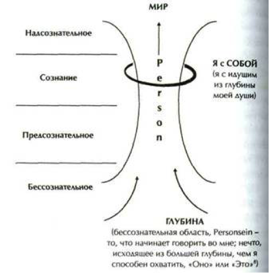

Выделение в ЭП онтологического и персоналистического направлений позволяет дифференцировать ее предметную область следующим образом:
К онтологическому направлению экзистенциальной психологии мы относим Dasein-анализ (Л. Бинсвангер, М. Босс и их последователи), современную английскую школу экзистенциального анализа (Э. Спинелли, Э. ван Дорцен), а также североамериканскую ветвь экзистенциальной психологии и психотерапии (Р. Мэй, И. Ялом, С. Мадди, Дж. Бьюдженталь). Рассмотрение основных положений концепций Л. Бинсвангера и М. Босса позволяет сделать вывод, что они используют философию М. Хайдеггера как инструмент или как карту для понимания пациентов. В концепции М. Хайдеггера каждый автор берет то, что ему ближе, и то, что находит более полезным для работы с пациентами, при необходимости внося в исходную карту оригинальные дополнения. Представители современной английской ЭПТ, в свою очередь, дополняют и улучшают «карты» Л. Бинсвангера и М. Босса. Североамериканская экзистенциальная психология в качестве философского базиса использует в первую очередь работы С. Кьеркегора, Ж.-П. Сартра и К. Ясперса, а не М. Хайдеггера.
К персоналистическому — ранний период творчества Р. Мэя, творчество Р. Лэйнга, итальянский экзистенциальный анализ (А. Меркурио), а также «третью венскую школу психотерапии» (В. Франкл, А. Лэнгле). Основное внимание в теоретических концепциях персоналистического направления экзистенциальной психологии уделяется тому, как происходит актуализация личности и обретение способности проживать экзистенцию. Субъект-объектное разделение здесь полагается изначальной данностью. При актуализации личностного начала может происходить временное снятие этого разделения в процессе феноменологического постижения смыслового устройства мира, а также в процессе общения с другим человеком как с личностью (общение как Встреча, по М. Буберу, или как экзистенциальная коммуникация, по К. Ясперсу). Наибольший вклад в развитие персоналистического направления в ЭП внесла «третья венская школа психотерапии». Начало положил В. Франкл, в модели человека которого вертикаль духовного, личностного измерения — «свободного в человеке», собственно человеческого в человеке — противопоставлена плоскости психофизического, детерминированной телесной конституцией, семейным воспитанием и социальным научением (В.Б. Шумский «Онтологическое и персоналистическое направления в экзистенциальной психологии»).
Вместо одного экзистенциального анализа перед нами предстает две весьма различающиеся в исходных методологических основаниях версии, онтоцентрический экзистенциальный анализ и антропоцентрический экзистенциальный анализ.
Антропоцентрический экзистенциальный анализ наиболее ярким представителями, которого являются Сартр и от части Бинсвангер (в той части, где он занимается исследованием экзистенциально априорных структур), видит процедуру экзистенциального анализа именно как научное исследование, хотя и обладающее определенными отличиями от традиционного естественно-научного подхода. В частности Бинсвангер утверждает, что по сравнению с естественно-научным методом, который «истощает» в своей интерпретации жизненное содержание феноменов, экзистенциально аналитическое исследование имеет двойное преимущество. Во-первых, оно имеет дело не с тем или иным концептом жизни, но подходит к исследуемому явлению более широко и целостно оно вскрывает структуру экзистенции как бытие-в-мире и к-миру. Во-вторых, он позволяет экзистенции говорить самой на своем языке. Вслед за Хайдеггером Бинсвангер акцентирует важность языка, поскольку именно в языке фундаментальная структура нашего бытия наиболее артикулирована. В случае АЭА субъект исследования — это экзистенциальный аналитик, а объект исследования — экзистенциально априорная структура пациента (или миропроект в случае Сартра, или структура интенциональности в случае Мэя). Феноменологическая установка и эйдетическая редукция Гуссерля легла в основу методологии антропоцентрированных версий экзистенциального анализа, к которым можно отнести Ж.П.Сартра, а также с некоторыми оговорками, Л.Бинсвангера и К.Ясперса. Определенную тягу к антропоцентрированным подходам испытывает экзистенциальный анализ А.Лэнгле.
Онтоценрический экзистенциальный анализ. Понимание методологии ОЭА вызывает определенные сложности в силу того, что онтоценрический АЭ пытается выйти за рамки, традиционного для классической науки разделения субъекта и объекта. Субъектом действия, если можно так выразиться, становится само бытие, а человек являющийся его частью лишь помогает ему (т.е. феноменам бытия) осуществляться, переходить из состояние сокрытости в состояние явленности. В основу методологии онтоцентрической версии экзистенциального анализа Медарда Босса легла фундаментальная онтология Мартина Хайдеггера, являющаяся развитием и одновременно радикальным преобразованием феноменологического метода Гуссерля. Следуя своей базовой установке видеть человека в качестве слуги бытия («не бытие для человека, а человек для бытия», «не жизнь для человека, а человек для жизни»), ОЭА соответствующим образом подходит и к практической работе с человеком. Для того, чтобы лучше проиллюстрировать данный момент мы можем воспользоваться метафорой окна, рассматривая в качестве окна самого человека. Чем шире раскрыто окно, тем больше света оно может пропустить, соответственно тем больше вещей (феноменов бытия) оно может высветить. То же самое мы можем говорить и о прозрачности его стекла. В этой связи, не случайно излюбленными терминами онтоцентрических экзистенциальных аналитиков являются такие слова как «свет», «открытость», «прозрачность». При работе с конкретным человеком основная задача ОЭА психотерапевта или педагога помочь человеку раскрыться, стать прозрачным по отношению к бытию (В.В. Летуновский «Сравнительный анализ различных версий экзистенциального анализа»).
В реферате Бинсвангера Ueber Phanomenologie, написанном им в 1922г. и явившемся в определенном смысле манифестом феноменологической психиатрии Бинсвангер отталкивается от «Общей психопатологии» Ясперса, но идет дальше него. Если для Ясперса феноменология — один из многих методов психологического исследования в психиатрии, то для Бинсвангера — он главный и определяющий.
В конце тридцатых Франкл написал свою первую книгу — «Врачевание души», которой было суждено увидеть свет только после войны. В 1942 Франкл всё же попал в концлагерь. Франкл прошёл Освенцим, Дахау и Терезиенштадт, сохраняя рукопись своей первой книги и, оказывая психотерапевтическую помощь заключённым, и вышел на свободу 1945 г. Глубокий духовный опыт этого события в корне изменил его взгляды на смысл человеческой жизни, а соответственно и на смысл работы психотерапевта. Опыт своего пребывания в концлагере Франкл описал в книге «Психолог в концентрационном лагере» (1946 г.). Эта книга сделала его знаменитым и переиздавалась много раз, её общий тираж составил более 2,5 млн. экземпляров.
Незадолго до начала Второй мировой войны Бинсвангер знакомит неудовлетворенного фрейдистским обоснованием психотерапевтической практики М.Босса со своими работами, а также с работами Хайдеггера. Некоторое время Босс находится под влиянием Бинсвангера. Война прерывает научные изыскания Босса. После войны в 1947г. Босс отправляется в Шварцвальд к опальному в то время Хайдеггеру и предлагает ему сотрудничество и дружбу, которые продолжаются около 25-лет вплоть до смерти последнего. По всем сложным вопросам, прямо скажем, далеко не самой простой методологии, Босс имеет возможность обращаться непосредственно к ее автору — Хайдеггеру, который часто посещает его дом в Цолликоне. Их регулярные встречи, превратились впоследствии в знаменитые Цолликонновские семинары, на которые иногда собиралось до ста пятидесяти человек. После встречи с Хайдеггером у Босса просыпается творческое вдохновение, и он пишет одну книгу за другой в русле Dasein аналитического подхода: «Значение и содержание сексуальных перверзий» (1949г.); «Введение в психосоматическую медицину» (1954г.); «Анализ сновидений» (1953г.); «Психоанализ и Dasein анализ» (1957г.).
Совершенно отдельно от основного русла экзистенциального анализа развивался экзистенциально-инициальный подход Калфрида Дюркхайма. Перед самой войной в 1937 году Дюркхайм уехал в Японию и прожил там до самого окончания войны, изучая японскую духовную культуру. Вернувшись на родину, Дюркхайм основал в 1948г. Центр Экзистенциально-инициальной психотерапии в Тоодтмоос-Рютте (Шварцвальд), кстати говоря, не более чем в двух-трех километрах от загородного дома Хайдеггера. Данный институт функционирует и в настоящее время.
Стоит отметить, что Бинсвангер оказал заметное влияние на Ролло Мэя, выпустившего в 1958 году совместно с Эрнестом Энджелом и Генри Эленбергом книгу Existence, с посвящением Л.Бинсвангеру и Э. Минковскому. Книга соответственно содержала вступительные статьи Мэя и соредакторов, а также переводы случаев Илзе и Эллен Вест Людвига Бинсвангера, случай шизофренической депрессии Эугена Минковского и переводы статей Ирвина Штрауса и В.Е. фон Гебзателля. Данная книга открыла мир экзистенциальной психиатрической и психологической мысли американцам.
После смерти в 1990г. Медарда Босса главной фигурой в Dasein анализе является его ученик и коллега Жион Кондрау. Более 20-ти лет Кондрау посвятил организаторской и административной деятельности, развивая институциональные образования Dasein анализа. Во многом по его инициативе в 1970 году было образовано швейцарское общество Dasein анализа. Кондрау является бессменным директором Dasein аналитического Института Психотерапии и Психосоматики открытого при активном участии М.Хайдеггера в 1971г. на средства М.Босса. По сей день этот институт является самым известным учреждением в области Dasein анализа.
В своем подходе к человеческой реальности Хайдеггер исходит не из определения сознания как некоей субстанции (Картезианская парадигма) наделенной теми или иными свойствами, а пытается найти способ подхода к тому существу, которым являемся мы сами максимально непредвзято, не привнося к пониманию ничего внешнего по отношению к этой «реальности». Поэтому Хайдеггер вместо того, чтобы оперировать традиционными понятиями — «Я», «субъект», «сознание», «cogito», — выдвигает в качестве исходной базовой структуры категорию Dasein.
Чтобы избежать предвзятости умозрительных интерпретаций человеческой реальности, Хайдеггер формально обозначает человека термином Dasein (Бытие-вот, Присутствие), а затем пытается дать тщательное феноменологическое описание этого явления предельно изначально в том виде, в котором оно всегда имеет место до возможного теоретического постижения. Фундаментальной особенностью, которая изначальна присуща человеческому существованию, является по Хайдеггеру его отношение к собственному бытию. Подчеркнем не рацио, не социальность, а именно отношение к собственному бытию. Dasein существует таким образом, что для него его собственное бытие всегда является проблемой. Dasein есть сущее, которое, понимая в своем бытии, относится к своему бытию.
В своем бытии, Dasein всегда определенным образом относится к бытию в целом и тем самым пребывает в модусе понимания бытия. Таким образом, человек не просто присутствует, наличествует в мире вместе с другими сущими. В своей жизни он сталкивается с проблемой исполнения, реализация своего бытия, к которому он относится как к своей собственной возможности. Однако исполнение и реализация своего бытия согласно Хайдеггеру возможна лишь в состоянии открытости. Человек сам есть «просвет бытия», открытость, через которую вещи переходят в состояние явленности, исполняются.
Слово Dasein традиционно обозначает наличествование (Vorhandensein), существование. В «Бытии и времени» Dasein однако понимается по другому... Это «Da» не имеет ввиду указания места для сущего, но должно обозначать открытость, в котором сущее может быть присутствующим для человека, а также он сам для себя самого. (Хайдеггер, 1992, с.87).
По Хайдеггеру Dasein ни сознание и ни вещь, также неверно было бы говорить о нем, как о субъекте, которого можно поставить на место сознания. Скорее наоборот, словом Dasein названо такое, в чем впервые только и можно иметь опыт места, а именно место истинности бытия, чтобы потом соответственно осмыслить его. Все, с чем мы сталкиваемся в этом мире, выступает не как противостоящая нашему сознанию предметность, но всегда определенным образом воздействующая на нас реальность. Мы оказываемся вовлеченными в совокупную целостность связей, предшествующую и не поддающуюся рефлексивному постижению. Эта совокупная целостность связей составляет неявный имплицитный фон предопределяющий бытие Dasein. При этом в определении Хайдеггеровского Dasein не субстанциональный, а предикативный подход является решающим.
Хайдеггер утверждает, что бытие нас самих может быть обозначено с помощью другого термина — «Бытие-в-мире». По словам В.В.Бибихина «В основной мелодии своей жизни человек не другое, чем мир» (Бибихин, 1995). Мы существуем, находясь в мире. Существование человека имеет место лишь там и тогда, где и когда мир задан этому существованию. Между человеком и миром существует неразрывная глубинная связь. Всегда, до любого рефлексивного обращения мы уже обнаруживаем себя находящимися в мире, переживаем этот мир, который каким-то образом воздействует на нас. Он определяет наши состояния, наши переживания. Мы всегда определенным образом «настроены» до того, когда можем осознавать себя в этом мире.
Таким образом, существование (экзистенция) по Хайдеггеру является не данностью, не субстанцией, а скорее возможностью, открытостью, проектом. Иными словами, человек представляет проект, который находится в постоянной динамике, в постоянной открытости и еще подлежит реализации.
Бинсвангер говорит о том или ином индивидуальном Dasein. Хайдеггер ограничивается тем, что говорит о Dasein вообще. Смысл в том, что в бытии конкретного индивидуума есть нечто, что упускается хайдеггеровским описанием Dasein. Этим нечто могут быть только экзистенциальное априори и индивидуальный проект мира. (Нидлман,1999, с.117)
Босс понимает Dasein как «высвечивающее», выводящее вещи «на свет». Метафора света и высвечивания определяет в том числе и понимание Боссом таких вещей как психопатология, психологическая защита, терапевтический стиль, интерпретация сновидений. Защита по Боссу — есть «невысвечивание» отдельных аспектов жизни, а психопатология (как состояние человека) подобна выбору жизни в темноте. Терапия возвращает людей к их базовой открытости. Мы можем назвать этот процесс также высветлением (Boss, 1962). Высвечивание у Босса очень тесно связано с открытостью. Чем больше открытость, тем ярче свет. Для наглядности мы также можем воспользоваться метафорой окна. Окна невротиков узкие и тусклые, окна психотиков — совсем маленькие дырочки, которые едва пропускают луч света. Так вот, эта вспышка (инсайт, озарение) позволяет свету прорваться через все преграды и высветить вещи из темноты, только в этом случае мы способны эти вещи понять или осознать, точнее будет сказать понять значение этих вещей, их смысл.
Возможно первое, на что следует обратить внимание при подходе к Dasein аналитике Хайдеггера — это то, что Хайдеггер весьма далек от традиционного понимания анализа как расчленения к простейшим составляющим. Согласно Хайдеггеру Dasein аналитика — это и не возвращение симптома к его истоку (Фрейдовский психоанализ). Для Dasein аналитики, кроме того, ни коим образом не приемлемы определения человека как субъективности и трансцендентального Я-сознания (Гуссерль). В Dasein аналитике само человеческое существование понимается как Dasein. Поэтому феномен человека понимается не онтически — т.е. в его полной детерминации как конкретный феномен, а онтологически — т.е. в его полном бытии. Dasein аналитика старается постичь основание самой возможности феномена человека — то есть того, что дает возможность этому феномену быть так как он есть. А поскольку по Хайдеггеру наиболее точный способ подхода к рассматриванию самой возможности существования феноменов, — это феноменология, следовательно, основной инструмент онтолога (Dasein аналитика) есть феноменология. «Онтология возможна только как феноменология» (Хайдеггер а, 1993).
Под аналитикой понятий я понимаю не их анализ и не обычный в философских исследованиях прием разлагать встречающегося понятия по содержанию и делать их отчетливыми, а еще мало применявшееся до сих пор расчленение самой способности рассудка для изучения возможности априорных понятий, отыскивая их исключительно в рассудке как месте их происхождения, и анализируя чистое применения рассудка вообще... принципиальный характер этого расчленения означает не разделение на элементарное, а возвращение к единству (синтезу) онтологической возможности бытия сущего, или в кантовском смысле: к предметности предметов опыта. Потому здесь не может быть и речи о какой-либо каузальности, которая всегда касается лишь онтического отношения между сущей причиной и сущим действием. Целью аналитики, следовательно, будет выявление первичного единства функции способности. В аналитике дело идет о возвращении к «связности в системе». Задача аналитики — увидеть целое единства онтологических условий. Аналитика, онтологична по своему характеру, не есть разрешение на элементарное, но артикуляция единства структурного строения. (Хайдеггер, 1992).
Из вышеизложенного мы можем констатировать тот факт, что человек, сам являясь бытием (Dasein — Вот-бытие) способен осуществиться только отвечая собственной открытостью на призыв вещей явиться в мире всей своей полнотой, т.е. в полноте своего бытия. При этом, следует постоянно иметь в виду, что эти вещи — не есть нечто противопоставленное человеку в смысле предметности. Мы соединены с ними не видимыми связями, еще до того как они достигли своей явленности в мире (бытие-в-мире, бытие-с-другими).
Бинсвангер принимает онтологический тезис Хайдеггера, заключающийся в том, что конституция или структура экзистенции — есть Бытие-в-мире. На его взгляд Dasein-аналитика Хайдеггера представляет собой последовательное развитие и расширение фундаментальной философской теории, а именно теории Канта относительно условий возможности опыта (в естественнонаучном смысле), с одной стороны, и Гуссерлианской теории трансцендентальной феноменологии — с другой. Тем не менее, в своей концепции экзистенциального анализа Бинсвангер несколько отходит от «ортодоксального» Хайдеггера, в том смысле, что Dasein Бинсвангера становится не столько «вот-Бытием», в котором сущее становится сущим для человека (см. Хайдеггер 1993, с.87), а чем-то близким к понятию трансцендентального субъекта.
Для самого Бинсвангера связь экзистенциального априори с Dasein заключается в том, что Dasein конституирует свой мир с помощью смыслового контекста экзистенциального априори. Dasein находит свой мир и свое Я, конституируемое таким образом. Далее Dasein либо:
Таким образом, процедура экзистенциального анализа Бинсвангера заключается в определении экзистенциально априорной структуры конкретного способа существования человека, конституирующего его поведение во всех сферах его жизни. Бинсвангер рассматривает индивидуальное Dasein как конституирующее свой мир с помощью смысловой матрицы экзистенциального априори (под эгидой доминирующей категории или категорий). Экзистенциальному анализу предшествует феноменологический анализ, как средство первичной обработки информации.
Экзистенциальное априори, полученное в результате ЭА, представляет собой своего рода смысловую матрицу, являющуюся ключом к пониманию конкретных проявлений деятельности субъекта. Согласно концепции Бинсвангера, душевное здоровье предполагает осознание своего способа конституирования мира и как следствие — открытость по отношению к предоставляемым судьбой возможностям. И наоборот, захваченность своим способом конституирования мира (особым проектом мира), неспособность осознать его, приводит к психическим заболеванием. Крайнее проявление такой «захваченности» — галлюцинации, когда человек видит только то, что позволяет ему увидеть его проект, и не способен воспринимать никакую информацию извне адекватно.
Сущность и цель Dasein анализа есть открытость экзистенции, наша собственная открытость в бытии, так чтобы другие сущие, т.е. другие люди, объекты, события и даже сама бытийность как таковая могли явиться, стать явленными, узнанными, понятыми именно тем путем, который наиболее соответствует их сущностной природе. Эти сущие через нашу открытость стремятся явиться в мир и призывают нас ответить на их призыв. Именно в этом заключается наша ответственность.
Первый вектор — движение от понимания тела в качестве физического организма к идее телесности. Напомним, что телесность Босса распространяется практически на всю человеческую действительность, пронизывает его ментальную и эмоциональную жизнь и начисто исключает дуализм души и тела.
Второй вектор — от понятия психики к человеческому бытию-в-мире. Основная идея Босса заключается в том, чтобы, наконец, отказаться от традиционного представления психики как в виде некоей изолированной капсулы с некоторыми ментальными и аффективными свойствами. Окончательно разрубить Гордиев узел соотношения физического и психического единственно возможным для Босса путем — рассматривать психические феномены как проявления человеческой открытости миру и бытия-в-мире.
Третий вектор — движение от концепта сознания к фундаментальной открытости человеческого существования. В противоположность Фрейду Босс утверждает, что, на самом деле, нет никакой структуры сознания. (Речь идет не только о традиционной Фрейдовской конструкции с Эго, Суперэго и Ид, но и о всех ее возможных модификациях.) Меняется центр активности, он переходит от человека к самим вещам, к бытию. В концепции Босса, также как Хайдеггера и их древнегреческих коллег понятие Эго отсутствует вообще. Субъектом, если можно так выразиться, становится само Бытие. В этом смысле сознание — есть феномен открытости человека феноменам, которые ему встречаются (открываются).
Четвертый вектор — от психического бессознательного к фундаментальной «сокрытости». Данный вектор очень близок к тому, который обсуждался ранее. В этом смысле, то, что по Фрейду было бессознательным, выступает закрытым (сокрытым) для принимающего пространства открытости, каковым по Боссу и является человек. Оно просто исчезает из человеческого мира.
Пятый вектор — от понятия влечения к человеческой возможности специфическим образом относиться к окружающему миру. Босс предлагает акцентировать внимание на специфике нашего отношения к феноменам окружающего мира и к самому миру в целом. Именно в этой специфике, в нашей особой настроенности на мир заключена сущность тех явлений, которые традиционно принято называть влечениями.
Шестой вектор — от психических инстанций (агентов) к экзистенциальному пониманию человеческих способов поведения. Пафос Босса заключается в основном, в том, что в феноменах той человеческой реальности, которую принято называть психической, действует не тот или иной агент (Я, Оно, и Сверх-Я), а действует само Бытие, выражая себя, если можно так выразиться в специфических для каждого конкретного человека формах его поведения. Поэтому и путь к пониманию конкретного человеческого поведения лежит через понимание его мира и его специфического отношения к своему миру, к вещам, которые ему в этом мире встречаются.
Седьмой вектор — от эмпатии к постижению того, как люди непосредственно понимают друг друга. Босс говорит о том, что понимание между людьми происходит мгновенно, и для того, чтобы оно произошло ненужно никакого специального вчувствования. Понимание людьми друг друга есть изначальное условие их бытия, и связано с их открытостью по отношению друг к другу. На то, как люди понимают друг друга оказывает влияние их настроенность в каждый конкретный момент времени, а также преобладающий характер их настроенности в целом.
Последний, восьмой вектор — от психических причин и психодинамики к пониманию мотивационных контекстов. Босс отвергает каузальное объяснение человеческого поведения и дает его объяснение (в терминах Босса вернее было бы сказать высвечивание) через смысловые контексты отношения человека к возможностям своего бытия-в-мире. Способность постигать значение и смысл встречающихся (открывающихся) феноменов — исключительная прерогатива человека, радикально отличающая его бытие от бытия других существ. Понимание человеческой мотивации для Босса лежит в измерении значимости того, что для нас важно в мире. Из разной значимости разных вещей складываются определенные мотивационные контексты, через которые только и возможно понимание направленности и смысла человеческого поведения.
Босс считал, что экзистенциалы могут стать направляющими для гуманной медицины. В рамках этих экзистенциалов Босс дает общую теорию психологического учения для медицины и Dasein-сообразную общую патологию. При этом все заболевания, включая психические, подразделяются им на четыре группы:
В то же время Босс подчеркивает, что не существует нарушений в изолированном виде, ограниченном пределами одной из 4-х групп. Поэтому всякая болезнь накладывает свою печать, в какой-то мере, на всего человека, т.е. проявляется во всех четырех группах, при том, что одна из групп является ведущей. Преимущество Dasein аналитически ориентированной медицины по Боссу состоит в том, что она позволяет восполнить концептуальную нехватку целостности в современной медицине.
Традиционно экзистенциальные измерения представляются в виде тройки, включающей физическое, социальное и личное измерения, которые как правило называются по-немецки Umwelt, Mitwelt и Eigenwelt (Бинсвангер, 1946, Босс, 1963). Бубер (1923), Ясперс (1931,1951) и Тилих (1952) вводят четвертое, духовное измерение, или Uberwelt; его нужно учитывать и прояснять (ван Дорцен-Смит, 1984). Перевод немецких терминов зависит от конкретного автора и его понимания того, какие концепты имелись в виду.
Umwelt описывает природный мир в его физическом, биологическом измерении, где люди склонны действовать согласно инстинктам. Mitwelt описывает общественный мир с его социальным измерением человеческих взаимоотношений, в котором человек, вероятно, следует изученной, культурной манере. Eigenwelt описывает личный мир человека с его психологическим измерением, мир личного и личностного опыта. Uberwelt описывает идеальный мир с его духовным измерением, мир верований и стремлений, где человек обращается к ценностям, находящимся вне его самого, и осмысливает свое существование.
Из всех четырех природный мир — самый фундаментальный. Несомненно, человеческое бытие всегда укоренено в актуальном физическом присутствии в материальном мире.
Осмысливание этих наблюдений важно для понимания личных переживаний клиента по поводу природного мира. Пока люди, выражаясь терминами Хайдеггера, брошены в фактическое природное окружение, которое налагает на них ограничения и вписывает их в рамки, их «индивидуальная реакция на данную ситуацию может существенно различаться. Отношение к действительности природных границ субъективно, даже притом, что сами границы абсолютны. Жизнь в природном мире требует соблюдения определенных правил и законов, но дом, который человек в нем строит, может представлять собой опыт крайне индивидуальной интерпретации этого данного мира.
Исследование отношения клиента к структуре его природного мира — критически важный шаг к полному пониманию его способа бытия в мире. В расчет надо принимать различные аспекты природного мира. Это измерение включает в себя целостное осознание полного спектра физических ощущений, имеющих как внутренние, так и внешние источники. Образ тела, способность бороться с болезнями, сила и слабость, отношение к пище, сексу и деторождению — все это составные части конкретного природного мира клиента. Нужно обратить внимание на то, подходят или не подходят клиенту климат, погода и его среда. Наше беспокойство и предпочтения редко бывают случайными. Поскольку терапевт не спрашивает клиента специально ни об одной из этих проблем, всякий раз, когда клиент эти темы поднимает, необходимо стимулировать их дальнейшее изучение и прояснение. Часто можно выяснить, что, на первый взгляд совершенно маловажные, темы, предложенные клиентом, содержат на самом деле ценную информацию о его мире и реальности.
Клиентка: Вчера был один из таких дней: только я вышла отправить письмо, как начался ливень — мне пришлось быстро вернуться домой, и в результате письмо отправлено позже, чем надо.
Консультант: Вы не любите попадать под дождь, да?
Клиентка (немного удивленно): Обычно нет, я люблю дождь, от него волосы вьются. Я думаю, на самом деле я не хотела отправлять письмо.
Проблемы в этой области, как правило, имеют далеко идущие последствия в других измерениях бытия. Природный мир — фундамент бытия личности, и общая гармония на этом уровне необходима для того, чтобы все было гладко на других.
Способность настроиться на природное измерение бытия, вера в безусловную правильность его законов и особый талант — следовать этим законам на пути созидания, приносят радость, а также обеспечивают наше выживание в этом мире. Часто людям помогает выработать такую способность их хобби, занятия спортом или игра. Рыбалка, садоводство, верховая езда, парусный спорт, альпинизм или игра в гольф — все это примеры способности человека принимать природный мир и ощущать трепет бытия.
Поскольку большинство видов активного отдыха являются прекрасными примерами позитивной жизни в природном мире, постольку часто есть смысл использовать любимый вид спорта или игру как метафору. Такая метафора служит иллюстрацией, в простой и привлекательной манере отображая более сложную борьбу с жизнью в других измерениях.
Колин, у которого были такие трудности в общении с его сыновьями-подростками, что он практически отчаялся когда-либо эти отношения наладить, был страстным приверженцем парусного спорта. Он смог приступить к осмысливанию тех трудностей, которые беспокоили его дома, когда начал рассматривать их в сравнении с парусным спортом. Самое главное было в том, что в этом исследовании Колин признал: никто никогда не идет против ветра напрямик; нужно быть гибким и уметь где надо лавировать. В своих отношениях с сыновьями он никогда не лавировал — он боялся, что они не будут уважать его, если он окажется слабым. Но сравнение с плаванием сделало для него очевидным следующее: он будет куда более сильным и гораздо лучше сможет контролировать процесс, если сможет лавировать.
Взаимодействие с природой. Меч также предоставляет возможность терапевту обращать внимание клиента на экзистенциал взаимодействия с природой. На одной из моих последних групп, которая проходила в августе на Байкале, эти аспекты ощущались особенно ярко. Группа работала на холме над озером. А погода в то время на Байкале характеризовалась особой изменчивостью, за 4 часа занятий она менялась раз шесть: от сурового пронизывающего ветра и ливня до яркого теплого солнца. Совершенно удивительное ощущение тебя охватывает, когда ты выполняешь движение с мечом при сильном встречном ветре или же во время ливня. С одной стороны, это великое ощущение своего единства со всем живущим в этом мире, причем живым воспринимается все: горы, деревья, камни, озеро; а с другой — радость борьбы, противостояния, радость от того, что нужно напрягать свою волю и силы. Такое вот парадоксальное единство в борьбе, эдакий праздник жизни, без всякой злости и агрессии.
Второе измерение человеческого бытия — то, в котором люди взаимодействуют друг с другом. Близкие отношения не вполне могут относиться к этой категории, поскольку они проникают в третье, личностное, измерение. Отношения социального мира — в основном обычные повседневные взаимодействия с другими в социуме. Общественный мир — арена, где сталкиваются все аспекты социального взаимодействия, неотъемлемые части человеческого бытия.
Подобно тому, как человеческая жизнь всегда базируется на основании природного мира, так же и социальный мир всегда остается вторым фундаментальным контекстом. Переживания людей связаны с социальной, политической и культурной средой, которая до известной степени определяет поступки, чувства и мысли.
Роль консультанта или терапевта при рассмотрении социального измерения сходна с той, которую он играет в работе с физическим измерением. Роль эта состоит в том, чтобы стимулировать прояснение текущего отношения клиента к тем «данностям», которые есть в его мире и подтолкнуть его к более широкому видению перспективы. Социальная область бытия включает отношение людей к своей расе, социальному классу или другой референтной группе, своей стране, языку или культурной истории, их семейному окружению или коллективу на работе и их общее отношение к власти и закону.
Конфликт власти может быть решен четырьмя способами. Первые три основаны на предположении о неизбежности конкуренции между людьми. Приняв конкуренцию за модель, мы можем, в первую очередь, попытаться властвовать над другими людьми. Во-вторых, мы можем подчиниться другим и посвятить себя им, и, таким образом, сделаться необходимыми для них. В-третьих, мы можем полностью отказаться от контактов с другими и, таким образом, избежать конфликтов и конкуренции, по крайней мере, на время. Четвертый путь — путь сотрудничества. Эта модель предполагает, что мы думаем о себе так, будто мы находимся не в состоянии конкуренции, а в альянсе. В целом кооперация возможна, если стороны имеют общие интересы и цель. И она непременно приведет к конкуренции с другими группами, у которых интересы противоположны.
Люди часто застревают в рамках одной модели, отказываясь от своей способности осмысливать ситуацию, и упуская возможность выбора. Таким путем можно прийти к положению жертвы — жертвы собственной преданности, либо превратиться в человека, который настолько озабочен своими интересами, что закончит в полной изоляции, полностью отрезанный от каких бы то ни было контактов, общения или привязанностей.
Третье измерение мира клиента, которое надо изучить, — то, где он взаимодействует с собой. Частный мир — страна близости. Он включает как близость с собой, так и близость с другими. Личный мир — мир дома: место, где ты чувствуешь себя легко в окружении знакомого и родного. Этот частный мир — мир Я и Мы. Он охватывает все, что рассматривается как часть Я.
Внутренний мир включает в себя чувства, мысли, характерные черты, идеи, стремления, объекты и людей в той степени, в которой они идентифицируются как свои собственные. Хотя современное общество поощряет индивидуализм, доходящий до самоуверенности, в природных и социальных отношениях, это не приводит к развитию богатой внутренней жизни. Частный мир людей часто бывает на удивление пустым и безжизненным. Многие клиенты приходят на консультирование или терапию в надежде найти себя в процессе работы. Многие другие даже не отдают себе отчета в той внутренней пустоте и депривации, которая сопутствует их проблемам.
Когда клиенты начинают рассказывать о себе, стараясь точно описать и выразить, кто они такие, очень быстро становится очевидно, где они себе отвели место. Кто-то уделит массу внимания и подробно опишет свой природный мир, делая упор на физическое нездоровье. Другой будет долго рассказывать о своих ролях, описывая фрустрации, пережитые во взаимоотношениях с другими, демонстрируя, таким образом, наибольшую озабоченность проблемами в социальном мире. Те, кто серьезно озабочен проблемами своего личного мира, могут особо выделять конкретные сильные и слабые стороны своего характера и личности, которые они рассматривают как важные. В работе с парами их озабоченность проблемами частного мира проявляется во взаимном внимании к провинностям и особенностям друг друга.
Первое что нужно сделать — понять, какие аспекты своего частного мира клиент считает своими активами. Как эта личность воспринимает свои характерные и личностные особенности, как она строит внутренние взаимоотношения с собой? Как она сама видит свою особую, частную вселенную, или как она сама поставила под удар свое секретное убежище? Главный вопрос: где в своем мире этот клиент чувствует себя у себя дома, если такое место вообще имеется? Потом исследование продвигается в направлении возможного открытия новых и скрытых аспектов этих качеств. Очень часто исследование начинается с негативных качеств, и тогда проблема состоит в том, чтобы обнаружить потенциал, скрытый в этих негативных моментах.
Быть в мире в себе и с собой чрезвычайно важно для удовлетворительных отношений в мире общества, и это сущностно необходимо, если человек хочет установить интимные отношения в частной сфере.
Истинной близости и интимности с другим человеком достичь трудно. Способность слиться в одно целое и мыслить категориями «мы», а не «я и ты» в наше время не просто редко встречается — это табу. Кажется, в современном обществе есть неписанное правило, которое определяет близкие отношения как опасные и регрессивные.
По результатам наблюдения проблемных и разрушающихся супружеских отношений был сделан вывод, что все пары, в которых супруги слишком сблизились, рискуют испортить отношения, и что, таким образом, умеренность в любви важна не меньше, чем страсть в сексе. Притом, что это наблюдение наиболее хорошо подходит к отношениям общественного мира, оно игнорирует отношения частного измерения.
На деле, по предположению Бинсвангера (Бинсвангер, 1944), даже отношения людей к себе может быть структурировано по множественной модели общественного мира. В этом случае они не ощущают внутри себя единства, но отделены от себя, борются с конфликтующими элементами, стараясь скорее доминировать над собой, чем искать внутренний источник динамического парадокса.
Исследование субъективности. Несколько минут потратьте на то, чтобы, по возможности, сосредоточиться, оставить на время все другие дела. Затем начинайте с первого вопроса и работайте дальше.
Изучение результатов. Когда у вас выйдет время или вы закончите отвечать (отведите себе достаточно времени, чтобы поработать как следует), отложите эти вопросы, по крайней мере, на 24 часа. Надо подойти к ним со свежим взглядом.
Теперь прочитайте каждый вопрос и свой ответ на него. Держите поблизости блокнот или диктофон. Поразмышляйте над тем, что вы сказали. Может быть, сейчас вы хотели бы что-то сказать иначе? Удивили ли вас некоторые ответы? Смутили? Были особенно приятны? Способны ли вы показать самому себе любую свою боль? (У нас у всех она есть, так что не вините себя за это.) Как у вас насчет надежды на себя? Вы действительно готовы взять на себя ответственность за свои проявления? Или вы считаете, что все это появилось лишь благодаря вопросам, или мне, или еще чему-то; или вы, все же, смотрите еще и внутрь себя? (Дж. Бюдженталь «Искусство психотерапевта»).
Свободное рисование. Процесс рисования строится таким образом, чтобы были задействованы самые глубокие слои психики, если так можно выразиться глубинное я. А в глубинном я, если верить Виктору Франклу (Франкл, 2000 а), скрывается не только Фрейдовское оно (т.е. наши инстинктивные, прежде всего, сексуальные потребности), но и наше духовное я, являющееся по тому же Франклу источником смысла. При чем не верно было бы локализовать это духовное я непосредственно в самом человеке, скорее духовное я — это место встречи человека с ноологическим измерением бытия. На языке Дюркхайма это означает встречу со своей сутью, т.е. с самим бытием, которое в этом смысле и «ведет» процесс рисования. Пациент в этом случае выполняет рисунок так как ему хочется, без заданной формы. Рисование проводиться с закрытыми глазами на широких листах бумаги, твердыми восковыми мелками. Непосредственно перед рисованием проводиться тренировка сосредоточенности и собранности через тело. Инструкция терапевта заключается в просьбе по возможности не рисовать с закрытыми глазами как с открытыми, т.е. придумать образ, а затем его отобразить. Предпочтительна обратная последовательность, сначала рисование, а затем ментальные ассоциации и эмоциональные реакции, проще говоря, пациенту предлагается рисовать телом, а не головой. Опыт показывает, что большинство пациентов начинает правильно выполнять инструкцию со второй или третей сессии.
Толкование опыта осуществляется примерно так же, как и в первом случае, однако разница заключается в том, что в случае свободного рисования, мы как бы имеем проекцию целостного бытия-в-мире пациента, а не одного или нескольких его аспектов. При этом центральными вопросами, которые «при помощи терапевта задает себе пациент», как уже ранее указывалось, являются вопросы: «Как я живу? Как я существую?» Причем толкование осуществляется преимущественно самим пациентом, терапевт лишь помогает ему структурировать мысли, в тоже время, предупреждая различные ложные пути в сторону психологических защит. Основной акцент в толковании — это насколько способ моего рисования соотносится со способом моего бытия, основными манерами моего действования в моей жизни.
Изменение качества и содержание рисунка часто коррелируют с изменениями в его жизни, в структуре его бытия. Из опыта собственной терапевтической практики я могу сказать, что появление в рисунках качества прозрачности (которое, кстати говоря, безошибочно улавливается группой) может соответствовать появлению этого качества в жизни, а именно свидетельствовать об исчезновении двусмысленности, о большей цельности и действенности поступков. При работе в группе соответственно используется групповая обратная связь.
Построение связей с четвертым измерением человеческого бытия помогает людям глубже укорениться не только в личном мире, но и в физическом, а также в социальном. Это четвертое измерение — духовный мир, мир идей, ценностей и значений. На самом деле, сила и гибкость личности и характера, как правило, связана с силой чувства того, что человек ценит в мире, и существующие для нас ценности — это то, что определяет духовное измерение.
Для многих людей это измерение можно описать как представление о религиозной составляющей их существования. Для других любое упоминание о духовности и религии в принципе нежелательно. Большинство людей смогут оперировать понятием измерения, которое представляет их идеи и убеждения о жизни, мире, самих себе и прочем. Духовный мир — область экзистенции, где люди создают значение для самих себя и придают смысл вещам.
Часто люди почти не сознают это измерение, особенно если они убеждены, что полностью отринули детскую религию. В этом случае они, возможно, живут одним днем и не пытаются осмыслить то, что проявляется перед ними под видом простых ежедневных надобностей. Конечно, даже такой простой взгляд на жизнь представляет собой философию или идеологию. Каждая личность обладает неявно выраженным мировоззрением.
Экзистенциальная терапия всегда стремится внести ясность в скрытую идеологическую позицию клиента и будет мягко подталкивать его к раскрытию своих ценностей и прояснению их для себя. Изучение и переоценка устаревших идеалов, которые всегда были здесь, скрытые под штукатуркой, каковую представляет адаптация к мировым социальным ценностям, сами по себе приносят клиенту облегчение, поскольку из-за отсутствия цели или самоорганизованности и недостатка независимости он считал себя неспособным поверить во что бы то ни было.
Когда люди вновь открывают свою глубинную причастность к чему-то большему, чем они сами, к каким-то идеалам, которые возвысят их над их битвой с повседневностью, для них возникает новая мотивация, которая с безошибочной целеустремленностью может провести их сквозь трудности.
Кроме того, способность сформулировать и описать те ценности, идеи и принципы, согласно которым человек живет, — первый шаг в направлении решения проблем социального, личного и физического мира. Когда становится очевидно, что какие-то идеи и ценности очень важны, человек часто находит новые силы для осуществления этих идей и ценностей, несмотря на внешнее или внутреннее давление и препятствия. Преодоление противодействия в общественном мнении, физических препятствий или слабостей характера может оказаться менее трудным на фоне поставленной задачи — реализовать свои устремления. Личностный рост, когда толчок ему дают собственные идеалы человека, понятые как вызов, способен придать жизни человека совершенно новое значение, и это осознание цели дает жизеннную силу и страсть, которые принято считать недостижимыми (см Франкл, 1955,1967).
Измерение |
Основная цель |
Конечная данность |
Реальная цель |
Физическое (тело) |
Здоровье Сила Счастье Жизнь |
Болезнь Слабость Страдание Смерть |
Выживание Эффективность Благополучие Безопасность |
Социальное (эго) |
Успех Власть Принадлежность Любовь |
Провал Бессилие Изоляция Порицание |
Признание Влияние Близость Уважение |
Личное (self) |
Целостность Свобода Аутентичность Уверенность |
Разрушение Растворение Неаутентичность Смятение |
Индивидуальность Независимость Особенность |
Духовное (душа) |
Правда Совершенство Мудрость Добро |
Ложь Несовершенство Нелепость Зло |
Понимание Достоинство Смысл Ответственность |
Рис.1. Измерения человеческого восприятия
(Э. Ван Дорцен «Практическое экзистенциальное консультирование и психотерапия»).
Из фундаментальной онтологии Хайдеггера Бинсвангер также заимствует экзистенциалы — неотъемлемые характеристики человеческого существования, несколько переиначивая их на свой лад, он говорит об исследовании таких экзистенциальных «измерений» как высота, глубина и ширина, тонкость и сопротивляемость, цветкость и светлость мира, полнота и пустота существования и т.д. Причем для Бинсвангера экзистенция и Бытие-в-мире часто выступают как синонимы.
В попытке понимания смысла человеческой экзистенции посредством феноменологической герменевтики, Dasein анализ фокусирует свое внимание на характеристиках, конституирующих человеческую экзистенцию, называемых экзистенциалами. Строго говоря, к экзистенциалу неприменим термин «понятие» (Хайдеггер, 1993.б). Экзистенциалыесть необходимые черты человеческого существования, данности, без которых оно не может рассматриваться как таковое. Босс выделяет следующие экзистенциалы как важнейшие:
Хорошая отправная точка для обсуждения человеческой со-бытийности — это феномен одиночества. По мнению Босса сам феномен одиночества невозможен как таковой без наличия феномена совместности. Одиночество всегда указывает вперед себя на некоторую совместность, событийность. Фундаментальная черта экзистенциальной событийности человеческих существ заключается в том, что они совместно поддерживают открытость мира. Это проявляется в совместных способах восприятия и ответа на то, что встречается людям в их общем жизненном пространстве. Однако эта событийность в совместном мире вовсе не тоже, что коллективное присутствие индивидуальных субъектов, которых можно представить в виде физических объектов занимающих определенную часть пространства.
Именно благодаря этой нашей фундаментальной событийности как изначального условия нашего бытия, мы способны мгновенно понимать друга. В противном случае, — говорит Босс, мы могли бы только наблюдать попытку совмещения индивидуальных инкапсулированных психических образов. Однако в феномене совместного человеческого поведения нет места диалогу об эндопсихическом материале.
Люди способны непосредственно постигать других людей без всякой гипотетической эмпатии, а просто на основании того факта, что все мы существа одного и того же вида. Вида, который существует в едином понимании своего отношения к одним и тем же феноменам. Феноменам, которые все мы высвечиваем через свою открытость миру. Именно благодаря этой фундаментальной связности всех людей друг с другом мы способно понимать друг друга мгновенно, без всякой эмпатии.
Босс уверен, что понимание человеческого существования как событийности в совместном мире может оказаться полезным не только в медицине, но, практически везде, где имеют место человеческие взаимоотношения и взаимодействия, в частности в социологии. Со своей стороны мы можем отметить, что это очевидное положение Босса-Хайдеггера действительно позволяет по-новому взглянуть на казавшиеся ранее трудно постижимыми феномены человеческого бытия, традиционно избегаемыми естественными науками. Например, такие как экстраординарные способности, пиковые переживания (peak experience) визуализация, сны и т.д.
Работа в паре. Работая в паре, партнеры учатся со-размерности как соответствию своих движений состоянию партнера, его намерениям и т.д. Работа в паре может носить контактный и бесконтактный характер, иметь конкретное задание, например, отработку определенного движения или фехтовальной фразы, или же иметь свободный характер — свободный спарринг, поединок. По моему опыту, работая в паре, участники процесса постепенно отходят от стремления обязательно победить или переиграть (центрация на себе), или — от установки ложной жертвенности собой (центрация на другом), с которой люди часто входят в отношения, и движутся к диалогу, со-беседованию, в котором их действия и движения соразмерны друг другу и процессу в целом. Поиску соразмерности способствует и смена партнеров в ходе специальных упражнений.
Через вспышку света во мраке мы начинаем видеть то, чего раньше не видели. Важно понять, что не процесс накопления информации. Это как бы некоторый инсайт, позволяющий схватить всю ситуацию в целом и тем самым ее понять. Высвечивание у Босса очень тесно связано с открытостью. Чем больше открытость, тем ярче свет. Для наглядности мы также можем воспользоваться метафорой окна. Окна невротиков узкие и тусклые, окна психотиков — совсем маленькие дырочки, которые едва пропускают луч света. Так вот, эта вспышка (инсайт, озарение) позволяет свету прорваться через все преграды и высветить вещи из темноты, только в этом случае мы способны эти вещи понять или осознать, точнее будет сказать понять значение этих вещей, их смысл.
Так же важно понять, что понимание в данном случае — не есть просто ментальный процесс. Иногда мы говорим «Он меня понимает», или «Она меня понимает», имея в виду нечто более сложное и глубокое, нежели просто ментальный процесс понимания значения слов. «Я живу с ним потому, что он меня понимает...». Что в это случае означает «понимать»? Как можно понять человека? Каким образом? Босс отвечает на этот вопрос так: Понять — означает позволить другому человеку быть в соответствие с его внутренними потенциями, смыслами, его сущностью. Таким образом, высветить — это и есть понять, только понимание это относится не только к одному человеку, а ко всем вещам в мире. Именно в этом заключается сущность высвечивания как инсайта.
Это чрезвычайно важный экзистенциал, объясняющий, почему наша открытость миру расширяется и сужается, и почему время от времени она высвечивает различные феномены. То, что осознает человек, то, на что он реагирует, зависит от его настроения в данный момент времени. Если человек тревожен, его Dasein созвучен угрозам и опасностям. Если человек счастлив, его существование созвучно миру радостных взаимоотношений и смыслов. Если настроение меняется от надежды к разочарованию, ясность мира меркнет и открытость сужается. Способ пребывания в мире постоянно созвучен тому или иному настроению. Настроения сами по себе суть экзистенциалы. В тоже время они являются потенциальными возможностями, врожденными по отношению к любой человеческой экзистенции. Наше отношение, настроенность — не в коем случае не психологические характеристики нашего состояния. Воспользовавшись любимой метафорой Медарда Босса о свете и высвечивании, мы можем говорить о том, что в зависимости от нашей настроенности меняется яркость и интенсивность, а также направленность светового луча, высвечивающего вещи, следовательно от нашего настроя напрямую зависит быть или не быть тем или иным вещам и как, каким образом им быть. В этом смысле настроенность Босса имеет не психологический, а онтологический статус.
Границы нашего восприятия и реагирования всегда зависят от нашего настроя или настроения. Если мы находимся в тревожном настроении, то мы будем воспринимать то, что сообразуется с нашей тревогой. Если мы одиноки, мы будем воспринимать то, что резонирует с нашим одиночеством. В хорошем настроении мы будем воспринимать одни вещи, в плохом — другие. Нельзя быть ни в каком настрое или настроенности. И даже, если у нас ощущение пустоты, нет никаких чувств и эмоций — это тоже настрой. Настрой определяет то, как мы относимся друг к другу. Это важно и для понимания невроза, потому что люди, страдающие неврозом — это люди с ограниченным, суженным спектром настроения. Данный факт является чрезвычайно важным для Dasein аналитически ориентированной психотерапии.
Для того, чтобы изначальная возможность бытия-радостной (радостным) могла осуществиться, отношения человека к миру должны быть свободными и достаточно открытыми.
Босс описывает Любовь как особого рода настроенность, при которой человек открыт для реализации возможности бытия-вместе, которая в свою очередь открывает человеку гораздо больше возможностей, чем его одиночное бытие. Другое важнейшее базовое состояние человека — это радостная ясность (joyous serenity). Это состояние, которое позволяет человеку «в ярком свете» видеть значения тех вещей, которые ему встречаются. Радостная ясность открывает человеческое бытие самым широким образом, являясь вместе с любовью конститутивными аспектами счастья.
Другое базовое состояние — это тревожность. В этом случае настроенность характеризуется одновременно открытостью и ограниченностью. Данное ограничение связано, прежде всего, с угрозой потери возможности удержания связи с каким-либо другим значимым бытием. Например, тревожность матери связана со страхом не за свою собственную жизнь, а за жизнь ее детей. Ее экзистенция настолько тесно соединена с экзистенцией ее ребенка, что деструкция этого бытия-вместе означает для нее деструкцию ее собственного бытия.
Босс также дает весьма интересные описания других эмоциональных состояний, например таких как печаль, способная дать человеку ценные инсайты о конечности его бытия. Истинная печаль (которую важно не путать с депрессивными состояниями), — это настрой, который возникает, когда рушатся некие значимые для нас отношения к каким-то ценимым объектам. Однако сам объект при этом не исчезает, не разрушается, не теряется. Разрушаются именно отношения. И печаль есть форма субъективного приближения к объекту, удержания его, она не позволяет ему удалиться, не позволяет отстраниться от него.
Гнев и ненависть, сужают принимающую открытость человека и тем самым ограничивают его возможности. Гнев характеризуется специфическими пространственными ощущениями. Мы говорим про то, что в гневе человек находится вне себя. Он выходит из себя. В случае гнева все наше существование на какой-то период времени фокусируется, определяется и направляется этим настроем.
Работа с мечом, в частности позволяет прорабатывать последний момент, а именно развить аспект противоположный двусмысленности — решительность. Первое движение, которое отрабатывается в данной технике — это прямой удар сверху вниз. Удар мечом — это всегда либо «Да», либо «Нет», он исключает какого-либо рода двусмысленность. Кроме того, некоторым пациентам меч помогает произнести императивное для всей экзистенциальной терапии — «Я есть». В своей практике я неоднократно отмечал, что такое простое задание как произнести громко и отчетливо фразу «Я есть» оказывается невероятно сложным делом для большинства моих пациентов. Выполнение данного задания очень часто сопровождается бурными эмоциональными проявлениями, включая слезы. Однако выполнение этого упражнения в совокупности с прямым ударом мечом, значительно облегчает задачу и улучшает качество ее выполнения.
Следующий аспект, который может быть проработан в опоре технику работы с мечом — это целеустремленность, для проработки этого аспекта используется другое движение — колющий удар, с выпадом. Выполнение данного движения пациентом также может рассказать очень о многом. Например, одни выполняют это движение снизу, так как-будто пытаются заколоть свинью, другие после выполнения движения заваливаются вперед, третьи сосредотачиваются на определенной точке, и только когда почувствуют себя полностью готовыми, выполняют движение быстро и уверенно. Опыт работы говорит о том, что разные способы выполнения данного упражнения всегда находят свое отражение в обычно й манере обращения пациента с жизненным материалом, связанной с целеполаганием и способами достижения цели.
Хайдеггер различает два вида заботы — антиципирующую заботу и замещающую заботу. Если благодаря антиципирующей заботе человек, будучи открытостью («просветом в бытии») способствует тому, чтобы вещи переходили из состояния сокрытости в состояние явленности во всей своей полноте, то замещающая забота препятствуют их нормальному, естественному рождению в мире. Применительно к психотерапевтической практике это может означать, что в случае антиципирующей заботы психотерапевт всегда находится на шаг впереди своего пациента, стараясь бережно довести его до максимально полной реализации собственных возможностей. В случае замещающей заботы психотерапевт (или воспитатель, или родитель) сам выполняет те действия, которые необходимо выполнить пациенту (ученику, ребенку), в результате чего последний попадает от первого в зависимость.
Согласно Хайдеггера Забота — формальная структура бытия сущего, «для которого идет речь о самом его бытии», т.е. о формальная структура бытия человека как такового. Dasein (Вот-бытие, каким нам видится человек, без сведения его к разного рода концептам) оказывается определенным в его бытии посредством формальной структуры заботы. Заботу следует разграничивать с озабоченностью, которая представляет собой бытийный модус заботы, ее производное. В качестве «устремленности к чему-то, направленности на что-то» Забота Хайдеггера близка интенциональности Гуссерля. Однако Хайдеггер понимает под «устремленностью к чему-то» прежде всего устремленность Dasein к своему собственному бытию, к тому, чтобы «быть именно своим бытием».
«Dasein в своей заботе словно бы предвосхищает само себя. Предвосхищение большей частью неосознанно. Оно является онтологической характеристикой заботы, которую в свою очередь «можно постичь как прежде-себя бытие самого Dasein» (Хайдеггер М., Пролегомены к истории понятия времени, с. 311).
Бинсвангер корректирует Хайдеггера, обозначая бытие-в-мире нас самих как Любовь. Вернее, Бинсвангер оставляет одиночному модусу человеческого существования Хайдеггеровское название «забота», а дуальному и плюральному (Бытие-вместе) дает специальное название — Любовь.
Бинсвангер акцентирует разницу между Заботой и Любовью. Более того, он считал Любовь онтологической противоположностью Заботы. Интерпретировав собственное призвание Dasein не как заботу (Хайдеггер), но как любовь (Ueber-die-Welt-hinaus-Sein), трансценденцию же не как чрезмерность заботы (Ueberstiegs der Sorge), но как чрезвычайность любви (Ueberschwungs der Liebe). Бинсвангер усматривал в Любви момент вечного, имманентный Любви как таковой. Основанием Любви служит бытие-вместе. «Человеческая экзистенция как Со-бытийность в Любви».
У Заботы нет того аспекта вечности, что есть у Любви. То, что человеческая экзистенция может быть отчужденной не только по отношению к другим, но и по отношению к самому себе, подтверждает факт первичности (онтологичности) Любви и Бытия-вместе (Со-бытийности). По мысли Бинсвангера, психопатология должна быть описана из этих двух основополагающих моментов Заботы и Любви. Базируясь на результатах анализа психотических форм человеческой экзистенции, Бинсвангер утверждает, что мы часто можем наблюдать трансценденцию в смысле чрезвычайности любви, а не только в смысле чрезмерности заботы. Чрезмерность же заботы Бинсвангер склонен сопоставлять с психотическими формами аутизма больных. Бинсвангер уточняет соотношение заботы и любви, говоря о том, о том, что забота проявляется в трансценденции уже имеющегося мира, а любовь проявляется в трансценденции заботы.
Установление контакта с заботой. Забота клиента — это то, что он ощущает, то, что он осознает всем организмом как действительно самое значимое или как то, что больше всего нуждается в его внимании в данный конкретный момент.
Сейчас просто возьмите паузу, чтобы лучше сосредоточиться на себе. (Делает паузу, ждет, может предложить определенным образом расслабиться или сосредоточиться.) Хорошо, теперь посмотрите, сможете ли вы почувствовать, как проходила в эти дни ваша жизнь. Пока не рассказывайте мне об этом, просто улавливайте общее ощущение. Потом, когда будете готовы, расскажите мне о том, что вы нашли внутри себя, что для вас действительно важно, о чем вы хотите подумать и что чувствуете по поводу своей жизни (Дж. Бюдженталь «Искусство психотерапевта»).
Телесность человека определяется Боссом как телесная сфера исполнения человеческого существования. Босс — один из немногих экзистенциалистов, уделяющих серьезное внимание телесности человека. Телесность не ограничивается тем, что под кожей; она распространена, как и отношение к миру. Босс говорит о продолжении телесности способов бытия-в-мире. Он приводит пример указания на что-либо. Телесность протирается до того объекта, на который указывают, и даже далее, ко всем феноменам мира, с которыми я имею дело. Такая телесность есть проявление человеческой экзистенции, она имеет не только материальный, но также смысловой, эк-зистирующий характер. Отношение человека к миру всегда находит свое отражение в его отношении к своему телу.
Хотя Босс и говорит о том, что феномены Dasein и телесности различны, тем не менее, мы все равно можем обнаружить много общих черт. Это, прежде всего, так называемая выдвинутость вперед, применительно к человеческой телесности, нашедшая свое выражение в так называемом bodying forth. Наше тело всегда как бы простирается дальше вперед и в пространственном и во временном аспекте. Оно простирается к потенциальным способам бытия, в которых мы существуем и которые конституируют нашу экзистенцию в каждый конкретный момент времени. «Границы моего тела совпадают с границами моей открытости миру» — говорит Босс. Поэтому телесные феномены должны пониматься в контексте меняющихся отношений с миром.
Границы моей телесности совпадают с границами моей открытости миру. Следствием этого является то, что наша открытость позволяет нам продвинуть границы нашей телесности. А в той мере, в какой мы остаемся закрытыми — в той же мере наша телесность сужается. Проще говоря, открытость расширяет наше жизненное пространство и сферу присутствия в мире, а закрытость сужает (Boss 1979, pp.100-105).
Решительный переворот, который предлагает осуществить Дюркхайм — это переход от понимания тела, как инструмента, который я имею, к пониманию тела, которое есть я сам. Особенно важен этот поворот в понимании тела для психотерапии. Этот пункт Дюркхайма созвучен пониманию психопатии Р.Лэнгом, который утверждает, что отчуждение человека от его тела, рассматривание его в качестве инструмента, является составляющей шизофренического процесса. Лэнг называет этот феномен онтологической незащищенностью (Лэнг, 1995). Тогда как противоположное здоровое состояние, в котором тело воспринимается как «Я сам» Лэнг называет «онтологическая защищенность». Соответствующий этому термину термин Дюркхайма очень близок Лэнгу по своей семантике — это «Онтологическая укорененность».
«Что подразумевается под телом (Leib), которым ты являешься? — спрашивает Дюркхайм, — Здесь имеется в виду весь человек, весь человек как личность в том виде (образе жизни), в котором он не только познает себя, но и живет (der-leibt)». Это есть тело (Leib), как чувственно осязаемый образ, в котором я как личность присутствую тут в мире, мое окружение реально воспринимает меня, а я воспринимаю других" (Дюркхайм, 1992, с.96).
Таким образом, по Дюркхайму тело — это способ, в котором человек является видимым и осязаемым. Как уже ранее указывалось, важнейшей задачей человека, согласно Дюркхайма, является соответствие способа (формы) своего существования своей сути, находящее свое выражение в феномене прозрачности. В этом смысле Дюркхайм говорит о том, что прозрачность как таковая относится не только к внутреннему состоянию человека, но и непосредственно к его телу (Leib). В этой связи Дюркхайм выделяет три вида совести тела:
Психосоматика. Проблему соотношения психического и телесного Медард Босс решает предельно просто. Для него психическое и телесное не разделимы, — это одно целое. Вот с этим-то целым Босс и пытается работать при решении разного рода психосоматических проблем. Например, если женщина страдает судорогами желудка, скорее всего, что-то в структуре ее Dasein также подвержено сжатию, какие-то аспекты ее бытия сжаты.
Прежние жалобы возвращались с экспериментальной точностью только тогда, когда она возвращалась к старым ментальным и поведенческим сценариям, даже если изменения были едва заметны. На основании этого случая, а так же нескольких сходных Босс говорит о том, что даже такие тяжелые заболевания как полиневриты, определяемые неврологией как заболевания «органические», могут быть не чем иным как соматизацией неадекватного отношения к жизни, на которое можно повлиять психотерапевтическими средствами.
В равной мере согласно Боссу данное утверждение относится и к так называемым «невезучим», с которыми всякий раз случаются происшествия, при попадании в серьезные конфликтные ситуации. Босс утверждает, что они просто не находят никакого иного способа уладить напряженные межличностные отношения. Другим возможным способом разряжения напряженных социальных ситуаций для них может быть только побег. Босс утверждает, что люди часто ломают свои «внутренние телесные отношения» т.е. их собственное телесные соединения и ткани, только для того, чтобы избежать ломки отношений в мире, в котором они живут.«
«Лайб». Что же представляет собой метод Leibarbaiten, или как его иногда называют сокращенно: «Лайб»? Ответить на этот вопрос чрезвычайно трудно. Возможно, это будет сделать несколько легче, если в начале мы пойдем апофатическим путем. Лайб — это не работа с мышечным панцирем, не работа с чакрами, не биоэнергетика, не развитие чувственности, не резонансная терапия Мари Розен, не релаксация до потери чувства себя, как это принято у некоторых отечественных танатолюбов (Баскаков, 1996), а, наоборот, это укоренение в теле, не «улет» в измененные состояния сознания, а наоборот заземление, укоренение в своем бытии.
Феноменологически Leibarbaiten представляет собой непосредственный телесный контакт с пациентом. Обычно он осуществляется следующим образом: пациент лежит на полу на одеяле, либо на невысокой плоской жесткой кушетке. Терапевт работает сидя на небольшой скамеечке, либо на подушке, либо на коленях. Пациенту предлагается расслабиться, но в то же время постоянно сохранять чувство осознанности без напряжения. Терапевт очень бережно касается тела пациента, чаще всего работа начинается с ног, однако нет жестких схем и алгоритмов. После работы пациент делится с терапевтом своими переживаниями и ассоциациями, связанными с конкретными частями тела и получает от него обратную связь, также привязанную к телу.
Своими касаниями терапевт помогает пациенту почувствовать свое тело как Leib, а именно как телесно душевный континуум, собранный в единое «Я есть». Если пациент склонен все время улетать в мир фантазий, терапевт может очень осторожными движениями постараться его заземлить, вернуть ближе к земле. Однако роль терапевта в целом — лишь сопровождение пациента в путешествии к своей сути, к себе самому. Иногда говорят, что работая в «Лайб» терапевт в буквальном смысле «берет пациента в свои руки», берет оберегая и охраняя от тех опасностей, которые ему могут встретиться на его пути к себе. В этой связи к терапевту предъявляются довольно жесткие требования: он должен быть чувствителен, собран и самое главное у него должен быть хорошо развит орган правильности (орган чувства бытия), о котором мы упоминали, описывая работу с мечом.
В ходе работы пациент учиться слушать и понимать свое тело, как себя самого, как целостного человека. Продвигаясь все дальше и дальше на этом пути, он подходит к тому уровню когда его восприятие уже не ограничивается им самим. Т.е. когда человек ближе всего к самому себе, он оказывается ближе всего к восприятию бытия в его целостности и единстве, или наоборот, что в этом случае уже не принципиально, поскольку оказывается, что моя суть и суть вещей — это одно.
Трудно вербализуемые когниции в ходе Лайб, могут быть изображены в образной форме с помощью рисунка. Я помню когда одному из Рюттевских терапевтов показали рисунки его пациента в технике «Zeichnen», а это были большие спиралевидные структуры напоминающие галактики, он сказал: «Вот это то, что я в нем ощущаю».
Иногда глубокий контакт пациента с самим собой, приближение к своей сути может сопровождаться различными ассоциациями возвращения домой, например, один из пациентов описывал такого рода картину: «Старый парусный корабль возвращается домой из очень далекого плаванья, моряки готовятся набросить веревки (швартовы) и поют песню». Иногда по ходу работы терапевт прорабатывает различные телесные зажимы пациента, однако, работа с этими зажимами не является самоцелью, а проводиться в рамках целостной психотерапевтической ситуации, побуждаемая опять все тем же чувством экзистенциальной необходимости (правильности). Иногда в ходе работы происходит спонтанная проработка старых психологических травм, полученных пациентами очень в раннем возрасте. Например, я помню случай, когда после длительного контакта рук терапевта с костями голени пациента, у последнего спонтанно возникло воспоминание травматического характера, связанное с его отношениями с одноклассниками в начальной школе.
Таким образом, несмотря на всю трудность осмысления и описания данного метода работы с телом, мы с полной уверенностью можем говорить о том, что в нем как и в других описанных медиумах, происходит встреча пациента со своим бытием, со своей собственной сутью, инициирующая глубокие изменения в структуре его отношений с миром, в самой структуре его бытия.
Темпоральность человеческого существования — одна из основных тем философии Хайдеггера («Бытие и время», «Время и Бытие», «Пролегомены к истории понятия времени»). В этих работах Хайдеггер настаивает на принципиальном единстве горизонтов прошлого, настоящего и будущего. Время у него не представляется однонаправленностью из прошлого в будущее, но только в единстве всех трех в целостности существования. Хайдеггер задается очень характерным для него вопросом: А каким образом вообще возможно время? Ответ на этот вопрос приводит его к четвертому измерению времени как к некому условию существования всех трех: прошлого, будущего и настоящего. Именно как обращение к этому четвертому следует понимать время в философии Хайдеггера.
Время как таковое есть условие бытия заботы. А заботе в свою очередь присуще забегание вперед, опережение самой себя. Забегая, вперед человек выбирает себя как свою возможность, выбирает свое бытие. Однако всякий выбор возможности есть отказ от реализации других. Для такого рода выбора человеку необходима решимость. И здесь Хайдеггер близок своему давнему другу и одновременно противнику К.Ясперсу. Человеческое бытие — это решающее бытие, в буквальном смысле бытие, которое решает. По мере того как мы совершаем выбор в настоящем, нам приоткрывается и наше прошлое. При этом мы можем возвратиться к возможностям прошлого не только в смысле повторения, но и в смысле подлинного возврата.
Поскольку время — это всегда время для чего-то, то первая фундаментальная характеристика времени по Боссу — это значимость. Босс критикует традиционное представление о времени как линии «сейчас-точек». Время — это всегда время возможности, а поскольку в настоящий момент может быть актуализирована возможность как будущего, так и прошлого, для описания природы времени более подходят три измерения, а не одно. Хотя по Боссу пространственные аналогии в разговоре о времени вообще не слишком уместны.
Однако время — это не только время для чего-то. Когда мы говорим «сейчас я пишу книгу» или «когда я завершу книгу», мы выражаем вторую фундаментальную характеристику времени — способность предоставлять данные (datability).Т.е. речь идет о том, что время обладает определенной структурированностью в смысле конкретной фиксации данных. Когда мы говорим «сейчас», «тогда», «вчера», «завтра» или «когда я сделаю то-то», тем самым мы фиксируем определенные точки во времени, которые могут быть использованы в качестве некоторых данных.
Третья фундаментальная характеристика времени, которую рассматривает Босс — протяженность (еxpansiveness). Здесь имеется в виду то, что время может иметь как дискретный характер, так и характер целостности. Например, мы можем сказать «Я провел здесь весь вечер» или «я всю зиму работал над планом дома».
Последняя четвертая фундаментальная характеристика времени, которую выделяет Босс — это его публичный характер. «Когда я говорю своей жене, что я достаточно поработал сегодня, и что теперь пора спать», это теперь может быть понято немедленно без согласования индивидуальных «теперь». «Теперь», таким образом, не укоренено в единичном человеческом существе — оно носит публичный характер.
«Всегда, когда я имею, я нахожусь в ожидании того, что должно прийти, осознаю что сейчас есть (присутствует) и сохраняю то, что произошло. Эта тройственность конституирует мое «имение времени» для чего бы то ни было. (Boss, 1979, р.99)
«Имение времени» в смысле этой тройственности существования — есть способ человеческого бытия. В этом «имении» и выполнении потенциальных путей бытия, человеческая экзистенция развивается и «зреет». Она расходует свое время и в конечном итоге, когда будет израсходовано все время, отведенное этой экзистенции, она завершается, подходит к концу. Это вот «имение» собственно и есть действительная темпоральность человеческого бытия.
Бинсвангер акцентирует особое внимание на проблеме времени. Что делает эту проблему центральной — это, то, что сам феномен трансценденции коренится в природе времени Dasein, в его одновременном присутствии в будущим и настоящем. Бинсвангер настаивает на том, что в экзистенциальном анализе психотических форм человеческого бытия не следует останавливаться до тех пор, пока не будут понятны вариации структуры времени пациентов. Например, в психотических мирах Бинсвангер отмечает, прежде всего, такие феномены как узость в экзистенциале пространственности и слипание в экзистенциале темпоральности.
В мирах больных «экзистенциальная зрелость» и «подлинная» временная ориентация на будущее заменяется превосходством прошлого, того, что «уже имелось-в». Прошлое возвращается снова и снова, не осмысленное психотиком, не раскрытое им в его подлинном значении. (Binswanger, 1968)
«Циклический тест времени». В целостной временной перспективе прошлое, настоящее и будущее могут быть представлены в различных соотношениях. Эта методика используется для исследования доминирующих временных ориентаций и анализа субъективной длительности временных интервалов. Помимо описания структуры временных представлений личности, эта методика выполняет также функцию биографической разминки: вводит клиента в ситуацию исследования, выполняя роль «пускового толчка» для размышлений над собственной жизнью как целым. Клиенту предлагается с помощью трех кругов изобразить на бумаге свои представления о времени. Круги обозначают прошлое, настоящее и будущее. Консультант предлагает расположить эти круги так, чтобы они выражали представления клиента о взаимосвязи его личного прошлого, настоящего и будущего. Можно использовать круги разной величины. После выполнения задания предлагается обозна-чить, какой круг соответствует прошлому, какой — настоящему, какой — будущему.
Само человеческое существо есть фундаментальная открытость в смысле возможности постигать нечто как нечто. В то же время — это не что иное как именно быть открытым для постижения и понимания вещей. (Boss, 1979) Открытость всегда для того, чтобы встретить вещи так как они есть, а не для чего либо еще. «Если это не так, то как вообще что-либо может появляться в поле зрения человека в своем значении?» — задается вопросом Босс.
Еще один момент, очень важный с точки зрения Босса, это то, что человеческая открытость не пассивна «подобно пустой комнате, куда вносят мебель». Человеческая открытость предполагает ответственность в смысле ответа вещам в их особых путях, а также в смысле выбора своего собственного отношения к вещам. «Открытость человеческой экзистенции складывается из возможности постижения присутствия и значения того, что встречается, а также из возможности ответа встречающимся феноменам, способами соответствующими их значению» (Boss, 1979).
Если рассматривать человека как некоторое замкнутое сознание, отделенное от мира явлений, в котором оно существует, понять человека невозможно. В этом смысле открытость понимается как способность к некоторому взаимодействию, развивающему и обогащающему человеческий организм и его личность. Можно провести аналогию с таким химическим процессом, как обмен веществ. Организм может расти, только обмениваясь веществами с окружающей средой. Если такого обмена не будет, если организм заблокирует обмен веществ, то он начнет гнить. Когда обмен веществ прекращается, начинается гниение.
Для Босса открытость — это довольно широкое понятие, но, прежде всего, это открытость миру для взаимодействия с ним. Открытость — главная характеристика самой человеческой экзистенции.
Заданием здесь может служить любое простое движение с мечом, например, прямой удар сверху вниз. При этом я предлагаю клиенту постепенно расширять сферу чувствования. Сначала делается акцент на развитие целостного ощущения своего тела (в начале работы клиенты часто фиксируются на ощущениях в руках и на траектории движении меча). Затем я предлагаю «добавлять» к ощущению своего тела еще и ощущение и чувствование окружающего мира — аудитории, если занятия проходят в зале, других людей, если они присутствуют, и далее, — того, что находится вне помещения: деревьев, воздуха, снега, машин, птиц и т.д. Расширение восприятия себя и окружающего мира становится хорошей метафорой расширения сознания как большей открытости жизни. Более верно было бы даже говорить не просто о метафоре, а о модусе. Расширяя сознание и восприятие в модусе работы с мечом, человек расширяет восприятие и сознание в целом, что не может не сказаться на его отношениях с миром в повседневной жизни. Важно при этом отметить, что восприятие себя и мира тренируется не в дихотомии, т.е. без противопоставления, а в качестве восприятия единого целого.
Каждый из нас несет отпечаток того, во что он заброшен, погружен. Возникает необходимость не просто оперировать идеализированными представлениями о человеке, но описать эти состояния «заброшенности». Понятие «заброшенности» (иногда переводят «брошенности») не означает, что человек кем-то брошен, оставлен, покинут, а только то, что он изначально погружен в особые условия своего существования.
Для описания состояния «заброшенности» Хайдеггер использует категорию «Man». В немецком языке «Man» используется тогда, когда носитель действия не идентифицируется и не указывается. «Man» по Хайдеггеру есть доминирующий способ существования современного человека, характеризующийся безличностью, анонимностью, неявленностью подлинного самости. В известной мере мы все обременены этой неподлинностью и никогда не можем полностью избавиться от этого состояния. Сама современная цивилизация с характерным для нее культом техники во многом препятствует проявлению подлинного в человеке. Потому, что подлинное по Хайдеггеру — это то, что рождается само и не поддается постановке на конвейер.
Во всех этих случаях Dasein уже не может свободно позволять миру быть, но, скорее, оно все больше предается одному определенному проекту мира, захватывается им, подавляется им. Технический термин для этого состояния преданности: «заброшенность».
Отнюдь не расположенный или углубляющий способность быть-самим-собой экстравагантный идеал ограничивает возможности быть-самим-собой, ограничивает настолько, что Dasein может быть собой только в довольно специфических, все более узких пределах; вне этих пределов оно становится все более зависимым и закрепощенным, то есть зажатым в тиски одного проекта, или модели мира. Это то, что мы назвали «заброшенность», поглощения существования «миром». У всех подобных случаев общее то, если выразить это обычным языком, что не способны привести в соответствие идеал и реальность; или на языке психопатологии, они представляют собой шизоидные типы. Их шизофренические состояния необходимо рассматривать только как более позднюю стадию процесса «заброшенности», т.к. Dasein все больше и больше подавляется одним единственным проектом мира.
Бытие зовет человека голосом его совести. Чувство вины идущее от совести, не стихнет до тех пор, пока он не примет ответственно все возможности, которые конституируют его человеческое бытие, и пока он не реализует их в заботе о вещах и людях в его мире.
«Мое пространство и пространство моего друга коренным образом отличается от пространства неживых вещей. Пространство между мной и дорожным знаком, или между мной и моим другом — есть открытость. И как открытость, оно свободно и ясно. Дорожный знак может никогда не появиться перед нами. Кто-нибудь может взять и воздвигнуть стену между нами и знаком. Однако уже для того, чтобы идея стены в пространстве была ему понятна и осознавалась им, он должен предварительно понять пространство именно как открытость» (Boss, 1979, р.87-89).
В немецком языке слово пространство (Raum) по значению близко к русскому «место», оно происходит от глагола «räumen», означающего «освобождать место, прояснять». А если освобождать — то освобождать для чего-то. В подходе к пониманию человеческой пространственности для Босса важен еще один немецкий глагол — leuchten, высвечивать. Высвечивать здесь означает не осветить в привычном смысле этого слова, а скорее переводить в состояние явленности из темноты. Таким образом, пространство человека по Медарду Боссу — это светлое открытое место, в котором вещи, события и другие люди являются нам, неся для нас свое значение и смысл. То, с чем мы сталкиваемся в пространстве, всегда имеет для нас определенную значимость, оно открывается для нас через смыслы, через определенные контексты значимости. Именно значимость, согласно Боссу, структурирует пространственные соотношения в нашем мире.
Таким образом, мы видим, что пространство М.Босса — это не столько геометрическое пространство, сколько пространство возможности, значения и смысла. «Пространственность человеческого мира открыта, свободна и ясна так, что феномены могут обращаться к нам через нее в своем значении и контексте отношений». (Boss, 1979, р.89)
Соответственно, не только наша физическая деятельность определяется экзистенциалом пространсвенности, но также и ментальная. Например, когда мы визуализируем, мы устанавливаем отношения с самой вещью, а не с какой-либо субъективной репрезентацией внутри нас. Специфика визуализации заключается в самом акте, который позволяет визуализирующему присутствовать в том, что он визуализирует. Визуализация есть особый пространственный модус бытия-в (бытия-в чем-либо). Например, мы можем вообразить то, чего на самом деле, в природе не существует. Например, бриллиантовый дворец. Мы можем его ярко представить, имея четкий зрительный пространственный образ. Мы можем перенести себя туда, где нас физически нет. Мы пространственно находимся в одном месте, а мысленно, в образах можем оказаться в другом месте. При этом Босс обращает внимание на то, что, когда мы воображаем некоторый объект, который в данный момент с нами физически рядом не присутствует, мы тем самым реально оказываемся там, где этот объект находится, мы как бы переносимся туда, где он находится. Он находится не здесь, где находится наша телесная оболочка, а там, где находится тот объект, который мы себе представляем. Данная мысль Босса перекликается с теорией образа мира А.Н.Леонтьева (2000), который показывает, что образ предмета находится не в нашей голове, не в нашем сознании, а локализуется нами в мире на том месте, на котором находится предмет. Воспринимая образ мира, мы переносимся в ту точку, где этот предмет находится. О том же говорит Босс, — когда мы что-то зрительно представляем, визуализируем, мы устанавливаем отношения не с субъективной презентацией, не с ее образом внутри нас, а с самой вещью (Boss 1979, pp. 86-93).
Босс говорит о том, что вне зависимости осознает это человек или нет, он всегда существует в традиции и истории. Самым непосредственным образом в этом процессе участвует человеческая память. Именно она конституирует эту фундаментальную характеристику человеческого бытия. Сохранение, либо несохранение отдельного феномена как случившегося есть онтическое проявление онтологической способности человеческой историчности, т.е. возможности жить бытием своего мира в темпоральном эк-стазе (во временной выдвинутости) прошлого. Именно историчность, согласно Боссу, есть та черта, которая отличает человека от других существ.
Человеческая экзистенция исторична. Это ярко проявляется в так называемой жизненной истории человека. Экзистенция человека на протяжении всей его жизни от рождения до смерти постоянно расширяется. Причем если смерть — реальный предел человеческой жизни, она принадлежит самой жизни подобно тому, как границы принадлежат государству.
Тему историчности, в настоящее время, в приложении к психотерапевтической практике разрабатывает один из ближайших последователей Медарда Босса — Алойс Хиклин (Hicklin, 1988, р. 131-139).
Историчность пациента должна рассматриваться с точки зрения свободы и ответственности. Жизненная история пациента эксплицируется исключительно с этой целью. Если эта работа не будет проделана, пациенты снова будут привносить деструктивные модели прошлого в свое настоящее.
Хиклин говорит, что в любом «здесь и сейчас» презентируют себя «исторические манеры отношения пациента с миром», т.е. прошлое, которое живет в настоящем. Хиклин описывает две общие тенденции жизненных курсов, с которыми люди приходят на терапию: 1) «Безнадежная жертва судьбы» и 2) «Я ответственен за все на свете». Он пишет о том, что в обоих случаях наблюдается тенденция возвращаться к одной и той же точке, как в идее вечного возвращения Ницше. Хиклин настаивает на том, что мгновенное осознание пациентом своей жизненной истории может сыграть решающую роль в освобождении пациента от этих невротических цикличностей.
«График жизни» направлен на изучение временной перспективы личности, под которой понимается «способность личности действовать в настоящем в свете предвидения сравнительно отдаленных будущих событий». В центре листа бумаги формата А4 располагаются две оси: ОХ — время жизни, ОУ — значимость события. Ничего, кроме этого, на осях не подписано, они не делятся на отрезки. Если клиент сам в начале процедуры делит оси на равные отрезки, то целесообразно предложить ему в конце процедуры выделить периоды его жизни. Если консультант хочет выяснить, на- сколько клиент готов нести ответственность за происходящее с ним в жизни, быть субъектом и автором, тогда клиенту дается дополнительное задание: «Обозначьте каждое их выделенных событий, используя условные обозначения: Случайное событие, Я (событие, которое полностью зависело от Вашего желания, волевого усилия, поведения), Другие (событие, на которое у Вас не было возможности влиять, оно было инициировано другими людьми, обстоятельствами, не зависящими от Вас)».
Знание о своей смерти не оставляет человеку выбора. Он вынужден существовать в некотором роде постоянного отношения к смерти, эту реальность Хайдеггер назвал «Бытием-к-смерти». Эта реальность проявляет себя многими способами. Один из самых распространенных — просто бегство от смерти. Каждый день своей жизни люди делают бесчисленные попытки обмануть себя относительно одного из самых определенных аспектов их жизни. Человек старается даже мысли о тех, кто умер, равно как и мысли о своей смерти представить как нечто, к смерти никакого отношения не имеющее.
Не подлежит сомнению, что телесное бытие-в-мире заканчивается смертью. В тоже время, единственное, что мы можем сказать определенно, это то, что экзистенция после смерти не существует тем же самым способом, каким существовала раньше. Все это, однако, не исключает возможности того, что смерть не является радикальной аннигиляцией всего того, что было связано с конкретной человеческой экзистенцией. Босс пишет о том, что мы ничего не можем сказать о возможности существования в других формах бытия, сокрытых для восприятия смертных телесных живых существ. Мы не можем это подтвердить, но также мы не можем это и опровергнуть. Умерший может иметь такие отношения к бытийности, которые сокрыты от живущих. Не исключены, возможно, даже такие моменты, когда умершая экзистенция каким-то образом входит в мир реально существующего человеческого бытия.
Важнейшая мысль относительно экзистенциала человеческого бытия-к-смерти заключается в том, что смерть никоим образом не есть отдельное событие в отдаленном будущем, а одна из самых реальных вещей в «открытом пространстве» человеческого бытия. Событие, которое самым непосредственным образом оказывает влияние на всю нашу жизнь. Босс подчеркивает особую важность осознанного отношения человека к собственной смерти, исключающего попытки бегства. Именно благодаря Бытию-к-смерти, Dasein получает возможность освободить себя от захваченности вещами и рутиной повседневной жизни, и таким образом, вернуться к себе самому. Бытие-к-смерти являет человеку смерть как последний шанс стать самим собой в умирании своей собственной смертью.
Босс говорит, что такое понимание, а следовательно и отношение к смерти способно побудить человека к более осознанному отношению к своей смерти, что автоматически означает и более ответственное отношение к каждому моменту своей жизни. Для бессмертного существа всегда есть шанс осуществить ту или иную возможность в будущем, для конечного существа одна и та же ситуация никогда не произойдет дважды.
Честное и открытое отношение человека к собственной смерти «располагает все его потенциальные возможности на правильные места» и они проявляются в «правильной» перспективе как экзистенциальные способы функционирования. Этот процесс Босс называет процессом освобождения, и говорит, что благодаря ему человек начинает с большим уважением относиться к экзистенциальным возможностям бытия других людей и лучше эти возможности понимать.
Выбор экзистенциального подхода в психотерапии требует от психотерапевта рассматривать психотерапевтический процесс как межличностную встречу. Эта встреча, я полагаю, выражает и высвечивает разнообразные сферы средоточия диалога, три из которых кажутся мне особенно существенными для исследования и прояснения. Эти сферы взаимоотношений терапевтической встречи в самом простом виде могут быть обозначены как: «я-фокус», «ты-фокус» и «мы-фокус». Каждая из этих сфер диалога указывает на особый, описательно сфокусированный, акцент встречи и каждая может быть открыта для заслуживающего внимания исследования. И опять-таки, представленная в простом виде, каждая из этих сфер может быть охарактеризована следующим образом:
1. «Я-фокусированная» сфера терапевтической встречи стремится описать и прояснить «мое восприятие моего собственного „я“, существующего в некотором данном отношении». Что я «говорю самому себе» о своем восприятии себя в настоящий момент, себя, проживающего эту встречу?
По сути, когда я являюсь экзистенциальным психотерапевтом, то на «я-фокусированном» уровне я ощущаю, кто я есть в своих отношениях с клиентом, и я способен замечать и обдумывать то, что я вношу в эти отношения. Сюда могут быть включены мои знания, навыки, человеческий опыт, личные и основанные на теории взгляды, мнения и предубеждения, которые я пытаюсь заключить в скобки, и мое ощущение своего собственного бытия, а так же та особая сосредоточенность, с которой я отношусь к выслушиванию клиента.
2. «Ты-фокусированная» сфера терапевтической встречи стремится описать и прояснить «мое восприятие „другого“, находящегося в отношениях со мной». Что я «говорю самому себе» о своем восприятии тебя в настоящий момент, тебя, проживающего эту встречу?
В равной степени, в сфере отношений, обозначенной как «ты фокусированная», я, являясь терапевтом, ощущаю клиента как «другого», и замечаю и обдумываю то, что он или она, как я понимаю, вносят в отношения. Сюда может быть включено мое понимание проблем и беспокойств клиента, его, или ее, эмоциональных проявлений, например, тех эмоций, установок и ценностей, которые связаны с высказываемыми проблемами, а через них и того, что подразумевается под восприятием их собственного бытия другими, и что, возможно, еще более существенно, те ценности, позиции и установки, которых, по моим представлениям, придерживается клиент по отношению ко мне и касательно меня в то время, когда доверяет мне выражение своих беспокойств.
3. «Мы-фокусированная» сфера терапевтической встречи стремится описать и прояснить «мое восприятие „нас“, находящихся в отношениях друг с другом». Что я «говорю самому себе» о нас в непосредственный момент нашей встречи?
В сфере отношений, обозначенной как «мы-фокусированная», я, являясь терапевтом, ощущаю свое «собственное-бытие-в-отношениях-с-клиентом» и замечаю то, что возникает или раскрывается через взаимодействие между нами. Сюда могут быть включены мои мысли и соответствующие им эмоции по поводу того, что же это такое для нас — быть друг с другом в этот осознаваемый момент настоящего, мое ощущение того, что мы можем вместе переживать на эмоциональном уровне, и что может быть нами выражено в косвенной или метафорической форме, которая отражает наш способ «бытия вместе» в настоящем.
4. «Они-фокусированная» сфера. Эта сфера встречи стремится описывать и прояснять переживание клиентом того, каким образом те, кто составляет для него, или для нее, более широкий мир «других» (выходящий за пределы того другого, который является психотерапевтом), переживают свои собственные сферы взаимоотношений в ответ на актуальный способ бытия клиента, а также на те новые способы бытия, которые представляются клиентам возможными в результате психотерапии.
Не занимаясь доказательством этого положения, я полагаю, что наше исследование того, каким образом клиент переживает эту четвёртую сферу взаимоотношений, имеет решающее значение, но и психотерапевт также может оказаться в конфронтации с ранее не-предвиденными и вызывающими трудности пониманиями, если он, или она, пожелает рассмотреть свой настоящий способ бытия с клиентом с точки зрения тех профессиональных и личных они-фокусированных сфер, которые оказывают влияние на его, или ее, «способ бытия психотерапевтом».
Структурированное изучение этих различных «сфер терапевтической встречи» как с точки зрения психотерапевта, так и с точки зрения клиента, и является, я думаю, тем, что обеспечивает экзистенциальной терапии ее уникальность. Более того, своим особым акцентом на третьей сфере в частности, экзистенциальные психотерапевты способны дать доказательства того, что через сосредоточение на открытости и непосредственности этой сферы и три оставшиеся сферы становятся, соответственно, более раскрытыми для задачи прояснения. Уделяя особое внимание вопросу раскрытия психотерапевта, я бы утверждал, что именно тогда, когда в фокусе внимания находится эта третья сфера взаимоотношений (мы-фокусированный уровень), раскрытие психотерапевта может быть и уместным, и приносящим пользу клиенту. Ибо раскрытие на этом уровне исследовало бы то, каким образом актуальные отношения в «микромире» и обнаруживают, и испытывают отношения клиента с собой и другими в «макромире». (Э. Спинелли «Зеркало и молоток»).
Смерть — первичный источник тревоги и, тем самым, имеет фундаментальное значение как причина психопатологии. Многие годы работая с больными раком на терминальной стадии, я поражался тому, сколь многие из этих людей используют свою кризисную ситуацию и нависшую над ними угрозу как стимул к изменению. Они рассказывали о поразительных сдвигах, о внутренних переменах, которые нельзя охарактеризовать иначе, чем «личностный рост»:
На мой взгляд, для клинициста особенно полезно следующее уравнение: тревога смерти обратно пропорциональна удовлетворению жизнью. Чем меньше удовлетворенность жизнью, тем выше тревога смерти.
Прежде всего я хотел бы исследовать значение понятия «тревога смерти». Я буду использовать как синонимы несколько выражений: «тревога смерти», «страх смерти», «ужас смерти», «страх конца». Философы говорят о сознавании «мимолетности бытия» (Ясперс), об ужасе «не-бытия» (Кьеркегор), о «невозможности дальнейшей возможности» (Хайдеггер), об онтологической тревоге (Тиллих). Многие из этих формулировок имеют свои нюансы смысла: люди переживают страх смерти очень по-разному. Можем ли мы быть более точными? Чего именно мы боимся в смерти?
Исследователи, занимавшиеся этим вопросом, выдвинули гипотезу о том, что страх смерти составлен из нескольких отдельных страхов. Так, например, Джеймс Диггори и Дорен Ротман опросили большую выборку (N=563) из общей популяции, предлагая проранжировать по значимости несколько событий, сопутствующих смерти. Список распространенных страхов, связанных со смертью, если их расположить в порядке уменьшения частоты, выглядит так:
Моя смерть причинит горе моим родным и друзьям.
Всем моим планам и начинаниям придет конец.
Процесс умирания может быть мучительным.
Я уже не смогу ничего ощущать.
Я уже не смогу заботиться о тех, кто зависит от меня.
Я боюсь того, что со мной будет, если окажется, что есть жизнь после смерти.
Я боюсь того, что будет с моим телом после смерти.
Первый экзистенциальный вызов — проблема жизни и смерти. Это специфически человеческая проблема, поскольку из всех живых существ только человек осознает свою конечность, смертность. На этот вызов, как и на все остальные, возможны два типа реакции — конструктивная и деструктивная. Конструктивная реакция приводит к повышению качества человеческой жизни, деструктивный выход из экзистенциальных проблем неизбежно заканчивается развитием экзистенциальной психопатологии и жизненным кризисом. Конструктивный выход в адаптации человека к проблеме смерти — это утверждение жизни во всех ее формах: в творчестве, в генеративности, в оптимизме и альтруизме. Ролло Мэй писал по этому поводу: «Чтобы охватить значение своего существования, человеку нужно охватить сперва тот факт, что он может не существовать, что каждую секунду он находится на грани возможного исчезновения и не может игнорировать неизбежность смерти, наступление которой невозможно запрограммировать на будущее». Перед лицом смерти жизнь становится более важной и осмысленной, человек буквально «влюбляется» в жизнь. Факт неизбежной смерти может также психически надломить человека, что проявится в деструктивном поведении. Сюда входит злоупотребление алкоголем и психотропными веществами, суицидальные проявления, беспорядочные сексуальные связи. Ролло Мэй утверждает: «Мы боимся небытия и оттого комкаем наше бытие» [102, с. 47–48]. Чаще всего деструктивный способ решения проблемы выражается в пессимистическом восприятии жизни, фатализме, нигилизме, апатии. Конструктивные и деструктивные реакции на проблему смерти Э. Фромм в свое время соответственно описал как экзистенциальные типы биофилии (стремления к жизни) и некрофилии (влечения к смерти).
Первая возможная реакция на эту проблему — это оптимистический акцент на жизни, поиск бессмертия, отрицание смерти, утверждение жизненности, витальности или тела или духа, отказ признавать конечность человеческого существования, культ юности, культ красоты, культ здоровья, культ знаний (не мудрости, а именно знания), культ чувственности. Второй, противоположный вариант, — это пессимистическая одержимость смертью, фатализм, капитуляция, даже движение к смерти, суицидальные тенденции, подверженность несчастным случаям, отрицание и игнорирование здоровья. Здесь Грининг цитирует Уильяма Блейка: «полувлюбленность в легкую смерть». И третий, собственно экзистенциалистский вариант — это радость принятия жизни со всеми ее фазами и стадиями, зная при этом, что они образуют собой некоторую историю, у которой есть свой конец, (во всяком случае, у той жизни, о которой мы знаем). Это осознание и принятие жизненного цикла, признание и принятие факта смерти и эфемерности телесного существования. Это значит жить «со смертью за левым плечом», то есть не бояться, не впадать в депрессию, но осознавать и выбирать жизнь перед лицом смерти.
Некоторые ведущие групп встреч применяли своего рода «экзистенциальную шоковую» терапию, предлагая каждому члену группы написать эпитафию или некролог самому себе. Мастерские под названием «Место назначения», проводимые для страдающих тревогой, усталостью и раздражением административных служащих в бизнесе, обычно начинают с такого структурированного упражнения:
«На пустом листе бумаги начертите отрезок. Один его конец представляет ваше рождение, другой — вашу смерть. Поставьте крестик на том месте, где вы находитесь сейчас. Поразмышляйте над этим примерно пять минут». Это короткое простое упражнение почти всегда вызывает мощные и глубокие реакции.
В больших группах для усиления сознавания смертности используется упражнение «вызов». Группу разделяют на тройки и дают задание беседовать. Имена участников группы пишутся на отдельных листках бумаги; листки помещаются в сосуд, затем их вслепую вынимают по одному и выкликают написанные на них имена. Тот, чье имя названо, прерывает разговор и поворачивается спиной к остальным. Многие участники сообщают, что в результате этого упражнения у них возросло сознавание случайности и хрупкости существования.
Некоторые терапевты и ведущие групп встреч для усиления осознания смерти использовали технику направленного фантазирования. Людей просили представить себе свою смерть. «Где она произойдет?» «Когда?» «Как?» «Опишите подробную фантазию на эту тему». «Вообразите свои похороны». Профессор философии описывает ряд упражнений, используемых им в учебной аудитории для усиления сознавания смерти. Например, студентам предлагается написать себе некролог (свои «реальный» и «идеальный» некрологи), зафиксировать свои эмоциональные реакции на трагическую историю смерти шестилетнего сироты и написать сценарий собственной смерти.
Групповой опыт переживания «жизненного цикла», предложенный Эллиотом Аронсоном и Энн Дрейфус на летней программе Национальной тренинговой лаборатории (National Training Laborarory) в Бетеле, штат Мэн, помогал участникам сфокусироваться на основных вопросах каждой стадии жизни. В отрезок времени, посвященный старости и смерти, они целые дни жили жизнью стариков. Им была дана инструкция ходить и одеваться как старые люди, припудрить волосы и стараться играть конкретных хорошо знакомых им стариков. Они посещали местное кладбище. В одиночестве гуляли по лесу, представляя в своем воображении, как они теряют сознание, умирают, как их обнаруживают друзья и как их хоронят (И. Ялом «Экзистенциальная психотерапия»).
Ответственность означает авторство. Осознавать ответственность — значит осознавать творение самим собой своего «я», своей судьбы, своих жизненных неприятностей, своих чувств и также своих страданий, если они имеют место. Никакая реальная терапия невозможна для пациента, не принимающего такой ответственности и упорно обвиняющего других — людей или силы — в своей дисфории.
Вселенная условна: все, что есть, могло быть создано иным. Взгляд Сартра на свободу чреват серьезными последствиями: человеческое существо не только свободно, но и обречено на свободу. Более того, свобода простирается дальше ответственности за мир (то есть насыщения мира значением): мы полностью ответственны за свою жизнь, не только за свои действия, но и за свою неспособность действовать.
Второй экзистенциальный вызов человеку — проблема свободы и детерминизма. На уровне индивидуальной жизни этот вызов облекается в проблему судьбы и свободного выбора личностью жизненного пути. Конструктивный способ решения проблемы заключается в противостоянии судьбе и утверждении личностью своей человеческой свободы. Этот способ соответствует пути развития личности в качестве субъекта жизни. Деструктивный способ снятия проблемы — это пассивное подчинение судьбе, капитуляция перед жизненными трудностями и препятствиями, сдача на волю случая. Этот способ является характерным для несубъекта жизни, фаталиста.
Первая, оптимистическая реакция — это утверждение свободы без границ, требование самовыражения и неограничения моего самовыражения другими людьми, социальными и прочими системами, «ничто не может ограничивать самовыражение личности». Сюда вписывается миф об Икаре, идея естественного человека Руссо. Здесь налицо как бы смешение свободы со вседозволенностью. Этот подход — это индивидуалистская идея самоактуализации, превращенная в некую религию, в культ без учета интересов других. Второй, пессимистический вариант — бегство от свободы и выбора. Разные варианты этого описывал, в частности, Фромм (1990). Самопорабощение, подчинение тирану, фатальность, зависимость, уход в наркотики, акцент на том, что сама жизнь или другие люди или экономические, физические или другие какие-то ограничения делают нашу жизнь тюрьмой, предопределяют нас, экономический детерминизм. Третий вариант, третья реакция — это исследование и расширение свободы через осознание межличностного и физического контекста и условий свободы, самоутверждение с одновременным признанием собственной конечности, уважение к другим людям и к их возможностям, пусть даже ограниченным.
«Судьба может быть представлена человеку в трех принципиальных формах: 1) как его естественная предрасположенность или природный дар — то, что Тандлер в свое время назвал „телесной неизбежностью“; 2) как ситуация, то есть целостность его внешнего окружения; 3) как взаимодействие предрасположенности и ситуации, которое формирует человеческую позицию» [64, с. 208]. Поэтому в дифференциальном ключе можно рассуждать о биологической, психологической и социальной судьбе человека.
Биологическая судьба — это комплекс биологических врожденных и приобретенных факторов, которые накладывают отпечаток на жизненный путь личности и ее психологические особенности.
Психологическая судьба — это комплекс психологических факторов (потребностей, влечений, характерологических черт, способностей), которые программируют жизненный путь и накладывают определенные ограничения на свободу жизненного выбора личности.
Социальная судьба — это комплекс макросоциальных и микросоциальных факторов (социальные роли, семья, социальное окружение, общество, историческая эпоха), которые создают общую канву жизненного пути личности.
Негативная свобода составляет лишь половину пути освобождения человека от гнета индивидуальной судьбы. Этот путь довершает позитивная свобода или свобода ради определенных ценностей и смыслов. В ценностях и смыслах жизни личности заложена общая интенциональная направленность индивидуального жизненного пути, которая может существенно отгибаться от линии судьбы. Экзистенциальная диалектика судьбы и свободы такова, что свобода личности имплицитно предполагает ограничения, превратности, козни и барьеры судьбы. «Мы должны принять нашу судьбу, как мы принимаем землю, на которой стоим, — это площадка, являющаяся как бы трамплином для нашей свободы. Свобода невозможна без положенной человеку судьбы; свобода — это всегда свобода выбора и принятия своей участи, выбора позиции, которую человек принимает, сталкиваясь со своей судьбой» [64, с. 203]. Если бы человеку не надо было преодолевать судьбу, в его психике никогда бы не выработались механизмы свободы.
Однако свобода без ответственности вырождается в полный произвол ничем не лимитированной воли. Поэтому В. Франкл с необходимостью постулирует второй экзистенциальный механизм личности — ответственность. «Всякая свобода имеет свои ОТЧЕГО и ДЛЯ ЧЕГО. То, „от чего“ человек может быть свободным, есть совокупность инстинктов — его „я“ свободно по отношению к его „оно“. Но то, „для чего“ человек свободен, является ответственностью» [63, с. 250]. При помощи данного механизма смысл жизни человека обязательно доводится до практической реализации, чего свобода сама по себе не обещает. Ответственность личности базируется на идеальном проекте жизненного пути, который заложен в смысле жизни. Как только человек начинает уклоняться и отлынивать от реализации своего предназначения, он испытывает укоры совести. Они напоминают ему о необходимости воплотить смысл жизни. В этой связи психологическим органом ответственности полагается совесть личности. Совесть помогает личности также и в поисках смысла жизни. «Смысл не только должен, но и может быть найден, и в его поисках человек руководствуется совестью. Одним словом: совесть — это орган смысла»
Синоним принятия ответственности — «управление жизнью». Во многих терапевтических подходах акцентируется обучение навыкам управления жизнью. Объединения пациентов в терапевтической общине совместно осуществляют управление жизнью — это «контрактные» группы, в которых рассматривается «контракт» каждого пациента (соглашение, посвященное взятию на себя управления своей жизнью) и обсуждаются различные вопросы контракта. Затем группа может систематически фокусироваться на обсуждении того, что каждый из участников может сделать для управления такими конкретными сферами, как личные финансы, физическое здоровье или социальная среда. Принятие ответственности за свою жизнь тождественно богатству проживания и способностей.
Другие терапевты искали более активные пути стимулировать принятие ответственности. Например, приверженцы трансакционного анализа делают большую ставку на терапевтический «контракт». Первичные сессии они посвящают не установлению диагноза (что лишь подчеркивает определение отношений пациента и терапевта как отношений целителя и исцеляемого), а формированию контракта. Контракт должен исходить от самого индивида, а не ожиданий других людей (заключенных в эго-состоянии «родителя»), интернализованных в виде «должен» и «следует». Кроме того, контракт должен быть ориентирован на действие: не «понять себя лучше», а «я хочу сбросить тридцать фунтов» или «я хочу быть способным иметь эрекцию со своей женой по крайней мере раз в неделю». Ставя конкретные достижимые цели — цели, определенные самим пациентом, — и постоянно обращая внимание пациента на взаимосвязь между работой в терапии и этими целями, трансакционные терапевты стремятся повысить ощущение ответственности пациента за его индивидуальное изменение.
Терапевт, отвечающий на оправдание пациенткой своего поведения («Это было не намеренно. Я сделала это бессознательно») вопросом «Чье это бессознательное?», подталкивает ее к сознаванию ответственности.
Общий принцип очевиден: в ответ на сетования пациента по поводу его жизненной ситуации терапевт интересуется, каким образом пациент создал эту ситуацию.
Базовая идея, лежащая в основании подхода Перлза, состоит в том, что избегание ответственности должно быть признано и лишено привлекательности.
«Пока вы боретесь с симптомом, он усугубляется. Если вы принимаете ответственность за то, что делаете с собой, за то, как порождаете свои симптомы, как порождаете свою болезнь, как порождаете свое существование, — в тот самый момент, когда вы входите в контакт с собой, — начинается рост, начинается интеграция».
Перлз был остро чувствителен к использованию (или избеганию использования) пациентом первого лица и к любым переходам от активного тона к пассивному:
«Мы слышим пациента вначале деперсонализующим себя в неодушевленный предмет, в это, а затем становящимся пассивным объектом воздействия превратностей своенравного мира. ’Я сделал это’ превращается в ’Это случилось’. Я вижу, что вновь и вновь должен прерывать людей, предлагая им вступить во владение самими собой. Мы не можем работать с чем-то, что происходит где-то в другом месте и случается с кем угодно. И потому я прошу их найти свой путь от фразы „Это занятой день“ к фразе „Я все время занят“, от „Это получается долгий разговор“ к „Я много говорю“. И так далее».
После того, как Перлз устанавливал присущие данному пациенту способы избегания ответственности, он побуждал его вновь вернуться от беспомощности к нежеланию, а также брать на себя ответственность за каждый жест, каждое чувство, каждую мысль. Иногда Перлз применял структурированное упражнение «Я беру ответственность»:
«Мы предлагаем пациенту к каждому утверждению добавлять: «...и я беру ответственность за это». Например: «Я сознаю, что двигаю своей ногой... и я беру ответственность за это». «Мой голос очень тих... и я беру ответственность за это». «Теперь я не знаю, что сказать... и я беру ответственность за незнание».
Перлз, который называл сон «экзистенциальным курьером», стремился максимализировать индивидуальное сознание собственного авторства сна. Прежде всего, Перлз пытался оживить сон путем изменения его временного модуса: он предлагал пациенту повторить сон, употребляя настоящее время, и затем воспроизвести его драматически, превратив в пьесу, где пациент выступает в качестве директора, бутафоров и актеров. Пациенту предлагается играть роли всех объектов драмы сновидения. Например, я наблюдал работу Перлза с пациентом, которому приснилось, как он вел свою машину, мотор которой начал чихать и в конце концов совсем заглох. Инструктируемый Перлзом пациент играл многие роли водителя, машины, пустого бензобака, плохо работающих свечей зажигания и т.д. С помощью этой стратегии Перлз надеялся достичь того, чтобы пациент начал собирать разрозненные куски своей личности в единое целое (то есть завершать индивидуальный гештальт).
«— Какого дьявола я отвечаю за то, что моя жена больна раком?
— Ты отвечаешь за порождение такого опыта, твоя жена проявляет поведение, которое ты по соглашению с другими выбрал считать болезнью, называемой раком.
— Но я не являюсь причиной рака.
— Послушай, Фред, то, что я говорю, тебе трудно совместить с твоей системой убеждении. Ты напряженно трудился сорок лет, создавая свою систему убеждении, и хотя я вижу, что именно сейчас твой ум максимально открыт, насколько возможно, все же целых сорок лет ты веришь, что вещи случаются где-то там и давят тебя, пассивного, невинного наблюдателя — автомобили, автобусы, биржевые крахи, невротические друзья и рак. Я вижу это. Каждый человек в этой комнате жил с такой же системой убеждений Я ТУТ — НЕВИННЫЙ, РЕАЛЬНОСТЬ ТАМ — ВИНОВАТА. НО ЭТА СИСТЕМА УБЕЖДЕНИЙ НЕ РАБОТАЕТ! И ЭТО ОДНА ИЗ ПРИЧИН, ПОЧЕМУ ВАША ЖИЗНЬ НЕ РАБОТАЕТ. Реальность, которая имеет значение, — это ваш опыт, и вы единственные творцы своего опыта».
«Сядьте и начните делать что-нибудь, что вы долго откладывали. Начните писать письмо или читать книгу. Просто начните, и это поможет вам избавиться от тревоги обо всем предприятии... Определите для себя небольшой промежуток времени (например, среда с 10.00 до 10.15 утра), который вы будете посвящать исключительно откладывавшейся вами задаче... Бросьте курить. Сейчас! Приступите к диете... с этого момента! Прекратите пить... с этой секунды. Отложите эту книгу и для начала отожмитесь один раз. Теперь вы так решаете проблемы... действием. Действуйте! Примите решение не уставать до того момента, пока вы не легли в постель. Не позволяйте себе использовать утомление или болезнь в качестве предлога для бегства или откладывания каких-либо дел».
Мы виновны в той же степени, в какой ответственны за себя и свой мир. Вина — фундаментальная часть Dasein (то есть человеческого «бытия-в»): «’Быть виновным’ не есть производное от ’быть должным’, напротив, быть должным становится возможным лишь на основе исходной виновности». Затем Хайдеггер развивает мысль о том, что «в идее ’виновности’ заложено значение ’не’». Dasein неизменно конституирует и «неизменно отстает от собственных возможностей». Таким образом, вина интимно связана с возможностью, или потенциальностью. Когда «зов совести» услышан (зов, возвращающий нас к осознанию своего подлинного модуса бытия), мы неизменно «виновны» — виновны постольку, поскольку потерпели неудачу в осуществлении потенциала этой подлинности.
Мэй описывает чувство вины (экзистенциальной) как «позитивную конструктивную эмоцию... восприятие различия между тем, что представляет собой вещь и чем она должна была бы быть». В этом смысле экзистенциальная вина (так же, как тревога) совместима с психическим здоровьем и даже необходима для него.
Но как выявить свой потенциал? Как узнать его, встретившись с его проявлением? Как мы узнаем, что потеряли свой путь? Хайдеггер, Тиллих, Маслоу и Мэй ответили бы в унисон: «С помощью Вины! С помощью Тревоги! Через зов бессознательного!» Они согласны между собой в том, что экзистенциальная вина — это позитивная конструктивная сила, советчик, возвращающий нас к себе самим. Когда пациенты заявляли Хорни, что не знают, чего хотят, она часто отвечала просто: «Вы когда-нибудь думали о том, чтобы спросить себя?» В центре своего существа мы знаем себя. Джон Стюарт Милль, описывая множественность «я», говорил о фундаментальном, перманентном «я», которое обозначал как «стойкое я». Никто не сказал об этом лучше святого Августина: «Есть некто внутри меня, кто большее, чем мое „я“».
Самое главное — терапевт должен проявлять настойчивость. Раз за разом ему придется спрашивать: «Что вы чувствуете?»; «Чего вы хотите?»
Перлз стремился помогать пациентам чувствовать, «присваивать» эти чувства, а затем осознавать желания и потребности. Например, если пациент интеллектуализировал или задавал терапевту одни и те же вопросы, Перлз мог подтолкнуть его к вербализации утверждения и желания, стоящих за вопросом.
Пациент: Что вы имеете в виду под поддержкой?
Терапевт: Не мог бы ты превратить это в утверждение
Пациент: Я хотел бы знать, что вы имеете в виду под поддержкой
Терапевт: Это все еще вопрос Не мог бы ты превратить его в утверждение
Пациент: Я хотел бы разнести вас в пух и прах этим вопросом, если бы имел такую возможность.
В этот момент пациент получает больший доступ к своему аффекту, а также к своим желаниям.
Сигналы, связанные с позой, жестами, и другие невербальные ключи могут предоставить важную информацию об основополагающих, но диссоциированных чувствах и желаниях пациента. Терапевт должен уделять пристальное внимание таким сигналам, как сжатые кулаки, удары кулаком по ладони или принятие закрытой (скрещенные руки и ноги) позы. Каждый из них является манифестацией лежащего в основе чувства или желания. (В таких случаях Перлз пытался способствовать выходу вытесненного чувства вовне, привлекая внимание пациента к его поведению, а затем требуя, чтобы тот усилил его — например, бил кулаком по ладони сильнее и быстрее.)
Экзистенциальная психология рассматривает жизнь человека как череду разнообразных по типу и значимости выборов. Задумывается ли человек об этом или нет, но он всю жизнь выбирает, ведь даже отказ от принятия решения — это тоже выбор.
Все совершаемые выборы относятся либо к выбору неизменности, постоянства, прошлого, повторения, то есть чего-то знакомого, привычного или же к выбору неизвестности, будущего, чего-то нового, непривычного, незнакомого.
Выбор прошлого, неизменности безопаснее, менее рискован, но означает отказ от потенциальных возможностей, заключенных в неизвестном, а потому влечет за собой появление так называемой экзистенциальной вины за упущенные возможности. Регулярный выбор неизменности приводит к накоплению экзистенциальной вины, которая, аккумулируясь, ведет к усиливающемуся ощущению бессмысленности и пустоты жизни.
Выбор будущего, неизвестности, напротив, менее безопасен, может привести к неудаче, он противоречит стремлению к стабильности, но именно он содержит в себе возможности для роста и развития личности. Регулярный выбор будущего, согласно экзистенциальной психологии, более желателен, поскольку приводит к непрекращающемуся развитию личности и ощущению полноты жизни. Однако выбору будущего всегда сопутствует экзистенциальная тревога из-за меньшей предсказуемости возможных последствий.
Я пытался напрямую противостоять панике решения и параличу, то и дело спрашивая: «Каковы ваши альтернативы?» Беатрис казалось, что их нет, но я настаивал, и она перечислила ряд вариантов. К концу этого упражнения по перечислению вариантов Беатрис больше не чувствовала себя в ловушке, ее чувство парализованности уменьшилось, и она была способна разработать план действий.
У многих пациентов способность принимать решения парализуется соображениями типа «что если». Что если я уйду с этой работы и не смогу найти другую? Что если я оставлю детей одних, а они причинят себе вред? Что если я проконсультируюсь с другим врачом, а мой педиатр об этом узнает? Логический, систематический анализ возможностей иногда полезен. Терапевт может, например, предложить пациенту рассмотреть по очереди сценарии каждого «что если», вообразить, что так и случилось — со всеми возможными вариантами, а затем пережить и проанализировать свои возникающие чувства.
Важно помнить, что процесс принятия решения не заканчивается ни с решением, ни с неудачей в его принятии. Индивид должен снова и снова принимать решения. Неудача в выполнении решения вовсе не хоронит это решение навсегда и не обязательно накладывает отпечаток на дальнейшие решения, из такой неудачи многому можно научиться. Бывают времена, когда пациент не готов или не способен принять решение: альтернативы слишком равны, тревога и предчувствие сожаления у пациента слишком сильны, а его осознание «смысла» решения (о чем я скажу на ближайших страницах) слишком ограничено. Терапевт может дать пациенту большое облегчение, поддержав его решение не решать в такой момент.
Неизбежность и вездесущность решения. Человек не может не решать. Как бы каждому из нас ни хотелось иного, решения неизбежны. Если правда, что человек конституирует себя сам, то из этого следует, что решения — атомы бытия, творимого человеком. Принятие собственных решений — первый шаг в терапевтической работе по принятию ответственности. Медлить — это тоже решение, равно как быть неудачником, пьяницей, совращенным, эксплуатируемым и попасть в ловушку. Даже оставаться в живых тоже решение.
Структурирование решения. Терапевт порой может быть способен влиять на более глубокие уровни воли, изменяя структуру решения, предоставляя пациенту другую точку зрения на решение. Когда я покидал его кабинет после сессии, терапевт сделал небрежное замечание, оказавшееся чрезвычайно полезным. Он сказал: «Когда будете собирать вещи для поездки в Кливленд, не забудьте положить пистолет». «Зачем?» спросил я. «Ну, — ответил он, — если не сумеете заснуть, всегда сможете застрелиться». Замечание «щелкнуло» глубоко внутри, и даже сейчас, много лет спустя, я считаю его вдохновенным терапевтическим маневром. Оно переструктурировало ситуацию и поставило ее в осмысленную экзистенциальную перспективу. Точно такой же опыт я наблюдал у пациентов, переживших серьезную близость смерти. В главе 2 я описывал пациентку с неоперабельной стадией рака, которая рассказала, что ее конфронтация со смертью позволила ей «сделать тривиальности жизни тривиальными», или перестать делать то, что она не хочет делать. Такие пациенты в результате встречи со смертью сумели «распрограммировать» повседневную жизнь и испытать ощущение незначимости будничных решений по отношению к масштабу их единственного и неповторимого жизненного цикла.
Смысл решения. Каждое решение имеет «надводный» сознательным компонент и обширный «подводный» бессознательный компонент Решение обладает собственной динамикой и представляет собой выбор между рядом факторов, часть которых находится за пределами осознания. Чтобы помочь пациенту, охваченному болью особенна мучительного решения, терапевт должен исследовать многие его скрытые, бессознательные смыслы. Решение не приживется, если человек не «присвоит» его, не признает и не откажется от дивидендов противоположных решений. Поэтому если пациент выражает желание избавиться от привычки к наркотикам, Гринвальд спрашивает у него: «Почему?» — и исследует вместе с ним его дивиденды от приема наркотиков, такие как облегчение тревоги, эйфория или освобождение от ответственности. Человек скорее «присвоит» решение, когда видит границы дивидендов каждого из противоположных решений. Двое пациентов в терапевтической группе, которую я вел, хотели иметь половые отношения, но решили не делать этого из-за моих «правил». Я указал, что не устанавливал таких правил, а затем спросил пациентов о «дивидендах» их решения. Когда они подробно обсудили свое сознавание того, что группа для них много значит, и того, что сексуальные отношения явились бы саботажем группы, это решение стало их решением, и намного прочнее укорененным, чем если бы я, терапевт, принял его за них (И. Ялом «Экзистенциальная психотерапия»).
«Твой крест». «Жил на свете один человек, и нес он на своих плечах крест. Ему казалось, что его крест был очень тяжелый, неудобный и некрасивый. Поэтому он частенько поднимал глаза в небо и молил: „Господи! Поменяй мой крест“.
И вот однажды небеса открылись, к нему спустилась лестница и он услышал: „Поднимайся, поговорим“. Человек подхватил свой крест и начал подниматься по лестнице. Когда он, наконец, достиг небес, то обратился к Господу с просьбой:
— Разреши мне поменять мой крест.
— Хорошо, — ответил Господь, иди в хранилище и выбери себе любой по вкусу.
Зашел человек в хранилище, посмотрел и удивился, каких только здесь нет крестов: и маленькие, и большие, и средние, и тяжелые, и легкие, и красивые, и обычные. Долго ходил человек по хранилищу, выискивая самый малый, легкий и красивый крест, и наконец, нашел. Он подошел к Господу и говорит: „Боже, можно мне взять этот?“
Господь улыбнулся в ответ и произнес: „Можно. Это и есть твоя жизнь. Ты выбрал крест, с которым ко мне пришел“».
После чего, выдержав терапевтическую паузу, спрашиваю: «В чем мораль этой притчи?» Внимательно выслушав ответ, а при необходимости направив его в сторону здоровой адаптации, предлагаю клиенту представить, что он является персонажем притчи.
Потом на белом листе бумаги, от нижнего левого угла к центру вверх, рисую лестницу с 5-6 ступенями и прошу клиента записать над каждой ступенькой его мысли о том, как он жил после смерти близкого человека до сегодняшнего дня.
Затем вверху лестницы рисую большой квадрат (или круг) и прошу клиента загадать и записать в нем желание, как бы он хотел жить дальше: «А теперь представьте себе, что Вы можете загадать любое желание, и оно обязательно исполниться. Желание может быть только одно, но самое главное для Вас. Запишите его в этом квадрате».
Далее я рисую 5-6 ступенек вниз (от центра в правый нижний угол) и говорю клиенту примерно следующее: «Представьте, что Вы уже получили благословение на исполнение своего желания. И теперь для того чтобы Ваша мечта сбылась, необходимо приложить некоторое усилие. Напишите над ступеньками справа, что Вам нужно сделать, чтобы Ваша мечта стала реальностью».
Работа завершается тем, что я спрашиваю клиента, с чего он хотел бы начать путь к осуществлению мечты, как он себе это представляет, и что он сделает уже в ближайшее время (на этой неделе, завтра, сегодня).
Интенциональность. Делайте каждый шаг спонтанно и в обстоятельствах, которые дают вам максимум возможностей без помех работать глубоко внутри себя. Сейчас вы узнаете, что это такое и не нужно больше инструкций.
Когда вы напишите свои ответы на эти три вопроса, отложите их, по крайней мере, на 24 часа. Дайте им возможность отстояться.
Изучение информации. Прочитайте свой ответ на третий вопрос — ваши реальные надежды на следующий год. Попытайтесь отыскать и записать от пяти до десяти совершенно ясных, конкретных целей, которые вы ставите в своей жизни. Есть ли сходства в том, что вам необходимо сделать? Можно ли найти способ усилить одни интенции с помощью других? Может быть, какие-либо интенции находятся в конфликте? Какую помощь могло бы оказать выделение приоритетных интенций?
Теперь вернемся к вашей реальной неделе (первый вопрос): прямо взглянув на неприглядное зрелище того, как в действительности идет ваша жизнь, оцените peaлистичность размещения ваших интенций по группам? Какие перестановки обозначились в общем распределении ваших ресурсов (времени, денег, эмоций, энергии)?
Наконец, взгляните, на вашу идеальную неделю (второй вопрос): она может стать источником обновления энергии и укрепления надежды, который вы можете открыть для себя. Сфантазированный идеал — это не что-то поверхностное, легковесное; это ваше соприкосновение с более глубокими ресурсами внутри вас. Если вы найдете способ пробиться к нему, вы сможете укрепить ваши реальные интенции и мало-помалу действительно актуализировать желаемое будущее (Дж. Бюдженталь «Искусство психотерапевта»).
Индивиды часто бывают изолированы от других или от частей себя, но в основе этих отъединенностей лежит еще более глубокая изоляция, связанная с самим существованием, — изоляция, которая сохраняется при самом удовлетворительном общении с другими индивидами, при великолепном знании себя и интегрированности. Экзистенциальная изоляция связана с пропастью между собой и другими, через которую нет мостов. Она также обозначает еще более фундаментальную изоляцию — отделенность между индивидом и миром. Выражение «сепарация от мира» не очень далеко от истины, но звучит несколько смутно. Одна из моих пациенток дала образное определение. Она испытывала периодические приступы паники, возникавшие тогда, когда ее отношения с доминантным другим оказывались под угрозой. Описывая свои переживания, она сказала мне. «Помните, в фильме „Вестсайдская история“, когда встречаются двое влюбленных, все остальное в мире мистическим образом исчезает и они оказываются абсолютно одни в целом мире? Именно это и происходит со мной в такие моменты. За исключением того, что, кроме меня, нет больше никого».
В той мере, в какой человек отвечает за собственную жизнь, он одинок. Ответственность подразумевает авторство, сознавать свое авторство означает отказаться от веры, что есть другой, кто создает и охраняет тебя. Акту самосотворения сопутствует глубокое одиночество. Человек начинает сознавать космическое безразличие вселенной. Может быть, у животных и есть какое-то ощущение пастуха и приюта, но человек с его проклятием самосознания неминуемо остается открыт экзистенции.
Этот смешанный аффект одиночества-беспомощности является понятным эмоциональным ответом, когда мы обнаруживаем, что без нашего согласия помещены в существование, которое не выбирали. Хайдеггер, говоря об этом состоянии, использует термин «вброшенность». Хотя мы сами творим себя, наш проект — та форма, которую мы в конце концов создаем, — ограничен тем, что мы в одиночку вытолкнуты на экзистенциальную сцену.
«Индивид, будучи одиноким и приняв это, реализует себя в одиночестве и формирует узы, или переживание глубокой связи с другими людьми. Одиночество не изолирует индивида, не влечет раскола или расщепления „я“; напротив, оно усиливает индивидуальную целостность, восприимчивость, чувствительность и человечность».
Третий экзистенциальный вызов — проблема интимности и одиночества. С точки зрения экзистенциальной психологии одним из основополагающих атрибутов человеческого существования является со-бытие с другими людьми. Присутствие другого человека в структуре бытия личности актуализирует специфические экзистенциальные проблемы. Эти проблемы вытекают из взаимоотношений личности с окружающими, из необходимости устанавливать, поддерживать и расторгать межличностные отношения. Наиболее продуктивной формой интимного общения является любовь человека к человеку. Вообще психологическая сущность любви составляет ключевую для экзистенциальной психологии проблему. Некоторые сторонники данного направления утверждают, что критерием психического здоровья личности является способность любить. В их глазах неспособный любить человек — невротик. Другие исследователи более умеренны в своих взглядах. Они разделяют продуктивные и непродуктивные формы любви, полагая, что первые являются конструктивным, а вторые — деструктивным ответом человека на дилемму одиночества и сопричастности.
Оптимистический вариант — это отрицание изоляции, акцент на отношениях, гиперобщительность, сверхвовлеченность в массовые организации и движения, самоотверженное мазохистическое служение другим. Вторая реакция — уход в одиночество, мизантропическое отвержение людей, снобизм как способ дистанцироваться от других, чтобы избежать риска разочарования в контактах. Одиночество идеологизируется как добродетель, то есть строится теоретическая система, обосновывающая то, что одиночество есть добродетель. Образ Степного волка Гессе — пример этого. Защитные барьеры против какой-то непредсказуемой, но возможной интимности. Третий вариант — это готовность рискнуть, вступив в отношение «Я-Ты» в этом мире, (хотя этот мир в большей мере сплетен из отношений «Я-Оно» в терминах Бубера), готовность аутентично общаться с другими людьми, несмотря на осознание всех возможных препятствий и рисков интимности.
Идентификация механизмов защиты. Одна из первых задач терапевта состоит в том, чтобы помочь пациенту распознать и понять, что он или она делает с другими. Горизонтом, на фоне которого ясно видна межличностная патология пациента, может служить идеал свободных от нужды отношений. Например, вступает ли пациент в отношения исключительно с теми, кто может быть ему как-то полезен? Связана ли его любовь скорее с получением, чем с отдачей? Пытается ли он, в самом полном смысле, узнать другого человека? Удерживает ли он себя частично вне отношений? По-настоящему ли слышит другого человека? Использует ли другого для построения отношении с кем-то еще — иными словами, сколько людей в комнате? Заботится ли о росте другого?
Самораскрытие. Я спросил Еву: могла бы она попытаться вступить в контакт с кем-то из членов группы? Она послушно начала обходить группу, в бесцветной манере описывая свои чувства по отношению к каждому человеку. Я спросил: «Как бы вы оценили по десятибалльной шкале остроту своих комментариев по поводу каждого члена группы?» «Очень низко, — отважилась она, — между двумя и тремя». «Что произошло бы, — сказал я, — если бы вы продвинулись дальше на ступеньку или две?» Она ответила, что сказала бы группе, что она алкоголичка! Это и в самом деле было откровение — она раньше никому об этом не говорила. Затем я попытался помочь ей раскрыться еще больше, попросив рассказать о том, что она чувствовала, посещая группу так много месяцев и не будучи способной сказать об этом нам. Ева отозвалась на это, рассказав, какой одинокой чувствует себя в группе, насколько она изолирована от каждого сидящего в комнате. Но она очень стыдилась своего пьянства. Она заявляла, что, поскольку пьет, она не может быть «с» другими или сделать себя «знаемой» для других.
Общий принцип терапевтической техники заключается в том, что всегда предпочтительно подводить пациента к раскрытию большого секрета, помогая ему больше поделиться тем, что связано с самим процессом самораскрытия («горизонтальное» самораскрытие или «метараскрытие»), а не расспрашивая о дополнительных подробностях («вертикальное» самораскрытие) секрета. Таким образом пациент получает возможность сделать себя полностью «знаемым» для остальных в непосредственности момента.
Анна, пограничная пациентка, госпитализированная после суицидальных действий, была исключительно изолированной, ожесточенной молодой женщиной. Она постоянно задавалась одним фундаментальным вопросом: «Для чего мне другие люди?» На встречах группы она избегала контакта с другими, потому что, как она говорила, отказывается участвовать в фальши окружающих ее поверхностных отношений.
На сессиях в ее малой группе я постоянно побуждал Анну к попыткам вступать в контакты с другими. «Перестань анализировать, перестань размышлять о себе, — говорил я ей. — Просто попытайся раскрыть себя другим в группе. Попытайся войти в мир их переживаний. Попробуй открыться настолько, насколько возможно, и не спрашивай почему». Однажды на особенно интенсивной групповой встрече Анна глубоко сопереживала нескольким участникам; один из них тронул ее настолько, что она даже плакала с ним, о нем. В конце встречи Анну попросили описать, какими были ее переживания в течение прошедшей сессии. (Эффективное использование в терапии принципа «здесь-и-сейчас» всегда влечет за собой два процесса: непосредственное переживание и последующее исследование этого переживания.) Анна сказала, что в течение этого часа была живой, находилась в потоке жизни, была вместе с другими, не осознавала себя и свое безысходное одиночество. В течение часа она была внутри жизни, вместо того чтобы наблюдать ее снаружи через холодное оконное стекло.
Бывают заблуждения противоположного рода — избегание длительных близких отношений, вкладывание себя лишь в короткие встречи; терапевт должен иметь в виду эту возможность. Но следует также помнить, что никакие отношения не дают гарантии постоянства. Из-за того, что отношения могут не иметь будущего, стоит ли лишать их нынешней реальности?
Конфронтация с одиночеством. Линда Шерби (Linda Sherby) описывает пациентку, симптомами которой были бешеная активность и позиция неудовлетворенной зависимости, связанная с желаемыми отношениями«. В попытке выбраться из тупика терапевт предложил пациентке провести двадцать четыре часа в одиночестве в мотеле, отрезанной от всех развлечений (людей, телевизора, книг и т.п.), и только записывать в дневник свои мысли и чувства. Главным результатом — и весьма важным для пациентки — оказалось ее открытие, что она может выносить изоляцию без паники. В этом отношении заметки пациентки не оставляют сомнений. «Я все изумляюсь, какой сосредоточенный у меня, оказывается, ум, — возможно, мне еще рано декомпенсироваться. но ведь прошло уже девять часов, и не похоже, чтобы я собиралась развалиться». К концу суток он написала своему терапевту: «Ясно, что я не сойду с ума, и вы, полагаю, знали это. Печаль становится частью меня, и я сомневаюсь, что сбежать от нее снова будет так уж легко!»
Отношения терапевт-клиент. Человек помогает другому раскрыться не наставлением, а «встречей», «экзистенциальной коммуникацией». Терапевт — не руководитель, не формирующий агент, а «дающий возможность». Терапевт относится к пациенту по-настоящему заботливо и стремится достигать моментов подлинной встречи. В этом стремлении терапевту следует быть незаинтересованным в самости, то есть заботиться о росте пациента, а не об удовлетворении его личностных нужд.
Насколько полно следует открываться? Какими ориентирами пользоваться? Важно помнить об основной цели — подлинных отношениях. Одна из важнейших характеристик «психотерапевтического эроса» — забота о становлении другого. Ролло Мэй предлагает употреблять для обозначения этого понятия греческое слово agape или латинское cantas, означающие любовь, преданную благу другого. Иными словами, важно, чтобы самораскрытие терапевта служило росту пациента. Самовыражение терапевта, или его полная честность, или спонтанность могут представлять ценность сами по себе, но они являются второстепенными по отношению к основному — наличию agape. Отсюда следует, что терапевт должен удерживать какую-то информацию при себе, не говоря ничего, что может оказаться деструктивным для пациента, уважая принцип своевременности и внимания к динамике терапии — к степени готовности пациента услышать то или иное.
Я слушаю пациентку. Она говорит и говорит. Она кажется непривлекательной в любом смысле слова — физически, интеллектуально, эмоционально. Она раздражает. Многие ее жесты отвратительны. Она говорит не со мной, она говорит передо мной. А как она может говорить со мной, если я не здесь? Мои мысли бродят. Голова у меня трещит. Который час? Сколько еще осталось? Внезапно я упрекаю себя. Я даю встряску своему уму. Когда я думаю о том, сколько времени еще осталось до конца сессии, я всякий раз знаю, что обманываю свою пациентку. Тогда я пытаюсь прикоснуться к ней своими мыслями. Я пытаюсь понять, почему уклоняюсь от нее. Каков ее мир в этот момент? Как она себя чувствует на сессии? Как она воспринимает меня? Я задаю ей эти самые вопросы. Я говорю ей, что последние несколько минут чувствовал себя далеким от нее. Чувствовала ли она то же самое? Мы говорим об этом и пытаемся понять, почему мы потеряли контакт друг с другом. Вдруг мы становимся очень близкими. Она перестает быть непривлекательной. Я очень сочувствую ее личности, тому, что она есть, тому, чем она еще может стать. Часы спешат; сессия кончается слишком быстро (И. Ялом «Экзистенциальная психотерапия»).
Уровни общения. Используйте общие рекомендации, данные выше, но в особенности задайте себе следующие вопросы о людях, которых вы наблюдаете:
Глубокий уровень взаимодействия (интимность). Начните важный для вас разговор с другом, с которым у вас уже сложились доверительные отношения. Если можно, запишите беседу. Темой может служить что-нибудь подходящее для ваших отношений, предпочтительнее более личное, требующее взаимного самораскрытия. В этом разговоре вам следует попытаться помочь достичь большего погружения вашему другу и себе самому, с тем чтобы достичь более глубокого уровня взаимодействия, чем обычно. Не раскрывайте этой цели до конца разговора (до тех пор пока инструкция, данная ниже, не потребует этого).
Когда обсуждение закончено и вы решили, что разговор был важен и для вас и для вашего партнера, обратитесь к этим вопросам (если ваш друг тоже профессионально заинтересован, возможно, вы решите, что вам будет полезно сделать это вместе):
Человеческое существо, по-видимому, нуждается в смысле. Мы видели, что отсутствие в жизни смысла, целей, ценностей и идеалов вызывает значительные страдания. В острой форме они могут привести человека к решению покончить с собой. Франкл отмечает, что в концентрационном лагере индивид без ощущения смысла практически не выживал. Перед лицом смерти человек способен проживать «лучшую» жизнь, способен жить с полнотой и жаром, если он обладает определенной целью. Возникает впечатление, что нам нужны некие абсолюты — устойчивые идеалы, к которым мы можем стремиться, и направляющие ориентиры, на основании которых можно выстраивать жизнь.
Согласно экзистенциальной точке зрения, мир случаен: все, что есть, могло быть иначе; человеческие существа конституируют себя, свой мир и свою ситуацию в мире; никакого «смысла», никакого великого замысла вселенной, никаких направляющих жизненных ориентиров жизни не существует, за исключением тех, которые создает сам индивид.
Камю использовал слово «абсурд» для описания фундаментальной ситуации человека в мире — ситуации запредельного миру ищущего смысл существа, которое вынуждено жить в мире, не имеющем смысла. Камю утверждал, что мы нравственные существа, требующие от мира основы для нравственного суждения, то есть смысловой системы, в которой есть эксплицитная калька ценностей. Но мир ее не предоставляет, он полностью безразличен к нам. Напряжение между устремлением человека и безразличием мира и есть то, что Камю называл «абсурдной» человеческой ситуацией.
Раньше, в своем эссе «Миф о Сизифе» Камю исследовал свою внутреннюю напряженность между нигилизмом и этическими требованиями и постепенно начал создавать новое, секулярное, основанное на гуманизме видение личного смысла жизни и вытекающую из него систему жизненных ориентиров. Согласно его новой позиции, мы можем созидать новый смысл жизни, любя свои «ночи отчаяния», погружаясь в водоворот бессмысленности и достигая позиции героического нигилизма. Камю считал, что человек может полностью осуществиться, лишь живя с достоинством перед лицом абсурдности. Безразличие мира может быть преодолено бунтом, гордым бунтом человека против собственной ситуации. «Нет ничего равного зрелищу человеческой гордости». «Нет судьбы, которую нельзя победить презрением». Дальнейшее формирование взглядов Камю происходило под влиянием второй мировой войны, когда он участвовал во французском Сопротивлении; подлинный бунт против абсурда он видел как братский бунт — бунт во имя солидарности людей.
Четвёртый экзистенциальный вызов — проблема смысла и абсурда существования. Психологический парадокс человеческой ситуации заключается в том, что инстинкты не подсказывают человеку, как животному, биологический смысл существования. Мир культуры содержит широкий набор ценностей, которые человек может превратить в смысл индивидуальной жизни, но также не навязывает человеку ни одну из них. Поэтому в каждый момент своей жизни человек оказывается перед выбором смысла и цели существования. Деструктивный способ решения проблемы смысла жизни приводит к жизненному кризису бессмысленности, который подтачивает психологическое здоровье личности. Личность поражается специфической экзистенциальной патологией —"ноогенным неврозом" (В. Франкл, К. Попельский), «экзистенциальным неврозом» (К. Обуховский, С. Мадди), «экзистенциальной фрустрацией» (И. Ялом), «экзистенциальной тревогой потери смысла» (П. Тиллих). По мнению исследователей, все эти формы экзистенциальной патологии проистекают из духовных проблем человека, связанных с крушением смысла жизни.
Ядерным симптомом для данной формы экзистенциальной патологии является ощущение бессмысленности существования, состояние «смыслового вакуума». Причиной формирования смыслового вакуума является блокирование потребности человека в смысле жизни, что обозначается термином «экзистенциальная фрустрация».
Оптимистическая реакция — это истинная вера, экзальтация, триумф рациональной мысли, или эмпирической науки, или слепой веры, или интуитивного осознавания как некоторые пути, которые позволяют дать ответ вызову. Обожествление разума, «человек есть мера всех вещей», отстаивание утверждения, что жизнь имеет смысл, что мы определяем его, что он неизменный, приверженность всяким культам и гуру. Второй, негативный, пессимистический ответ: антиинтеллектуализм, отрицание любого смысла и поиска смысла, презрение к обучению, мышлению, к системе веры, воинствующий атеизм и нигилизм, насмешка над верующими, отчаяние и бессмысленность, уход в действие, приобретение, наркотики, догмы или в смерть, чтобы избежать осознания и желания смысла, постоянная декларация, что существование не имеет смысла, что жизнь абсурдна и что Вселенная хаотична. Третий выход: наслаждение и эффективное использование сознания без фиксации на любой конкретной форме осознания или понимания как решения какой-то проблемы, гибкая способность смещаться с одного уровня сознания на другой, переходить от одной формы сознания к другой, даже иногда терять сознание в зависимости от обстоятельств и целей, открытость к разным смыслам и системам верований, любопытство, способность воспринимать одновременно противоречивые идеи, способность выбирать их, утверждать их и действовать в соответствии с определенными данными и теориями, но при этом оставляя эти данные и теории способными к изменению, обратной связи, пересмотру.
Альтруизм. Сделать мир лучше для жизни, служить другим, участвовать в благотворительности (величайшая добродетель из всех) — эти действия правильны и хороши и дают жизненный смысл многим людям. Доктор Риэ у Камю и Орест у Сартра осуществили себя через служение один — ухаживая за жертвами чумы, а второй — выполняя роль похищающего вину дудочника, который открывает другим глаза на достоинство, свободу и благословенное отчаяние. Сэл нашел великий смысл в жизни, став полезным многим молодым людям. Сэл ездил по окрестным школам и рассказывал подросткам о риске злоупотребления наркотиками, используя свой рак и вид своего явно разрушающегося тела в качестве мощного средства воздействия для выполнения своей миссии. Он был просто неотразим, вся аудитория трепетала, когда Сэл, в инвалидной коляске, застывший в своем гипсе, взывал: «Ты хочешь разрушить свое тело никотином, алкоголем или героином? Ты хочешь разбить его вдребезги в автомобилях? Ты в депрессии и хочешь сбросить его с моста Золотые ворота? Тогда отдай свое тело мне! Пусть оно будет моим! Я хочу его! Я возьму его! Я хочу жить!» Убежденность в том, что отдавать, быть полезным другим, делать мир лучше для других — хорошо, обеспечивает мощный источник смысла. Она имеет глубокие корни в иудеохристианской традиции и принимается как априорная истина даже теми, кто отвергает теистический компонент.
Преданность делу. «Тем, чем является человек, он стал благодаря делу, которое он сделал своим». Слова Карла Ясперса указывают другой важный секулярный источник жизненного смысла — преданность делу. Уилл Дюран (Will Durant), философ и историк, написал книгу «О смысле жизни», которая состоит из высказываний выдающихся людей об их собственном понятии смысла жизни. «Сквозная» тема этих высказываний — работа во имя некоего «мотива», или «дела». Для человека эту роль могут играть различного рода мотивы — семья, государство, политическая или религиозная идея, светская религия, научное предприятие. Но, как утверждает Дюран, важно, что «он [мотив] как источник жизненного смысла должен поднимать индивида над самим собой и включать его в сотрудничество внутри более широкого контекста».
Творчество. Как большинство из нас согласится с тем, что служение другим и преданность мотиву дают ощущение смысла, так мы согласимся и с тем, что творческая жизнь осмысленна. Создание чего-то нового, чего-то, отмеченного новизной или красотой и гармонией — мощное противоядие ощущению бессмысленности. Творчество оправдывает само себя, оно игнорирует вопрос «зачем?», оно само есть «оправдание собственного существования». Это правильно — творить, и правильно посвящать себя творению. Творческий путь к смыслу никоим образом не является уделом лишь художников. Научное открытие — это творческий акт высшего порядка. Даже к бюрократии можно подходить творчески. Ученый-исследователь, сменивший область деятельности, описал важность и осуществимость творческого подхода на административном посту.
Творческий подход к обучению, к приготовлению пищи, к игре, к учебе, к бухгалтерии, к садоводству добавляет к жизни нечто ценное. Условия работы, подавляющие творчество и превращающие человека в автомат, всегда порождают неудовлетворенность вне зависимости от уровня зарплаты.
Когда мою знакомую, скульптора, спросили, находит ли она радость в своей работе, она указала еще на одну грань творчества — открытие «я». Ее произведения отчасти создавались бессознательными силами, находящимися внутри нее. Каждая новая вещь была творческой вдвойне: как произведение искусства и как открытые ею новые внутренние перспективы.
Как можно проявить творчество в создании нового стиля жизни для себя? Творчество и альтруизм частично перекрываются во многих людях, которые стремятся быть творческими, чтобы улучшить состояние мира, открыть красоту, не только ради нее самой, но и для удовольствия других. Творчество также может играть важную роль в любовных отношениях: вызвать к жизни нечто в другом — это одновременно проявление зрелой любви и творческого процесса.
Самотрансцендирование. Такой человек обладает прочным ощущением своего «я» и скорее «заботится» о других, чем использует их в качестве средства самовыражения или для заполнения личной пустоты. Самоактуализированные индивиды, согласно Маслоу, посвящают себя целям, которые находятся за их пределами. Они могут, например, работать над крупномасштабными глобальными проблемами — такими, как бедность, фанатизм или экология — или, в меньшем масштабе, заботьться о росте тех, с кем они живут.
Перефокусировка на вопросы о смысле. В этом случае явно и неявно терапевт интересуется взглядами пациента, глубоко изучает его любовь к другому человеку, расспрашивает о долговременных надеждах и целях, исследует творческие интересы и стремления.
Сбор глубинной истории усилий клиента творчески выразить себя. Вся эта активность составляет интегральные части жизни пациента. Чтобы узнать и оценить себя, он должен научиться выявлять и ценить эти части. Для того чтобы «заботиться» о пациенте, терапевт должен знать его по возможности глубоко. Это включает в себя также знание его посвященной поиску и созданию смысла активности. Я вспоминаю одного молодого инженера, чрезвычайно изолированного индивида, который в течение дня работал в уединении, а вечерами и в выходные занимался своим личным компьютером, оккупировавшим почти все его жизненное пространство. Он производил впечатление ограниченного, безжизненного, непроходимо тупого, и я часто визуализировал его как маленькую лабораторную мышь, принюхивающуюся ко мне в моем кабинете. Моя терапевтическая фантазия об этом пациенте состояла в том, чтобы взорвать этот чертов компьютер и привести в его жизнь каких-нибудь людей. Казалось, мы зашли в тупик: я не мог развить в себе никакого чувства заботы о нем и, соответственно, не мог сдвинуть с его одиноких путей. Наконец я начал расспрашивать, что он делает каждый вечер со своим компьютером. Он отвечал неохотно, потому что очень стыдился своего уединенного, отшельнического, бесконечного сидения с паяльником, которое большую часть жизни символизировало его неспособность устанавливать отношения с другими людьми. Однако в конце концов он открылся и два часа в пленительных подробностях описывал свое занятие. Этот сеанс изменил в терапии все. Мы оба наконец поняли, что «бесчувственное» паяние на самом деле было важной формой творческого выражения, а не просто сублимирующей или замещающей деятельностью. В результате того, что он поделился со мной, наши отношения стали намного ближе и он захотел поделиться другими важными секретами. Постепенно я помог ему привести в жизнь других людей, скорее наряду с творческой работой, чем вместо нее, а в конце концов и разделить эту работу с ними.
Вовлечённость. Вовлеченность — самое эффективное терапевтическое средство против бессмысленности. Я считаю, что поиск смысла столь же парадоксален; чем больше мы рационально ищем его, тем меньше находим; вопросы, которые человек задает о смысле, всегда переживут ответы. Смысл, как и удовольствие, должен преследоваться косвенно. Ощущение осмысленности — побочный продукт вовлеченности.
Вовлеченность (commitment) (по С. Мадди) — это уверенность в том, что даже в неприятных и трудных ситуациях, отношениях лучше оставаться вовлеченным: быть в курсе событий, в контакте с окружающими людьми, посвящать максимум своих усилий, времени, внимания тому, что происходит, участвовать в происходящем. Противоположностью вовлеченности является отчужденность. Вовлеченность определяется как «убежденность в том, что вовлеченность в происходящее дает максимальный шанс найти нечто стоящее и интересное для личности». Человек с развитым компонентом вовлеченности получает удовольствие от собственной деятельности. В противоположность этому, отсутствие подобной убежденности порождает чувство отвергнутости, ощущение себя «вне» жизни.
Вовлеченность — это терапевтический ответ на бессмысленность вне зависимости от источника последней. Вовлеченность всем сердцем в любое из бесконечного множества жизненных действий не только устраняет вредное влияние галактической точки зрения, но и увеличивает наши шансы соединить события своей жизни в некакую целостнкю картину. Обрести дом, заботиться о других индивидах, об идеях и проектах, искать, творить, строить — эти и другие формы вовлеченности вознаграждают вдвойне: они по сути своей обогащают и, кроме того, облегчают дисфорию, возникающую у нас под влиянием бомбардировки разрозненными бессмысленными данными существования.
Значит, цель терапевта — вовлеченность. Задача не в том, чтобы создать вовлеченность или воодушевить пациента вовлеченностью — этого терапевт сделать не может. Но это и не нужно: желание вовлекаться в жизнь всегда есть внутри пациента, и терапевтические действия должны быть направлены на устранение препятствий на пути пациента. Что, например, мешает пациенту любить другого человека? Почему так мало удовлетворяют его отношения с другими? Каковы те паратаксические искажения, которые регулярно портят его отношения с другими? Почему так мало удовлетворения приносит работа? Что мешает пациенту найти работу, соответствующую его талантам, или находить приятные стороны в нынешней работе? Почему пациент не обращает внимания на свои творческие, или религиозные, или самотрансцендентные стремления?
Терапевт ведет пациента к вовлеченности в отношения с другими, и первый шаг на этом пути обеспечивается его личностным глубоким и подлинным отношением к пациенту. То, как это происходит, обсуждалось мною выше. Являясь образцом отношения к вовлеченности как к личностному обязательству, терапевт может служить для пациента объектом отождествления — человеком, которому небезразлична его профессиональная миссия, для которого значим рост других людей, который помогает другим — часто творчески — искать смысл (И. Ялом «Экзистенциальная психотерапия»).
Экзистенциальный анализ (и логотерапия как его составная часть) — это психотерапевтический метод, осуществляемый преимущественно в вербально индуцированном процессе. С точки зрения методик и лежащей в их основе картины человека, — это феноменологическая личностная психотерапия, которая ставит своей целью помощь личности (духовно и эмоционально) свободно и полно проживать свою жизнь, выйти на аутентичные установки и актуализировать личную ответственность по отношению к собственной жизни и к миру. Экзистенциальный анализ применяется при психосоциальных, психосоматических и психически обусловленных эмоциональных и поведенческих нарушениях. (Лэнгле, 1999)
Сам Лэнгле определяет логотерапию как «специальный раздел экзистенциального анализа наиболее близкий Виктору Франклу». Сила логотерапии по мнению Лэнгле заключается в том, что она помогает людям справиться с тяжелыми неустранимыми жизненными ситуациями такими как неизлечимые болезни, потери близких. Основная сфера применения логотерапии — профилактическая работа, воспитание и социальная работа. Лэнгле прямо заявляет о том, что именно экзистенциальный анализ используется как психотерапевтический инструмент, а логотерапия применяется главным образом при консультировании и профилактической работе.
«Таким образом, мы можем сказать, что в экзистенциальном анализе речь идет о „нахождении жизни“, а в логотерапии об осмысленном проживании жизни» (Лэнгле, 1999).
Цель экзистенциального анализа как психотерапии по Лэнгле есть достижение аффирмации с жизнью, т.е. особого рода согласия со своей жизнью (т.е. согласия-подтверждения, согласия-соучастия). Поскольку жизнь всегда происходит только в настоящем времени, исходным пунктом экзистенциального анализа является «актуальное». Однако в центре анализа находится будущее как созидание дальнейшей жизни. Если человек не видит будущего его экзистенция заблокирована.
Поскольку речь идет о самотрансцендирующем, выходящем за собственные пределы свободном начале, дать определение Person невозможно. Однако нам уже ясно, что это — центральное понятие экзистенциального анализа для обозначения духовного измерения человека и его способности к экзистенции. Франкл определял Person как «свободное в человеке» и помещал на противоположный каузально-детерминированному психодинамическому (которое по определению свободным не является) полюс. Духовное может находиться в оппозиции по отношению к психодинамическому: «Person — это то, что говорит „НЕТ“» (М. Шелер). Но это также и то, что занимает позицию и говорит «ДА», добавляет А. Лэнгле, персональное феноменологически проявляется как чувство внутреннего согласия по отношению к своим чувствам, желаниям, поведению. Если Person есть свободное, то ее нельзя удержать, она всегда больше, чем то, что мы о ней знаем или можем о ней сказать (К. Ясперс), и по своей сути она всегда другая. Так как она — свобода, она всегда способна удивлять, быть непредсказуемой и уникальной, ни с чем не сравнимой.
Свобода традиционно считается критерием персонального в человеке, но сегодня — и это смешение акцентов делает уже А. Лэнгле — главное отличие Person — это способность к диалогу. Феноменологически точно о наличии Person можно судить, потому что она говорит мне и во мне. Этот внутренний голос слышал, наверное, каждый как голос совести, голос интуитивного чутья. Эта способность к диалогу является сущностью Person. Она всегда в диалоге с другими или с собой. Можно сказать, что персональное в человеке проявляет себя в том, как он строит этот диалог и строит ли его вообще.
Person — это внутренняя сила, которую мы не можем постичь, или удержать, или создать, она не поддается контролю. Человек перед лицом этой силы переживает невозможность до конца постичь самого себя. Эта глубинная духовная первооснова снова и снова приходит ко мне — адресуется мне. Я лишь окаймление этого, подобно тому как твердая почва окаймляет источник. Эта глубинная Person — одновременно тоже я, это не кто-то другой, кто говорит со мной. Во мне есть внутреннее чувство подразумеваемости: глубина, которая поднимается во мне (как из источника), имеет в виду меня. Чувства, идущие из самой глубины, желания и намерения, которым я говорю «Да», а также соотнесенные с собой предпочтения и работа совести — органа восприятия правильного, — это проявления Person, непостижимой, текущей, поднимающейся из глубины, говорящей. И все это попадает в руки моего Я, я как Person отдан своему Я — тому, кто принимает решения, определяет и действует. Но... еще один парадокс — Я наделено свободой, поэтому оно также свободно игнорировать персональное. Однако лишь тогда, когда мое Я берет на себя ответственность за Person, действует в соответствии с этим, появляется условие экзистенциального существования.

Быть Person означает быть способным проживать свое Я из глубины и тем самым быть Я в полном смысле. Несмотря на то что собственное персональное бытие не находится под контролем человека и он не может им распоряжаться, именно Person предоставляет почву для Я. Поэтому можно утверждать, что Person является основой, фундаментом человеческого Я. «Person» — это то, что Я говорит во мне. (Längle , 1993, 136ff).
Мы переживаем соотношение Я и Person так, как будто в середине Я раскрывается некая глубина , из которой что-то начинает «говорить». Создается впечатление что во всем, что я делаю, говорит Я. Однако не только Я, но также и другое говорит из этой непостижимой глубины и поднимается нам навстречу: чувства, интуитивное чутье, образы, слова . Все это говорит во мне и адресовано мне, всплывая из непостижимости, подступающей ко мне словно грунтовые воды — незаметно, но пропитывая все насквозь. Оно говорит мне и во мне — но и сам я также есть оно . Person относится к тому же классу явлений, что и фундаментальная основа бытия, которая сообщает нам чувство, что нас в жизни что-то поддерживает, что и фундаментальная ценность, которая узнаваема и переживается как ценность нашей собственной жизни. Person представляет собой ту праоснову , из которой Я черпает свою духовную силу.
ПЭА состоит из трех основных шагов, которым предшествует фаза получения информации:
Пациент начинает с рассказа о своих проблемах и о себе. Терапевт, в свою очередь, старается убедиться, что ИНФОРМАЦИЯ пациента достаточно полная, ясная, реалистичная и не содержит противоречий. В процессе описания своих проблем пациент переживает их снова.
Клаудиа считает, что другие люди имеют право говорить все, что они хотят. "Они делают это так непосредственно, что я чувствую себя абсолютно беспомощной«,— говорит она. Тем не менее, если кто-либо выражает по отношению к ней агрессию, то она вполне может постоять за себя и дать отпор. Она говорит, что ее проблема состоит в том, что она чувствует себя «изнасилованной благодаря своему дружелюбию».
После того как Клаудиа изложила свою проблему в целом, ей был задан вопрос о конкретной ситуации, в которой она чувствовала себя «изнасилованной благодаря своему дружелюбию». Ей было несложно рассказать о конкретном случае, который произошел с ней за последние дни, потому что ее мысли постоянно были заняты этим.
Затем более детально исследуется то, что пациент пережил в какой-либо конкретной проблемной ситуации настоящего или прошлого. Для этого важно тщательно рассмотреть то ВПЕЧАТЛЕНИЕ (ПЭА 1), которое оказала ситуация на пациента. Это впечатление состоит из спонтанного реагирования на двух уровнях: на уровне бессознательно возникающей «первичной» эмоции или ощущения и на уровне бессознательно возникающего импульса немедленно совершить какое-то конкретное действие. Это спонтанное реагирование отражает субъективное восприятие пациентом объективных фактов ситуации.
Эльфи — моя подруга, с которой я разговариваю по телефону почти каждый день. Когда я перезваниваю ей, она рассказывает мне массу всякой всячины, а за это время у меня копится все больше и больше работы, которую я не успеваю сделать. Это здорово действует мне на нервы, но у меня не хватает смелости прервать ее.
Т: А чего вам на самом деле хотелось бы ей сказать? Вы можете произнести это спонтанно, не раздумывая?
К: «Я понимаю тебя, Эльфи, но у меня сейчас нет времени разговаривать».
Для лучшего понимания ситуации и того, что происходит с самой Клаудией, терапевт задает вопрос о спонтанном импульсе к действию, который она ощущает (ПЭА 1), но которому, однако, не решается последовать («у меня не хватает смелости»).
На следующем шаге, ПЭА 2, пациент сначала работает над пониманием того, почему в этой ситуации у него спонтанно возникли именно такая эмоция и импульс к совершению именно такого действия. Он старается понять, что объективно представляет собой эта ситуация. Это делается с целью углубления интеграции пережитого в общем контексте прошлой и настоящей жизни пациента. Достигнутое понимание представляет основу для персональной оценки произошедшего с позиций совести пациента и, таким образом, для вынесения суждения о ситуации. Это закладывает прочную основу персональной ПОЗИЦИИ, исходя из которой пациент способен встретиться лицом к лицу с ситуацией, ранее представлявшейся ему весьма проблемной.
Т: Что произойдет, если вы ей это скажете? Как вы думаете, что она почувствует?
К: Она воспримет это как что-то вроде того, что я ее отвергаю. (После некоторых размышлений) Может быть, я должна была сказать: «У меня нет времени сейчас, однако не могли бы мы поговорить позже, скажем, часов в 11 вечера?»
Т: И как это для нее прозвучит?
К: Не слишком оскорбительно.
Для того чтобы показать Клаудии, что именно пугает ее и мешает произнести эту фразу, ей задают вопрос о том, что, по ее мнению, произойдет, если она все-таки скажет это (ПЭА 2).
Персональный процесс работы с «жизненным миром» (Гуссерль) завершается, когда пациент нашел способ ВЫРАЗИТЬ СЕБЯ (ПЭА 3), т. е. определил как-то, что он может и хочет сделать, так и то, когда, как и с помощью каких средств он сможет это реализовать. На этом строится персональное поведение в конкретной ситуации.
Т: Что вам нужно было бы сказать Эльфи, чтобы все поняли, что именно вы хотите ей сказать, и чтобы при этом ваше желание сохранить отношения также было бы выражено? Как вы сможете сформулировать это в приемлемом виде, не используя таких обидных фраз, как «совершенно не ...» и «Ну говори, чего тебе?» Но в то же время объясните мне, как вам удастся избежать подобных фраз, когда по сути дела именно это вы и хотите ей сказать?
К: Я бы хотела видеться с ней один раз в полгода. Этого было бы вполне достаточно.
Т: Я думаю, что сейчас нам не хватает детальной проработки того, как вы теперь будете вести себя в этой ситуации. Например, знаете ли вы, какую внутреннюю позицию займете, когда она позвонит вам и вы станете ей перезванивать? Если нет, мы можем попробовать найти эту позицию вместе.
К: Ну, я должна сказать ей правду. Я просто должна сказать: «Эльфи...» (смеется). Это не так-то просто. (Пауза) Я просто пытаюсь найти что-нибудь не слишком грубое, что-то достаточно сдержанное; что-то, что оставило бы ей возможность, но также оставило бы возможность и мне тоже. Я хочу узнать, чего же она хочет. На самом деле это важный момент: выяснить, в чем состоит ее проблема. И, с другой стороны, я также хочу сказать: «Извини, но у меня сейчас так много работы, что я совсем не могу уделить тебе время». (Затем четким голосом, живо) Если бы она стала рассказывать о чем-то действительно важном, то я внимательно стала бы ее слушать. Но я не хочу слушать о том, что масло растаяло, пока она ходила по магазинам.
Терапевт убеждается, что Клаудиа не пытается уклониться, и просит ее попробовать проговорить подходящую форму обращения к Эльфи. Клаудиа должна пережить эту ситуацию так, как будто она происходит на самом деле, а не утопать в туманных словесных формулировках.
К: Это сложнее, если я должна сказать все так максимально реалистично. Но теперь, я думаю, что я поняла. И, мне кажется, внутри себя я пришла к согласию относительно того, как мне нужно это сказать. Ну, попробую: «Привет, Эльфи! Прошло так мало времени после выходных, а ты уже звонишь. Как это приятно! Но у меня сейчас куча работы и поэтому очень мало времени. У тебя что-нибудь важное?»
Завершение сессии
Для углубления понимания терапевт предлагает проделать небольшую рефлексию.
Т: Что вы думаете о нашей сегодняшней беседе?
К: Я думаю, что она была впечатляющей. Она изменила мое восприятие. Вначале я очень нервничала: «Больше никакой Эльфи!» Но в процессе нашей беседы я каким-то образом примирилась с ней. Я заметила, что если я определяю свои границы, то могу принимать другого человека таким, какой он есть. На самом деле мне нравится Эльфи. Теперь мне не нужно защищаться, не нужно становиться агрессивной или чувствовать себя «маленькой, как мышка». Теперь я снова могу видеть других людей такими, какие они есть, не вступая в борьбу против того, что мне в них не нравится (А. Лэнгле «Терапевтический случай нахождения собственного Я»).
ФМ |
Психическое чувство дефицита (ощущаемые затруднения) |
Психическое предостережение |
Психическая угроза (= страх) |
Растущая психическая ригидность (фиксация, невротический уровень) |
Психическое изменение субстрата (нарушения личности). Полная декомпенсация человека (психозы) |
1 ФМ |
Неуверенность |
Беспокойство, замкнутость |
Тревожность |
Фундаментальный страх |
Фундаментальный страх переполняет (шизофрения) |
2 ФМ |
Напряжение |
Подавленность, потеря витальности |
Связанный с отношениями страх ожидания — страх потери отношений/ утраты бытия-живым |
Депрессия, смирение (покорность судьбе) |
Смирение (покорность судьбе) переполняет (глубокая депрессия) |
3 ФМ |
Внутренняя пустота |
Одиночество, обиженность, оскорблённость, отвращение |
Страх ожидания, связанный с самоценностью = страх перед потерей уважения/ потерей социальной интеграции |
Истерия, обиженность |
Переполняет чувство, что за человеком следят (паранойя), переполняет боль (самые частые нарушения личности) |
4 ФМ |
Внешнее чувство пустоты, скука |
Сомнения в смысле, смысловая пустота |
Соотнесённый с экзистенцией страх ожидания = страх перед бессмысленностью |
Экзистенциальный вакуум |
Отчаяние при безысходном чувстве бессмысленности (суицидальность) |
«Осознание своей экзистенциальной ситуации»
«Вы должны, произвольно перемещаясь по залу, найти свое место — то, которое комфортно для вашего тела.
Закройте глаза, чтобы лучше почувствовать свое тело. Прислушайтесь к сигналам, которые посылает вам ваше тело, и примите позу, которую оно хочет принять. Позвольте телу принять ту позу, которую оно хочет.
Оставаясь в этой позе, с закрытыми глазами ждите появления чувств, ощущений, образов. После того как появился какой-то достаточно устойчивый образ или чувство, побудьте в этом образе и почувствуйте, что происходит. Если это получилось, вы можете задать себе вопрос: что я сейчас хочу, что мне сейчас нужно?»
Самое важное событие — родиться на этот свет. Вообще быть здесь. Это — начало всего. Поэтому Быть-здесьвначале означает совсем скромное: «Я есть!» — Давайте же на минуту остановимся. Сколько всего с этим связано, какое чудо! «Я есть! При любых жизненных обстоятельствах — я есть!» Это — онтологическая основа нашей жизни, начало всей правды в жизни. Её следует познать, мы должны её почувствовать. Это основа бытия — переживание, что я рождён в мир, который идёт мне навстречу, который мне противостоит и раскрывает для меня свое пространство. Это переживание дает мне почву и основание. Без этого контакта с «основой Бытия» жизнь пронизана страхом. Любое маленькое страдание, любое отклонение от привычного становится угрозой, а радость — сомнительной и неправдоподобной.
Далее бытию необходимо пространство — сначала физическое пространство, которое принадлежит человеку и которое ему предоставляется; также психическое пространство в мире, в семье, на работе, в биографии, по отношению к собственным проблемам, мыслям, чувствам; духовное пространство для экспериментов, развития, мыслей и чувств. Пространство, которое мы сами занимаем («колонизируем» от colere = ухаживать) и защищаем, которое мы сознательно и свободно населяем и «обживаем». Обжитое, защищённое пространство становится домом, представляет в качестве широкого горизонта родину. Первое пространство в этом мире — это собственное тело. Зеркало переживаний относительно полноты пространства — это дыхание, «наличие воздуха». Лёгкие представляют собой орган тела, отвечающий за это пространство.
Если у человека будет хотя бы кусочек пространства, он может дать быть себе и другим. В таком опыте коренятся две огромные духовные способности людей: любовь к правде и миролюбие. Тот, кто говорит правду, говорит, что произошло. Тем самым он даёт пространство тому, что есть, дает быть фактам. Люди, которые не говорят правду, имеют дефицит пространства в своей жизни. Для того чтобы расширить пространство, они ищут выход во лжи или в мире мечтаний и фантазий. Вероятно, имеет смысл подумать об этой закономерности. Когда мы сталкиваемся с детьми, которые лгут и фантазируют, зададимся вопросом: достаточно ли им пространства для их планов, идей, желаний в реальной жизни? Где хватает пространства, там царит мир. И наоборот, если мы забираем у человека пространство, он начинает защищаться. Причина агрессии коренится в сужении жизненного пространства — тот, кто агрессивен, чувствует себя «загнанным в угол».
Опора приходит к человеку из внешнего мира, из всего того, что ему противостоит и оказывает сопротивление и, таким образом, содержит в себе прочность и стабильность. (как почва, законы природы, закономерности). Однако и в самом себе человек находит опору в теле (прочность, здоровье, то, что он есть, несмотря на психические колебания и внешние изменения). Далее, это — опыт, связанный с его способностями, с надёжностью его установок и убеждений, ясностью познаний и теорий, надёжностью его собственных чувств, психодинамикой и, наконец, это — охватывающая все и вся последняя опора, которая может быть обретена в вере: всё это может дать чувство того, что что-то держит человека. Это воспринимается как доверие и придаёт нам необходимое мужество для жизни. На основании опыта доверия в отношениях с другими людьми возникает пра — доверие, а из суммы всех опытов доверия, включающей в себя, помимо аспекта отношений между людьми, опору и устойчивость мира, возникает фундаментальное доверие. Оно покоится на восприятии глубокого, конечного чувства в отношении того, что нечто удерживает нас в мире, что мы ощущаем интуитивно и что мы можем обозначить как основа бытия.
Если эти предпосылки выполнены, человек может чувствовать себя защищённым в мире, что приносит ему покой, прочность, доверие и чувство, что он «может быть» и может активно участвовать в этом «Мочь Быть». Эти предпосылки делают возможным то, что он может выдержать своё бытиё и свои проблемы, потому что в нём достаточно прочности для того, чтобы противостоять трудностям.
Можно также активно работать над созданием этих предпосылок и расширять их, занимаясь восприятием данного, пытаясь выдержать это в восприятии и принять как данность. На онтологическом уровне принять — означает мочь оставить то, что есть. Это становится возможным на фоне защиты, пространства и опоры, потому что это позволяет человеку жить рядом с тем, что является проблематичным. В то время как «выдержать» значит в основном заниматься только тем, чтобы нести то, что дано (то, что нельзя изменить), «принять» уже означает создание пространства и защиты для того, чтобы мочь быть здесь, без необходимости «убегать». Центральным средством для того, чтобы достичь этого, является восприятие, точное рассмотрение того, что есть и как это воздействует на собственное бытие.
Если это не удаётся, то возникают психодинамические защитные реакции: поведение избегания (бегство), активизм (борьба), агрессия (разрушительная ненависть) и рефлексы мнимой смерти (паралич, оцепенение). Если не возможно ни то, ни другое: воспринимающая переработка и/или психодинамическая защита, то неуверенность превращается в страх, на основании которого развиваются все возможные формы переживаний, связанных со страхом, включающие в себя фобии, генерализированные переживания страха, тревожные расстройства личности вплоть до (психогенной составляющей) шизофрении.
Движущую силу этой фундаментальной мотивации мы можем интроспективно почувствовать в себе самих. Я задам в этой связи несколько вопросов, осторожных вопросов, которые Вы, вероятно, уже задавали себе сами:
— Я живу, я есть здесь — но ощущаю ли я это? Чувствую ли я: я есть? Чувствую ли я это своим телом? В этом мире? Чувствую ли я в нем опору?
— Действительно ли я полностью здесь? Есть ли я здесь, в своей семье, с моим другом, с детьми, проживаю ли эти мгновения, действительно ли я здесь или же чувствами и мыслями я на самом деле больше отсутствую?
— Удивлялся ли я уже когда-либо по поводу того, что я есть? Именно я — здесь, в этом мире? И в это время, не в прошлом веке и не будущем! — Удивлялся ли я, потому что замечал: я не могу понять, как же это вышло, что я есть, ведь меня могло бы не быть?
— Я есть здесь, у меня есть пространство на улице, дома, в профессии — но заполняю ли я его? Можно ли обо мне сказать, что я хорошо осваиваю пространство, чтобы быть здесь? Есть ли у меня собственное пространство в профессиональной области, в отношениях с коллегами, на отдыхе и дома? Могу ли я активно занять пространство для себя самого? Освобождаю ли я пространство для того, что является для меня важным? Или же я вновь и вновь заполняю его тем, что делаю по привычке, а самое важное всегда приходит в последнюю очередь, так что ему не остается места? — Даю ли я пространство своим чувствам? — Защищаю ли я пространство своего мнения, своей правды, своей любви? Дышу ли я тем пространством, которое во мне есть? — Чувствую ли я наполненность своим «внутренним пространством»?
— Где мне дают пространство, где мне дают быть? Где я защищён? — Защищён ли я внутри себя, могу ли я хорошо быть у себя? Могу ли я сам: дать быть себе, своим чувствам, страхам, радостям, влечениям? Или же я должен с собой бороться, прятать от себя что-то, обесценивать, отвергать? — Где я могу хорошо быть? Где я принят? — Где моя родина?"
Несмотря на свою простоту, эти вопросы, скорее, непривычны. Не всегда легко дать на них ответ. Они всё же ведут в одну из самых глубоких сфер человеческой мотивации туда, где человек коренится онтологически. Но может быть, вам стоит обратить внимание на то, какой резонанс эти вопросы вызывают в вас: сопротивление, удивление, потрясение, насмешку, удушье, освобождение? Это возникающее в ответ настроение достойно того, чтобы принять его всерьёз. Также и оно может проложить путь к основе бытия.
1я ФМ: легкие → пространство и опора ⇒ функциональное переживание: пространство.
Бронхиальная астма — заболевание, имеющее отношение, в первую очередь, к теме пространства. Если человек длительное время и/или неоднократно претерпевает психическую «тесноту», недостаток «пространства» для жизни и развития, но не чувствует этого, тяжесть психического стресса целиком ложится на бронхи. Переживание происходит только телесно, потому что эмоциональное переживание блокировано (например, рациональной установкой). Без эмоционального отклика человек воспринимает ситуацию, в которой оказался, не осмысляя ее жизненного, экзистенциального значения. И тело его отражает то, что не нашло выражения в психике. Конкретные причины, по которым его восприятие сужено, могут быть очень разными: трудности в отношениях, установки воспитания, религиозные убеждения, не обработанные потери или травмы, нерешенные, но требующие решения вопросы, представления о собственной незначимости и т.п. Необходимо феноменологическое видение, чтобы при таком разнообразии вариантов найти первопричину заболевания.
«Испуганный ёжик»
Инструкция: Кто из вас видел настоящего ежика? Вы знаете, что делает ежик, когда его пугает неожиданно появившаяся лисица или собака? Пожалуйста, разойдитесь по двое. Один из вас будет сейчас Ежиком, который сильно испугался собаки. Другой будет успокаивать Ежика. Кто из вас хотел бы быть Ежиком?
Ежик, ляг на пол и свернись калачиком — так делает настоящий еж, когда пугается. Представь себе, что ты еще очень маленький ежик, у тебя совсем мало опыта, а тебя напугал громкий лай собаки. А когда собака еще и ткнулась в тебя носом, чтобы обнюхать — тебе стало совсем страшно. Поэтому ты свернулся в крепкий клубочек, чтобы защитить свой носик и живот...
К счастью, тебе на помощь пришел ребенок, который отозвал собаку. Но ты еще не знаешь, кто такие дети, и не знаешь, что они могут быть очень милыми. Ты недоверчив, потому что не знаешь, что тебе ожидать от этого ребенка. Тот, кто играет роль Ребенка, пусть подсядет к Ежику на пол... Сначала ты можешь тихонечко поговорить с Ежиком. Его ушкам будет приятно после громкого лая собаки услышать тихий нежный голос. Скажи ему, что окажись ты на его месте ты тоже испугался бы. Скажи ему, что он может тебе доверять. Потом ты можешь его погладить. Если ты будешь осторожен, Ежик тебя не уколет. Попытайся и руками показать Ежику, что ты к нему очень хорошо относишься. Если ты будешь терпелив, то, может быть, ты увидишь, как он очень медленно разворачивается. Поговори с ним еще — и обнаружишь, что он расслабился и раскрылся. Я хотела бы, чтобы Ежик действительно почувствовал, можно ли доверять партнеру. Если ты чувствуешь, что Ребенок очень осторожен с тобой и дружелюбен, то ты можешь потихоньку раскрываться. (30 секунд. Дайте всем Ежикам раскрыться.) Теперь поменяйтесь местами, пусть ваш партнер будет испуганным Ежиком.
Повторите основные правила игры. Когда все Ежики раскроются, партнеры должны поговорить друг с другом.
Поговорите о том, что вы чувствовали. Были ли все дети достаточно осторожны? Как Ежик понял, что может доверять Ребенку? (1 минута).
Анализ упражнения:
— Что ты сам делаешь, когда внезапно что-то тебя сильно пугает?
— В каких еще ситуациях ты ведешь себя подобно ежику?
— Как ты показываешь что ты «закрылся»?
— Как ты замечаешь, что другие дети или взрослые «закрылись», чтобы защитить себя?
— Что должен сделать другой, чтобы ты ему смог доверять?
— Как ты себя чувствовал, когда был Ежиком?
— Что ты испытывал, когда был Ребенком, который помогает Ежику?
— Помогал ли ты когда-нибудь животному в беде?
«Чего я избегаю»
Это вербальное упражнение, которое побуждает группу к большей открытости и взаимному доверию.«Опасения»
Создание в группе доверительной атмосферы — процесс не быстрый. Конечно, в группе всегда есть люди, между которыми сразу же возникают доверительные отношения, но это скорее исключение, чем правило. Чаще у человека срабатывает внутренний тормоз при встрече с новыми людьми.
Некоторые члены группы кажутся нам чужими, неприятными, опасными и поэтому не слишком симпатичными. Мы держимся от них на расстоянии, стараемся не показывать им наши слабые стороны и не рассказываем им о своих неудачах. Как правило, мы начинаем общаться с такими людьми только тогда, когда узнаем их поближе.
Это упражнение представляет собой проверку на доверие между людьми, которые опасаются и недолюбливают друг друга.
«Особенное доверие»
В ходе этого упражнения участники должны установить друг с другом контакт в течение 5 минут. Опыт этого упражнения вызывает в нас тот комплекс чувств, который мы испытывали в детстве, когда умели безболезненно освобождаться от напряжения и были особенно близки к родителям.
Мы хотим, чтобы наша жизнь была хорошей. Мы ищем то, что сделает её достойной того, чтобы её проживать. Человек лишь тогда приобретает экзистенциальный дом, если он чувствует, что его жизнь имеет ценность. Он хочет, чтобы в этом доме были люди и вещи, которые он может любить. Иначе в его доме будет холодно и пусто. И он хочет, чтобы были люди, которые любили бы его. Мы не только хотим испытывать чувство удивления перед тем, что мы есть. Мы хочет чувствовать: это хорошо — что я есть, что я жив. И это то, что очень глубоко нас волнует.
Чтобы это почувствовать, человеку для начала нужны другие люди, которые хотели, чтобы я был, и всё ещё хотят этого. Это является фундаментальным для экзистенции: узнать от других: «Хорошо, что ты есть!» Это греет в течение всей жизни, если человек смог почувствовать, что есть мать, которая хотела, чтобы он жил. Что есть отец, для которого важно, что он есть. Это обращение со стороны других подобно искре, из которой может возгореться собственная любовь к жизни.
Если вы спросите меня, можно ли полюбить свою собственную жизнь если тебя до этого не любили другие, то я не смогу уверенно ответить «да». Я не могу себе представить ничего иного, ведь искра любви к жизни подобна зачатию самой жизни — это должны сделать другие. «Ты старше, чем Я», — сказал Ницше. Мы были зачаты в отношениях, выросли в отношениях, в теле матери и мы переживаем себя как Я по отношению к своей жизни намного ранее, чем можем это выразить. Отношения являются таким же основополагающим фактором жизни, как и защищённое жизненное пространство. Поэтому человек всегда живёт в пространстве отношений, которое и есть культура — в пространстве передаваемых из поколения в поколение и вновь приобретенных ценностей. Рядом с ценностью жизнь как бы воспламеняется, и этот огонь жизни мы несём в себе. Вопрос о том, способны ли мы сами зажечь его, или зависим в этом от других, в принципе, является бессмысленным. Потому что никто не может жить, находясь вне отношений, даже если он сам зажег ценность собственной жизни.
Мы мотивированы переживать свою жизнь как ценность и хотим, чтобы это чувствовали и другие. Мы хотим услышать: «Как хорошо, что ты есть!» Как редко мы говорим друг другу: «Хорошо, что ты есть! Я радуюсь тебе. Ты мне нравишься».
Этот вопрос: «Хорошо ли, что я есть?» относится к фундаментальной ценности жизни. Если я люблю жизнь, могу сказать жизни «Да», тогда и опыт, и даже страдания станут ценными. Если же для меня это «Да — жизни» пока не звучит, то какую ценность могут иметь заход солнца, концерт, любовь? Если переживание фундаментальной ценности отсутствует, человек склонен к внутреннему отступлению и страдает от пустоты и холода голого Бытия. Отсутствие внутреннего согласия по отношению к жизни, «Нет — жизни» характеризует депрессивный мир переживаний. Человек страдает от отсутствия ценности своего Бытия, если не может почувствовать в себе согласия по отношению к тому факту, что его жизнь продолжается (именно почувствовать, а не обязательно осознать). Я хочу рассказать Вам историю молодой женщины. Из нее становится понятным, насколько жизнеутверждающим может быть поиск ценности жизни, если не было пережито теплого отношения со стороны значимых людей. Когда мы так глубоко всматриваемся в жизнь другого человека, то можем осознать, что нам самим это тоже знакомо. Различаются лишь оценка и масштабы.
Обращение, приближение к чему-то происходит благодаря тому, что я могу этому уделить время. Любовь прекращается, если у людей нет времени друг для друга. Уделить самому себе время означает иметь покой (не отключаться, а пребывать в собственном ритме, подобно раскачивающимся качелям или маятнику), это означает позволять себе то, что нравится, и потому доставляет радость (наслаждаться, смаковать, не потреблять), это означает отдых, праздность, ничего-не-деланье.
Обращенность — это та активность, через которую может расцветать жизнь и через которую она занимает пространство в собственном бытии. Через (активное/или пассивное) обращение, направленность на что-то, человек приобретает чувство, что он действительно живёт. Жизнь в глубине самой Персоны приводится в движение . Переживание жизни включает в себя информацию о ценности жизни. Она является основой для фундаментальной позиции по отношению к жизни. В каждом переживании имеется эта фундаментальная ценность, она окрашивает эмоции и аффекты и представляет собой фон для того, что человек может воспринимать как ценность.
Из соотнесённости (нем. Bezogenheit) возникает переживание времени. Если человек проживает свою способность относиться и устанавливать отношения, то он дарит время и, таким образом, увеличивает ценность отношения благодаря тому, что он уделяет ему какую-то часть времени своей жизни. Время питает отношение, также и отношение к себе самому. Оно делает возможным возникновение эмоциональных волн, позволяет возникнуть удовольствию и радости, а также, позволяет чувствовать страдание и боль. Время — это пространство отношения.
Процесс возникновения эмоциональных переживаний можно делать более интенсивным благодаря восприятию близости к соответствующим объектам. Через близость предмет входит (впечатывается) в собственное переживание и придаёт ему соответствующий образ чувства. Чувства — это переживаемые движения жизни. Они позволяют воспринимать ценности, то есть значение, которое объекты имеют для собственной жизни.
На этом уровне мотивации закладывается фундамент способности к переживанию ценности того, что было достигнуто и создано (творческие ценности), а также хорошего и любимого, настоящего и прекрасного (ценности переживания), честного и истинного (ценности позиции). Насколько же это важно — ухаживать за переживанием ценности! Потому что в каждой задушевной беседе, в каждой хорошей книге, на каждом покрытом только что выпавшим снегом лугу вновь загорается искра, которая делает возможным почувствовать жизнь как ценность, как чудо.
По большому счету, предназначение каждой культуры — выдвинуть то, что является ценным для жизни этого времени и для его людей, и побудить к тому, чтобы за этим ухаживали. Культура будет жива до тех пор, пока она будет представлять собой уход за ценным для жизни. Когда в рамках какой-то культуры для ценного (в большом и малом) нет времени, когда путь к нему закрыт неврозом или особенностями цивилизации, возникает эрзац. Тогда внутренняя личная жизнь человека подвергается нашествию внешних воздействий. Авторитеты становятся определяющими и приобретают тоталитарную власть. Люди самозабвенно пытаются отвечать требованиям других людей или соответствовать нормам. Жизнь превращается в выполнение списка предписаний. То, что человек думает сам, воспринимает, чувствует, больше не является хорошим самим по себе. Постоянное напряжение, связанное с желанием всегда и везде отвечать требованиям, становится стрессом. Тот, кто всегда должен быть хорошим, быстро истощается. И в конечном итоге только депрессия защищает измученного человека от полного истощения.
Если отсутствуют предпосылки для того, чтобы обратиться или смочь пережить обращение, то это приводит к спонтанным защитным реакциям, которые в данном контексте, прежде всего, состоят в отступлении и в «отвернуться»; однако могут возникнуть активизмы, такие как охота за результатами или перестановки, агрессия (в этом случае ярость, которая не имеет деструктивную цель, а направлена на сохранение отношений) или рефлексы мнимой смерти, такие как паралич, обесценивание. Если жизненные потери и недостаток жизни начинает прорабатываться, то это происходит в процессе грусти. Если не получается ни то, ни другое, то чувство потери жизни ведёт к постоянному напряжению и рано или поздно к депрессивным чувствам и нарушениям.
Для ухода от угрожаюшего состояния используются психолинамические копинговые реакиии. Хотя определенная доля способности к действию в состоянии депрессии утрачена, человек не утрачивает вместе с этим способность к установкам. Они развиваются параллельно копинговым реакuиям (например, установка готовности помочь), а частично несомыими, представляя собой когнитивные преобразования психодинамического самочувствия. Происходит фиксирование депрессивных установок, образов себя и взглядов на мир.
Типичным депрессивным образцом повеления является, например, жесткое следование нормам, желаниям, всякого рола заданностям — стремлениям, надеждам, мечтам. Они служат заменой ценности, но оказывают давление, привалят к разочарованиям и делают поведение ригидным. Кроме того, фиксирование на такой установке делает человека пассивным, бессильным и беспомошным.
Другой типичный образец поведения — сравнение себя с другими, помогаюшее сгладить неуверенность в собственной ценности или же в ценности собственной жизни. Однако лаже caмoe успешное сравнение с другими ничего не способно сказать о ценности собственной жизни. Поскольку поведение замещения также не затрагивает корня проблемы, оно ведет к еше большей депрессии.
То же касается и других типичных депрессивных копинговых реакций, таких как поведение отступления или трудностей в отграничении себя (в том, чтобы сказать «нет», увидеть страдание, попрошаться, не брать больше на себя вину, не чувствовать себя обязанным всем помогать и т.д.).
Мы можем и сами задать вопрос: «Я есть. Ладно. Но как это для меня — то, что я есть? Это хорошо? Это груз для меня — жить? Или «Я пока не определился?» — Могу ли я для себя и перед собой сказать: «Конечно, что-то могло бы быть в моей жизни и лучше, но все равно хорошо, что я есть на свете. Я с этим согласен — я хочу жить!». А если я не могу это сказать, если я этого не чувствую — «Чего мне не хватает? Что мне мешает? Что бы я мог сделать для того, чтобы стало лучше?»
«Сосредоточение на чувствах». Сядьте удобно. Расслабьтесь. Закройте глаза.
Сосредоточьтесь на внутренних ощущениях.
Выберите одного из присутствующих — это может быть ваш сосед, друг или любой другой человек из группы.
Какие чувства вы испытываете по отношению к нему? Вы ему рады, вам он нравится, вы его не переносите, он вам безразличен?
Осмыслите ваши чувства, осознайте их.
Выходим из состояния релаксации. Открываем глаза.
Рефлексия ваших чувств.
«Ты мне нравишься». Участники встают в круг. Ведущий бросает мяч одному из участников, говоря при этом: «Мне в тебе нравится...» и называет понравившееся качество (несколько качеств). Участник, получивший мяч, бросает его другому человеку и называет понравившиеся ему качества. Мяч должен побывать у всех участников.
«Мне нравится». Инструкция
«Пожалуйста, подумайте и завершите следующее незаконченное предложение: Мне нравится... а многие люди не знают, какое от этого можно получать удовольствие».
Обсуждение
«Заинтересовали ли вас какие-либо удовольствия? В какой сфере преимущественно лежат удовольствия нашей группы: работа, путешествия, увлечения, общение, искусство?»
Комментарии
Котренер записывает на ватмане занятия, которые могут доставлять удовольствие. Тренер и котренер очень активно вмешиваются в выполнение этого упражнения, добиваясь от участников групп сообщения о чувствах, которые возникают в связи с тем или иным действием, просят уточнить, из каких «кирпичиков» складывается это удовольствие. Иными словами, тренеры стремятся еще раз сконцентрировать внимание участников на их собственных позитивных переживаниях в процессе выполнения той или иной приятной деятельности. Имеет смысл еще раз сослаться на правило «Наслаждение внутри нас».
«За спиной».
Это обсуждение действий, мыслей и чувств протагониста как бы в его отсутствие, хотя на самом деле он находится среди зрителей. Протагонист сидит на стуле, повернутом спинкой ко всем остальным участникам, и не может принимать участия в обсуждении, а члены группы высказывают свои чувства, свое отношение к нему. Эта техника похожа на технику зеркального отражения, но отличается от нее более явным подчеркиванием того, как данный участник воспринимается другими людьми. Опыт применения этой техники в группах психологов и студентов-психологов показывает, что данный метод особенно высоко оценивается теми участниками, которые по разным причинам не чувствовали себя полностью включенными в группу — из-за пропусков групповых занятий, из-за поверхностного знакомства с остальными членами группы, хорошо знакомыми между собой, или вследствие чрезмерной «экспонированности» после участия в психодраматическом эпизоде. Метод «За спиной» парадоксальным образом помогает участнику группы обратиться лицом к группе, а группе — лицом к данному участнику.
«Все спиной»
Протагонист просит членов группы уйти; однако вместо того чтобы уйти, они все поворачиваются к нему спиной. Протагонист действует так, как будто они действительно ушли, и говорит в адрес каждого члена группы, что он чувствует по отношению к нему.
«Круг давления»
Протагониста окружают другие члены группы, сцепившиеся друг с другом руками, и не позволяют ему вырваться из круга. Круг символизирует давление и гнет, которые испытывает протагонист. Он получает от режиссера инструкцию прорваться любым возможным способом. В другом варианте техники используются стулья, обозначающие значимых других. Протагонисту самому предлагается построить круг из стульев и обозначить, кого или что будет изображать каждый из стульев. Протагонист должен отодвинуть стулья, куда захочет, для того чтобы освободиться из гнетущего круга. Эту технику называют иногда техникой «Прорыв вовне».
«Барьер»
Члены группы формируют стену, отображающую внутренние барьеры протагониста, отделяющие его или ее от значимого для него лица. Протагониста настраивают на то, чтобы прорваться сквозь стену и встретиться с человеком, находящимся по ту сторону стены. Эту методику иногда называют техникой «Прорыв внутрь». Вариант этой техники, «Реагирующий барьер», применяется для развития общения. Между протагонистом и значимым другими (или другими) помещается символическая стена из вспомогательных игроков. Каждому вспомогательному игроку в стене назначается особая задача коммуникационного блока, и каждая положительная реакция продвигает протагониста ближе к значимому другому, в то время как каждая негативная реакция увеличивает расстояние до него. Главной целью этой техники является прояснение взаимодействия со значимыми другими, а не достижение катарсиса.
«Судилище»
Используется для развития у протагониста способности прощать, если он сильно разозлен на какого-либо человека (значимого другого). Протагониста просят выбрать вспомогательного игрока на роль Бога. Бог «относит» протагониста в сторону и сообщает ему, что он умер и покоится на небесах. Затем он предлагает ему принять на себя ответственность за решение о том, будет ли допущен на небеса значимый другой, на которого так зол протагонист. Эта техника воспроизводится и в других конфликтных ситуациях данного протагониста с его значимым другим до тех пор, пока не будет достигнуто какое-либо решение.
«Взрывная психодрама»
Этот метод основан на идее о том, что сильная эмоциональная реакция является необходимой для возникновения какого-либо изменения. Для достижения такой реакции воспроизводится окружение, в котором она впервые появилась, и предпринимается попытка вызвать ответ, пробуждающий эмоцию или провоцирующий тревогу. В ходе психодраматической сессии условные стимулы, то есть те события, которые вызывают эмоциональное возбуждение, проигрываются протагонистом (возможно, и неоднократно) для того, чтобы теперь они могли связаться с более безопасным окружением, вследствие чего наступает угасание тревожных реакций. К ходе этой процедуры, которую называют также техникой «Психодраматического шока», протагонист проигрывает травматическую сцену много раз, пока она не утратит своей негативной силы.
«Круг утешения»
Эту процедуру чаще всего проводят вслед за сценой горя, отчаяния, трагедии. Члены группы окружают протагониста, выражая ему любовь и сочувствие — как вербальными, так и невербальными средствами (объятия, поцелуи, прикосновения). Эта процедура может использоваться и на заключительной стадии психотерапии.
Самодистанцирование (Selbst-Distanzierung) (Frankl, 1982a, b):
— в отношении чувств (например, «сейчас чувства заморожены, но я не позволю этому состоянию определять мое поведение»);
— в отношении ожиданий (например, ожидания чувства непременной радости от того, что человек что-то делает).
Мы пытаемся разработать с пациентами персональные способы обращения с негативными чувствами и такими тягостными состояниями, как отсутствие радости. Это важно, поскольку в обычных условиях радость помогает нам, обозначая области, где мы оказываемся ближе всего к жизни. Депрессивный человек, который при выполнении какой-либо деятельности не может больше радоваться, будет воспринимать и этот факт как собственную неудачу. В результате может происходить постепенное нарастание, эскалация негативного: человек начнет грустить по поводу того, что не может больше радоваться, не способен найти для себя радость ни в чем. В терапии следует учитывать возможность такого нагнетания негатива. Можно облегчить состояние пациента, если обратить его внимание на то, что в период «черно-белого кино» (метафора депрессии) ожидание, что чувство радости оживет, едва для этого появятся условия, вряд ли оправдано. Он должен в большей мере концентрироваться на когнитивных знаниях (первая фундаментальная мотивация), на интуитивном ощущении, что правильно, а что — нет (третья фундаментальная мотивация), но не на дефицитарном чувстве (вторая фундаментальная мотивация). Таким образом пациент освобождает себя от ожиданий позитивных эмоций и вместе с тем от разрушительного чувства, что он должен радоваться, но не может. Разрыв заколдованного круга «депрессия через депрессию» — важный элемент терапии депрессии (работа над позицией).
Здесь речь идет о том, чтобы всерьез отнестись к тому, что делаешь, или оказаться от этого дела. Важна установка, что само совершаемое действие тоже имеет ценность, которая, скорее всего, более значительна, чем кажется. Депрессивные пациенты склонны обесценивать все собственное (дела, результаты своих действий, достоинства и пр.) либо или воспринимать как норму («так и должно быть»), при этом они утрачивают открытость по отношению к ценности, которой реально обладают.
Например, если кто-то говорит, что любит рисовать, но рисованием почти не занимается, а постоянно сидит перед телевизором, то это может означать, что просмотр телепрограмм для человека на данном этапе важнее, чем рисование, однако он сам этого не осознает. Если собственная ценность определяется для человека перфекционистскими представлениями о себе как о художнике, то такого рода времяпрепровождение неизбежно приведет к фиаско («я не состоялся как художник...»). В подобных случаях в лечении депрессии речь должна идти о том, чтобы способствовать самопринятию человека и положить конец приступам порой ежедневного самообесценивания. Депрессивный человек полагает, что он не занимается важным, а тратит время на несущественное: ведь с точки зрения культуры, гораздо важнее рисовать, заниматься искусством, а то, что он делает сейчас, ровным счетом ничего не стоит. Однако не представляет ли телевидение для находящегося в депрессии человека особую ценность? Возможно, благодаря этому источнику информации у него возрастает чувство близости к реальной жизни, в результате чего ощущение одиночества теряет прежнюю остроту? И не является ли эта ценность экзистенциально более значимой, чем общепризнанная, но не способная согреть душу?
Если какая-либо ценность является реальным основанием для предпочтения определенного действия, то ежедневно будет происходить реальная оценка, заставляющая отдать ему предпочтение. Между тем, занятие позиции по отношению к этому реальному оцениванию у депрессивного человека, как правило, отсутствует или же оценивание не соотносится с той возможной ценностью, которой обладает «неправильное действие», поскольку ригидное нормативное мышление ничего подобного не допускает. Когда же человек открыто признает возможную ценность отвергаемого действия, происходит примирение с самим собой, и стресс, связанный с обесцениванием, уходит.
Цель данного метода заключается в том, чтобы перевести депрессивную «первичную эмоцию» в «интегрированную эмоцию» (Langle, 2003b). Эта попытка осуществляется с помощью трех шагов, каждый из которых кратко представлен ниже типичными вопросами:
PP1 — позиция по отношению к внешнему миру («позиция вовне»): Что реально происходит? Это действительно так? Откуда я об этом знаю?
PP2 — позиция по отношению к внутреннему миру («позиция внутрь»): Если это действительно так, что я утрачу? Мог бы я выдержать это хотя бы один раз?
PP3 — позиция в отношении позитивного: О чем для меня идет речь в этой ситуации? Что для меня лично является важным, ценным в более широком жизненном контексте?
Переработка чувства вины и конкретизация ответственности. Депрессивное чувство вины определяется, с одной стороны, диффузным чувством ответственности, в котором нужно прояснить реальное содержание, истинную ответственность или фактическую вину. С другой стороны, оно исходит из завышенных представлений о ценности, которые также требуют критического отношения и пересмотра.
Кроме того, депрессивный человек склонен заполнять «пустоты ответственности», поэтому он предъявляет чрезмерные требования к себе и тем самым способствует возникновению фрустрации. Никто не может быть ответственен за чувства других людей, например за то, счастливы или несчастливы мать или отец. Однако депрессивный человек чувствует себя ответственным и одновременно неспособным что-либо сделать и виноватым, тем самым нагружая и истощая себя.
Работа над отношениями. Упражнение в принимающей установке по отношению к ценностям. Девиз: «Ежедневно делать что-то хорошее для себя!». Отвергающая, обесценивающая позиция по отношению к себе и связанная с этим утрата отношений с собственной жизнью должны быть пересмотрены и переработаны. Благодаря ежедневному упражнению, конкретным решительным действиям приобретается новый жизнеутверждающий опыт.
Для осуществления этой программы на практике пациенту предлагается следующий тезис: «Ничто не может быть хорошим, если оно не хорошо также и для меня». На этом этапе проводится работа с блокадами ценности, с восприятием ценности, с травматизациями или потерями. Недостаток витальности при эндогенной депрессии требует особого подхода в лечении, для чего в экзистенцанализе разработаны специальные шаги (Frankl, 1983). Важна также способность замечать и предотвращать истощение, соответственно пациент учится принимать профилактические меры.
Переработка чувства, что ты потерпел неудачу. Следует обнаружить неспособность что-либо сделать и, начав отсюда, пройти по депрессивным ощущениям вплоть до позитивного ядра, благодаря чему негативное превращается в позитивное: «Имеется ли сильная сторона в том, что я считаю слабостью?» — «Действительно ли то, что я считаю неспособностью, является таковым, или же там тоже есть возможность Постоять За Себя?». Благодаря такой работе происходит понимание интенций поведения и устанавливаются отношения с собственной жизнью.
Глубокая терапия, направленная на восстановление способности переживать фундаментальную ценность, процесс переживания грусти как главное условие терапии депрессии. Подготовительная работа на уровне ценностей предваряет глубинный уровень экзистенциально-аналитической терапии. На этом уровне работа с пациентом заключается в том, чтобы вскрыть и сделать ощутимым то, что привело к выстраиванию негативной установки по отношению к жизни. Она делится на фазы гнева, грусти и мобилизации ресурсов путем дальнейшей проработки отношений и ценностей пациентов (Langle, 1993).
Очевидно, что если пациента спросить о том, хорошо ли, что он есть, и какое чувство у него вызывает вопрос «Нравится ли тебе жить?», это затронет болезненные стороны его жизни. Самую глубокую точку экзистенциально-аналитической терапии депрессий мы видим в том, чтобы заложить основу для новой установки пациента в отношении жизни. При этом очень важно помочь ему осознать, что эта новая установка вытекает из источника персональной жизни, который зарождается в предчувствии и чувствовании Бытия здесь.
Можно считать, что цель достигнута, если мы приходим к «Да» по отношению к жизни, — позиции, занятой не на рациональной, но на глубоко прочувствованной эмоциональной основе. Такое обретение персональной позиции происходит вслед за пониманием ценности жизни, навстречу которой пациент может вновь открыться. Он получает к ней доступ благодаря новым установкам и опыту. И тогда на основе нового решения он может подняться над депрессивными чувствами, ибо депрессия в нашем понимании — это утрата экзистенциальной фундаментальной мотивации и активного компонента персонального действия. Самое главное, что болезненные переживания заставляют забывать о том, насколько важно и необходимо обращение к жизни и жизненным ценностям. Вновь обрести эту способность помогает переживание грусти, а порой — гнева. Благодаря этим чувствам человек снова начинает ощущать в себе силу жизни: приносящую облегчение силу слез или укрепляющую и защищающую силу агрессии (А. Лэнгле «Дотянуться до жизни... Экзистенциальный анализ депрессии»).
2я ФМ: сердечно-сосудистая система → движение, жизнь, близость, отношения ⇒ функциональное переживание: течение жизни (живость), витальность, близость к себе, чувство благополучия.
Эссенциальная гипертония затрагивает систему органов кровообращения, относящуюся ко второй ФM. То есть причиной заболевания могут быть трудности, связанные с темами отношений или ценностей. Однако процесс кровообращения зависит и от других важных факторов — таких, например, как общая нагрузка, подвижный или неподвижный образ жизни и т.п., — поэтому поиск линейных причинно-следственных связей, как правило, неправомерен. По-видимому, при установлении причин этого расстройства нужно учитывать множество связей и содержательных моментов.
Фрау Ф. впервые обсудила свой страх перед работой с двумя коллегами. Источником страха была, главным образом, неуверенность в себе и своей способности быть на высоте (несмотря на ее большой профессиональный опыт). Это сильнее ее, и вызывает подавленность. Раньше у нее тоже случались депрессии. Она изнывала от тревоги, что у нее не останется друзей. Постоянно искала тех, кто считался бы с ней и хорошо к ней относился. Она испытывала глубокий страх оказаться несостоятельной и чувствовала себя неудачницей. И на этом фоне на первый план снова и снова выходила проблема во взаимоотношениях с матерью. Муж фрау Ф. заметил однажды, что он не выдержал бы таких частых встреч. Сама фрау Ф. ощущала, что мать вызывает у нее ужас. Однако регулярные встречи, по ее мнению, входили в число ее обязанностей, и снижать их частоту она не стала.
Мы с фрау Ф. обнаружили, что она нравилась себе, только когда достигала положительных результатов. На наших встречах мы развивали ее способность быть внимательной к телу, чувствовать его, испытывать и проживать удовольствие. Необходимо было объявить войну убеждению (и связанному с ним страху), что быть чуткой к себе и любить свою жизнь — это эгоизм. Это принесло пациентке большое облегчение. Антидепрессанты постепенно ушли в прошлое, и фрау Ф. начала чувствовать свою ценность и ценность жизни. Ее самочувствие заметно улучшилось, она научилась ориентироваться в своих эмоциях и вскоре закончила не нужную ей больше терапию.
T. Как вам удавалось это выдерживать?!
П. Вот как раз с головной болью.
T. Знаете, когда возникает головная боль? Когда ум и чувства вступают в противоречие. Ваши чувства говорили вам не ходить к матери, но вы слушались своих убеждений и шли. Вас никогда не учили осознавать свой долг по отношению к себе, только — перед другими.
П. Никогда об этом не думала.
T. Ведь у человека есть еще долг и ответственность по отношению к себе...
«Ценность жизни»
Ход занятий:
Опросный лист «Ценность и смысл жизни»
На этом третьем уровне мотивации речь идёт о признании важности очень специфических переживаний, размышлений, интуиций и действий. Мы глубоко нуждаемся в том, чтобы уважать себя как Person. Каждый человек как Person имеет достоинство, и в этом он неприкосновенен. Это относится к сущности человека — желание быть увиденным другим как Person. У каждого человека есть лицо, которое он хочет его сохранить. Нас задевает, если нас осуждают, презирают или высмеивают. Нам нужно признание нашего собственного способа, которым мы индивидуально и персонально формируем нашу жизнь. Нечто подобного «коллективной защите вида» нам недостаточно; нам нужно индивидуальное, персональное признание.
Поэтому Бытие в качестве Person прежде всего требует отграничения собственного от другого, не моего, благодаря чему и принимается во внимание неповторимость и единственность Person. Человек хочет быть самим собой, для этого он должен уметь отстаивать себя в том, какой он есть, что он делает и каким он стал. Поэтому он хочет правильно жить и оправданно действовать и таким образом иметь способность выдерживать оценивающий взгляд других, как это описывает Эммануэль Левинас в своем основном труде по Этике.
Несколько слов о достижениях. Стремление к достижениям происходит из этого уровня мотивации — так проявляется желание иметь право на свою собственную жизнь: ведь того, кто достигает большего, больше уважают. Достижения приносят уважение. Символы статуса — это показ достижений. То, кто выходит из «Мерседеса», авансом получает больше уважения, чем тот, кто приезжает на велосипеде. «Если ты что-то имеешь, то ты что-то собой представляешь». Почести оказываются за достижения. Иначе мы бы все были лауреатами Нобелевской премии.
Уважать достижения и почитать людей, которые их имеют — важно и нужно. То, что человек делает, действительно показывает многое из его персональной сущности и его собственных интересов. Почему же нам их не уважать? Критичной для общества мысль о достижениях становится, когда ценность и достоинство человека ставится в зависимость от его полезности (пожилые люди, хронические больные, инвалиды перестают восприниматься как имеющие ценность и заслуживающие уважения).
Критичным для отношений это становится тогда, когда возникает чувство, что право на существование нужно купить через достижения, иначе человека не будут уважать: мать — в семье, мужа — дома или на работе, ученика — в классе.
Критичным для человека это становится, если он работает, ориентируясь только на то, чтобы, всегда быть нужным, хорошо функционировать, хорошо вписываться в систему и быть для нее максимально полезным, если всем этим он защищается от вопроса: «Подходит ли мне то, каким я становлюсь при этом?»
Желание защитить право Быть собой становится мотивационной силой, имеющей разные проявления. Типичными являются непрошеное стремление оправдаться, когда человеку кажется, что он не соответствует чьим-то ожиданиям. Оправдания — это усилия сохранить чужое признание собственной Person. Сюда также относится любезность, когда человек слишком легко признаёт других правыми. За этим тоже стоит страх, что в противном случае он сам не будет этими другими принят всерьёз и станет для них никем. Там где эта мотивационная сила встречает препятствия, возникают давление и нетерпение, которые могут перерасти в авторитарное подавление. Болезненное развитие в направлении сильного и постоянно меняющегося приспосабливания, которое возникает на основании чувства внутренней покинутости и одиночества, приводит к истерическому неврозу и к целому ряду личностных расстройств. Но только за счет приспособления жить нельзя. Это было известно еще в народной психологии: «На всех не угодишь!».
Однако, если я раз за разом чувствую внутреннее согласие в отношении того, что я делаю, и если я могу отказаться от того, что я не нахожу правильным, тогда мое стремление иметь право быть таким, какой я есть, в конце концов находит исполнение. Уважение своего образа жизни требует персональногооправдания своих действий перед самим собой. Заданность со стороны других могут облегчать или затруднять эту собственную, внутреннюю оценку, но ни одна норма не может её заменить. Также и здесь нам надлежит самим дать развиться ростку самоуважения и самоценности. К этому измерению самоценности относится и то, что я могу испытывать уважение к самому себе за то, как я это делаю. Уважение к моей тщательности, моей самоотдаче и моему усердию. Это также должно мне нравиться — то,как я действую (эстетическое измерение). Везде, где человек недоволен собой, он пытается приспособиться к другим — и там он вновь утрачивает самоценнность и самоуважение. В конечном итоге это зависит от меня и представляет собой очень персональное достижение, — сказать «Да» себе как Person и оставаться верным себе. Тогда жизнь становится аутентичной.
Оправданность: вследствие индивидуальности для каждого человека является важным, чтобы с ним поступали справедливо. Он чувствует справедливость и несправедливость, так же, как и он сам постоянно ощущает, поступает ли он справедливо или несправедливо. Благодаря этой способности, ощущать хорошее и плохое, он имеет право быть таким, какой он есть, потому что он может сослаться на это чувство, которое показывает ему, поступает ли он правильно.
Во встрече с другими людьми у него появляется внешнее видение через то, как воспринимают справедливое другие люди, что способствует тому, чтобы восприятие было более точным и тому, чтобы мочь сознательно быть для себя и для других. Чувство, что ты оправдан в своём Бытии Таковым и в том, что ты Так Действуешь, даёт защиту в отношении с другими людьми и с самим собой, потому что ты есть ты сам и ты себя не «миновал» — а таким образом ты соответствуешь своему бытию Персоной.
Через оправдание и справедливость раскрывается пространство уважительного внимания, обнаружения Я через заинтересованный взгляд на Person, её рассматривание. «Видеть себя самого» и «быть увиденным» помогают найти собственное и отграничить его от другого. Дистанция, необходимая для того, чтобы увидеть собственное, является основой уважения неповторимости Person и её единственности в своём роде. Эта окончательная неприкосновенность Персоны в отношении её восприятия правильного и её решения является психологической частью достоинства.
Уважительное внимание освобождает взгляд на сущность Person и её ценность, что проявляется в аутентичном, оправданном действии и решении. Если её сущность становится видимой, то в отношении Person может быть осуществлена оценка ценности, что можно расценивать как выражение признания чрезвычайно собственного. И наоборот, позиция оценки ценности способствует обнаружению себя, обнаружению чрезвычайно собственного.
Если эти предпосылки выполнены, то возникает чувство, что ты есть ты сам, благодаря чему становится возможной персональная встреча: а именно, принимать и других в их бытии такими и при этом активно вносить в это самого себя. Осуществляющиеся при этом рассматривание, принятие всерьез, и отграничение себя укрепляет в качестве глубочайшего чувства самоценность, которая может полностью развиться в аутентичности.
Если же эти предпосылки отсутствуют, то начинают действовать защитные реакции, такие как уход на дистанцию в качестве основного движения; активизмы, такие как функционирование или оправдывание; агрессии типа гнева и раздражения и рефлекс мнимой смерти как отрицание и расщепление. Если копинговых механизмов недостаточно, потеря самости ведёт к самоотчуждению, стыду и истерическим проявлениям.
Для того чтобы человек мог справиться с подобной утерей внутреннего, вынести эту невыразимую словами боль ненайденной индивидуальности, небытия как Person и постоянного духовного иссыхания; для того чтобы он мог выжить в этом внутреннем одиночестве, включается психодинамика , защищающая нарциссическую личность от возможных глубоких психологических травм. Она приводит к следующим типичным паттернам нарциссического реагирования:
— дистанцированно-отстраненное , формально-холодное поведение, которое делает нарцисса недоступным и высокомерным;
— гиперкомпенсации во внешнем через активизмы ;
— завистливость, ревность, соперничество, вызванные чувством нарцисса, что он постоянно чего-то недополучает (что действительно имеет место вследствие отсутствия соотнесения с внутренним);
— агрессия : от капризного упрямства к возмущенному раздражению («Ну почему это должно было случиться именно со мной?») и гневу;
— рефлексы мнимой смерти: прежде всего возникает расщепление когниций и эмоций, а также «перешагивание через себя».
Мы предполагаем, что при нарциссизме (как и при личностных нарушениях вообще) активизмы и рефлексы мнимой смерти оказываются доминирующими (Längle , 2002).
Нас призывают теперь к оценке самих себя: «Этоправильно то, какой я есть? Готов ли я ответить за себя и за свои поступки? Имею ли я право быть собой, быть таким, какой я есть?». Что позволено, и что я могу себе позволить? Где границы и где мои границы?
Мы можем обнаружить след третьей мотивации в нас самих. В связи с этим несколько вопросов:
— Бывает ли так, что я чувствую себя человеком, только в том случае, если могу предъявить какое-то достижение? Или если я показываю, что я могу? Или если я делаю что-то особенное, или если на мне очень модное платье?
— Недоволен ли я тем, какой я есть? Недоволен ли я тем, что я могу? Чувствую ли я, что имею право быть таким, какой я есть? Имею ли я право иметь слабости? Выношу ли я то, что я не такой как другие? Нравится ли мне быть таким или я чувствую себя одиноким? Заставляет ли это меня приспосабливаться?
Краткий обзор внутреннего процесса формирования структуры Я представлен в схеме 1.
1. УВАЖИТЕЛЬНОЕ ВНИМАНИЕ ПО ОТНОШЕНИЮ К СЕБЕ:
сделать себя объектом собственного внимания — для этого требуется САМОДИСТАНЦИРОВАНИЕ (покой, размышления, юмор...). Предпосылка: уважительное внимание со стороны других.
2. СПРАВЕДЛИВОЕ ОТНОШЕНИЕ К САМОМУ СЕБЕ:
воспринимать себя в своих переживаниях, интуиции, мыслях и поведении и достигать такой степени согласования с собой, чтобы стать адекватным собственным содержаниям и ценностям — для этого требуется ПРИНИМАТЬ СЕБЯ ВСЕРЬЕЗ, быть открытым по отношению к себе, оставаться в контакте с самим собой. Предпосылка: справедливое отношение со стороны других к твоему Собственному.
3. ПРИЗНАНИЕ ЦЕННОСТИ САМОГО СЕБЯ:
оценка самого себя и суждение о себе — для этого требуется:
а) осознанная РЕФЛЕКСИЯ собственных переживаний и действий, согласование с собственной совестью и с ценностями общества, выработка позиции по отношению к самому себе;
б) ЧУВСТВОВАНИЕ глубины и ценности собственного персонального бытия — ведет к тому, что человек ощущает себя в своих действиях «правильным» и «оправданным» перед самим собой и другими Предпосылка: а) критика со стороны других и б) признание ценности человека со стороны других.
Укрепление Я (развитие самоценности) открывает возможность проживать собственное персональное бытие.
Оставаться самим собой мне позволяют четыре реальных факта:
— у меня есть тело ,
— у меня есть чувственные переживания,
— я переживаю самого себя не как объект, — во мне есть духовное начало, я есть Person,
— я могу действовать.
Тело
Мы обычно не осознаем до конца всей значимости своего тела. А ведь именно тело делает возможным наше бытие в этом мире и представляет собой связующее звено между миром и моим Я. Тело «несет» нас по жизни, в теле мы находим нашу опору и наше пристанище. Оно до известной степени составляет нас. И хотя мы представляем собой нечто большее, чем тело, для темы идентичности оно имеет очень большое значение: что бы ни изменялось вокруг, наше тело остается таким же . Среди суеты и толчеи жизни оно остается константой , которую я могу видеть и чувствовать. Тело всегда занимает свое пространство. И, что является самым важным для идентичности, я узнаю свое тело всегда как свое — в этом факте коренится мое бытие самим собой. Ни одно человеческое тело не идентично другому — так сильно моя индивидуальность связана с телом. Лицо, фигура, пальцы и их отпечатки, белые кровяные тельца — при всем постоянстве и сходстве человеческой анатомии и психологии нельзя не заметить индивидуальные различия на всех уровнях.
Чувства
Мы ощущаем свою идентичность благодаря тому, что люди, вещи, события в окружающем мире как-то на нас воздействуют: мы переживаем их и благодаря этому чувствуем себя . Мы чувствуем себя, когда идем, плывем, бежим. Когда ребенок качается на качелях, он ощущает себя. Когда мы слушаем музыку, она звучит в нас и вызывает переживания, благодаря которым мы чувствуем самих себя. Потребности, влечения, настроения, чувства — мы всегда переживаем их в связи с нашим Я, даже когда они быстро сменяют друг друга. Чувствуя радость, я знаю, что это всегда моя радость. Я никогда не переживу твою радость, разве что она подействует на меня, и тогда я тоже смогу почувствовать радость, но только потому, что буду радоваться сам. Особенно ярко я могу переживать мое бытие собой, когда направляю внимание на чувствование собственного тела.
Person — духовное во мне
Благодаря некой силе во мне я «могу сказать „нет“ » (Макс Шелер , 1991), если что-то, по моему мнению, не является правильным, и сказать «да» , если я с чем-то согласен. Это совершенно обычное дело, и мы едва сознаем, что в этом как раз и проявляется наша духовная сущность — наше персональное бытие. Когда я чувствую, что могу чему-то сказать «нет», чтобы в случае необходимости от этого отграничиться, или же когда я совершенно добровольно и непринужденно говорю чему-то «да» — тогда в моем Я есть столько силы, что я могу переживать себя как самодетерминирующуюся личность (Person, которая сама формирует себя). Персональное в человеке подобно зрачку, оно может быть открыто (доступно) в большей или меньшей степени, как шире или уже раскрыт зрачок в зависимости от освещенности. Так оно позволяет хорошо видеть и одновременно само себя защищает. Персональное в человеке регулирует «нет» и «да» — отграничение и открытость — как во вне, по отношению в миру, так и по отношению к тому, что происходит внутри, во мне самом.
Действия
В конечном итоге переживание бытия как моего собственного коренится в том, что я ощущаю себя «центром акта действия » (Макс Шелер , 1991), действующим и влияющим на что-то. Я являюсь автором воздействий, которые могу наблюдать. Камень, который я бросаю в озеро, вызывает расходящиеся кругами волны — это произошло благодаря мне. Если бы меня не было, не было бы и этих волн. Я могу осуществлять определенные воздействия на окружающий мир, и это утверждает меня в моем бытии самим собой.
«Быть у себя дома» означает следующее: находясь в хорошем соотнесении с самим собой, хорошо соотноситься и с другими.
Как же человек попадает к себе домой, как он может найти себя, «хорошо у себя быть» и «закрепиться в себе»?
Для этого нужны две предпосылки. Человек должен:
— чувствовать себя;
— занять позицию.
Герте необходимо было научиться всерьез воспринимать свои чувства. Появлялось же у нее ощущение, что столько работы для нее слишком много. Такого рода импульсы важно было научиться не просто распознавать, но прислушиваться к ним, воспринимать всерьез и бережно лелеять. Для этого необходимо уделять себе столько же времени, сколько и другим. Обращение к себе самому требует тишины и покоя. С другой стороны, для этого необходима позиция, чтобы было возможно «подойти к самому себе» и на некоторое время «остаться у себя». Оставаться у себя — что это значит? Обращать внимание на спонтанные ощущения, импульсы, просто на то, как мы сейчас себя чувствуем, что с нами делают вещи и обстоятельства, трогают ли, говорят ли нам что-то?
Феноменологическая установка открытости по отношению к самому себе имеет еще одну сторону — через нее открывается возможность занятия позиции, феноменологи (Heidegger, 1975, 1979; Vetter & Slunecko, 2000) называют это «деконструкцией».
Занятие позиции является важнейшим шагом Персонального экзистенциального анализа, ему и начала учиться Герта. Когда она становилась слишком мягкотелой и чувствовала, что вновь приспосабливается к другим, то начинала спрашивать себя: «Хорошо ли это ? Подходит ли это мне? Нахожу ли я сама правильным то, как я сейчас поступаю?» И она начинала чувствовать, что ей уже не нравится одеваться так, как она одевается, и что она, собственно, на самом деле со многим не согласна. Герта училась прислушиваться к своему внутреннему голосу, уделять ему все больше и больше внимания. И постепенно она наконец научилась говорить об этом другим.
Когда она оказывалась на другом полюсе — слишком высоко мнила о себе и была занята только собой, она делала то же самое — ненадолго подвергала себя сомнению: «Чувствую ли я, что это правильно — то, как я себя веду? Действительно ли мне это нужно, могу ли я за это отвечать, говорить этому „да“?» Она делала то, что очень важно для этого шага, — слегка отстранялась от своих спонтанных чувств и импульсов, которым на первом шаге научилась предоставлять место. Очень важно находить место для своих чувств, но не менее важно также уметь дистанцироваться от них, уметь взглянуть на них со стороны, проверяя: «Действительно ли они совпадают с реальной жизненной ситуацией? Соответствуют ли они мне, моей самой глубокой сущности?» Только так можно полностью почувствовать свое Я.
И здесь мы подходим к глубочайшей точке персонального бытия (бытия Person), источнику Я. Речь идет о моменте зарождения аутентичности . Если мы хотим получить доступ к самому подлинному в нас, к тому, чем мы являемся в своей сути, то нам следует «отпустить себя», дать себе быть и, открывшись внутрь себя, спросить: «Чувствую ли я, что так для меня — правильно?» И обратить внимание на интуитивное чутье, которое при этом начинает звучать как ответ на вопрос.
Сегодня мы продолжаем этот поворот еще на 180 градусов, на некоторое время отводим взгляд от мира и направляем его на себя, на персональное в себе. Этот персональный, или эмоциональный, поворот позволяет увидеть Person в ее целостности и открывает доступ к аутентичности, таким образом экзистенция персонально закрепляется.
И тогда экзистенция будет:
— ответом на вопросы ситуации;
— ответом на вопросы Person, на вопросы идентичности и самостановления.
В своем внутреннем мире мы обнаруживаем чувства, аффекты, желания, интуитивное чутье. Раскрытие по отношению к самому себе необходимо, потому что во мне есть что-то, что хочет быть прожитым. Я чувствую, что у меня есть предрасположенности и способности — так что у меня даже возникает чувство, что, возможно, я для чего-то создан. И поэтому мы спрашиваем себя не только о том, чего хочет от нас ситуация, но и о том, что в нас самих стремится быть прожитым: «Чего мне хочется? Каковы мое настроение, моя внутренняя готовность, мой интерес, моя склонность, моя способность? Для чего я создан? К чему я расположен сегодня? К чему я расположен сейчас?» Все это в такой же степени следует рассматривать как реальность, на которую должны опираться мои решения, как и реальность внешних обстоятельств и требований, предъявляемых ко мне ситуацией. Чтобы равновесие экзистенциального антагонизма не утрачивалось, следует согласовывать обе эти реальности, а не выносить за скобки одну из них, полностью оказываясь в распоряжении другой.
То, чего хочу я, и то во мне, что стремится быть прожитым, можно назвать праинтенциональностью , — это соответствует пониманию телесности и сексуальности Мерло-Понти (1972). Праинтенциональность помогает нам найти наиболее подходящее для нас место в мире, те ниши и пространства, где мы можем наилучшим образом развиваться и реализовывать себя. И напротив, сводя экзистенцию только к поиску смысла, мы обрекаем себя на печальное бытие, потому что смысл можно найти во всем и несмотря ни на что. Если я даю ответы только лишь на запросы внешних ситуаций, то тогда, оставаясь внутри себя чересчур статичным и консервативным, я, вероятно, так и не найду то место в мире, где я мог бы пережить свой расцвет (А. Лэнгле «Person. Экзистенциально-аналитическая теория личности»).
3я ФМ: желудочно-кишечный тракт → разграничение, интимность, овладение, усвоение (тут чужое растворяется и усваивается) при открытости к миру; иммунная система; половые органы → максимальное переживание интимности; лицо ⇒ функциональное переживание: быть в себе при открытости к другим, внутренние процессы; чувство единства, резонанс.
Кожа — поверхность соприкосновения для близости, контакта, восприимчивости и нежности + орган отграничения.
Нейродермит — заболевание, в котором присутствует психосоматическая составляющая. Согласно сказанному выше, кожа — орган отграничения и контакта. Поэтому психологический аспект нарушения с большой степенью вероятности имеет отношение к темам второй и третьей ФМ. Однако в области кожи у психосоматических больных часто наблюдаются парестезии.
Кишечные расстройства тоже связаны в своей психологической составляющей в первую очередь с проблемами отграничения.
...Однако прежнее чувство вины вспыхнуло мгновенно, стоило шефу, с которым фрау Ф. хорошо ладила, пригласить ее к себе в кабинет. Сразу возникло беспокойство: «Я что-то натворила?..»
В процессе дальнейшего ПЭА фрау Ф. смогла увидеть связь своей низкой самоценности с воспитанием, целью которого было «сделать нас такими, как она» (мать).
Одновременно развивается ее способность к пониманию себя, и фрау Ф. замечает, как «проваливается» в отношения с «пользователями», которых считает подругами; как велика ее способность восхищаться, кото# рая соблазняет ее переступать через себя — ведь она даже не задается вопросами, нравится ли ей и хочется ли того, на что она соглашается; как она не может сказать «нет» «из страха, малодушия, чувства вины и стыда», оказываясь, таким образом, в «собственноручно устроенной ловушке». Обнаруженный мир чувств, внимание к своим решениям и внутреннему согласию только усложнили ей жизнь.
Один сон вернул фрау Ф. к проблемам с матерью: «Она ужасно ругала меня, а я, хотя уже и взрослая, не могла за себя постоять!» Но при следующем же посещении матери она поняла, что может противостоять ей; больше того, мать показалась ей буквально беспомощной. Согласно изначальной договоренности, после этих десяти встреч фрау Ф. завершила терапию: ей стало получше, и она не исключала возможности, что в будущем захочет продолжить.
«Я и мир вокруг меня»
Участников просят взять лист бумаги и, оставив середину пустой, нарисовать все, что окружает их в жизни, с кем и с чем им приходиться общаться, взаимодействовать — то есть социальный мир. Затем в центре они изображают себя.
Ведущий просит группу рассказать о своих рисунках, отвечая на вопросы:
Игра направлена на осознание психологических границ и способов взаимодействия с окружающим миром.
«Границы»
«Это упражнение поможет вам стать более чувствительными к границам, с помощью которых каждый человек защищает свою индивидуальность.
Посмотрите на всех членов группы и выберите кого-нибудь, с кем вам по какой-то причине трудно общаться. Сядьте друг напротив друга и задумайтесь на минуту о том, как вы в это мгновение можете представить себе ту невидимую психологическую границу, которую проводит вокруг себя ваш партнер. Как вам, кажется, насколько близко он позволит вам подойти к себе? Каким образом? При каких условиях? Как он скажет вам „стоп!“ или „подойди поближе“?
Попробуйте молча поэкспериментировать друг с другом. Встаньте лицом друг к другу и вытяните руки перед собой. Коснитесь своими ладонями ладоней партнера, так чтобы ваши руки были мягко прижаты друг к другу. Смотрите, друг другу в глаза и делайте соприкасающимися ладонями и пальцами различные движения. Экспериментируя с движениями, постарайтесь узнать что-либо новое о своем партнере.
Что выражают движения партнера? Кто из вас чаще оказывается инициатором движений, а кто чаще проводит разведку? Кто чаще говорит „стоп!“?
Теперь найдите ту индивидуальную границу, которую партнер очерчивает вокруг своего тела и которую он готов защищать. Приближая руки к партнеру с разных сторон, на разной высоте от ступней до макушки, выясните, в какой мере он позволяет вам приблизиться к нему в разных местах. Как вы сами себя чувствуете, приближаясь к его границам? Насколько вы уверены в себе и в какой мере позволяете партнеру подойти к вашим границам? Будьте чувствительны к сопротивлению с обеих сторон, а также к отступлениям назад. Где проходит ваша собственная граница и как вы ее защищаете?
Теперь остановитесь и сядьте вместе со своим партнером. Поговорите о том, что вы заметили, о том, какую „политику границ“ использует каждый из вас и как вы можете использовать понятое для того, чтобы в будущем легче ладить друг с другом».
«Восстановление самоценности»
Делать технику нужно вдвоем. Один будет «клиентом». Второй — терапевтом. Первый ложится головой ко второму. Терапевт кладет руки на верхню часть грудины (до груди), ладошки ложатся от ключиц и сходятся над грудными позвонками.
Первые 5 минут нужно просто греть руками эти места, стараться отдать больше тепла и пробудить мышцы с его помощью.
Затем говорить такие фразы в комфортном ритме. «Клиент» лежит с закрытыми глазами.
«Ты хороший (-шая)!», «Ты лучше всех (Ты самый (самая) хороший (-хорошая)» и «Ты у себя есть!». На это тоже нужно потратить 5 минут.
Потом попросить открыть галаз и те же фразы произнести, смотря в глаза.
Хорошо делать эту технику-упражнение хотябы 7-8 раз подряд (с выбранной регулярностью). Важно, чтобы терапевтируемый почувствовал какую-то наполненность и сам решил, что хватит.
«Самоценность»
Обсуждение:
Разум человека требует того, чтобы бытие, несмотря на свою непонятность, рассматривалось в аспекте более обширных духовных взаимосвязей, в которых собственная экзистенция станет понятной и, несмотря на свою преходящесть, сможет раскрыться. Этот поиск горизонта понимания поднимает экзистенциальный вопрос в отношении смысла: «Я есть здесь — но для чего это есть хорошо?». И четвёртое основное условие исполненной экзистенции также имеет три предпосылки: структурную взаимосвязь, поле деятельности и будущее.
Структурные взаимосвязи, такие, как семья, работа, природа и т.д. структурируют человеческое бытие, благодаря чему оно, независимо от того, хотим ли мы этого, является значимым и ценным для других и, наоборот, приобретает значение благодаря другим. Увидеть эту (системную) взаимосвязь, исследовать себя и расширять себя — это поднимает человеческое бытие на более комплексную, интегрированную ступень и освобождает его из чистой индивидуальности. От природы человеческая жизнь является структурированной.
Такое переживание включённости открывает поле деятельности, которое связано с ответственностью и ставит перед человеком задачи, предоставляет ему возможности для переживаний и требует от него занятия позиции. Благодаря контексту многие возможности приобретают связанную со структурой (целостную) значимость, что придаёт действию и переживанию новое понимание. Продуктивность прорастает во что-то большее, действие становится делом или поступком.
Это позволяет человеку непрерывно развиваться и раскрываться, это делает для него возможным непрерывное становление и творчество, которые устремлены в будущее. Схватить то, что ещё остаётся открытым и незавершённым в ежедневном действии, встретить то, что грядёт — это относится к сущности экзистенции. Таким образом, человек реализует активные и пассивные потенциалы изменения, благодаря чему он и становится тем, чем он (в основе своей незавершённости) может быть. В диалогическом обмене с тем, какую задачу ставит перед ним каждая отдельная ситуация или какую возможность для переживания она ему предлагает, пробуждаются эти потенциалы для изменений. В действии они осуществляются.
Если эти предпосылки выполнены, бытие человека приобретает смысл, который в качестве экзистенциального смысла задает ему ориентиры в отношении его действий и переживаний («смысл» = «установка»), а в качестве онтологического смысла раскрывает глубочайшее понимание основания его бытия в мире. Благодаря этому человек может пережить исполнение, отдавая себя и чувствуя себя хорошо устроенным в более широком контексте, что в конечном итоге может привести к чувству полной устроенности.
Если эти предпосылки отсутствуют, возникает пустота, и возникают защитные реакции, такие как, например, временная устойчивость бытия, активистское создание смысла через идеализацию, фанатизм и бесцеремонную фиксацию на цели, агрессии, такие как цинизм, и духовные рефлексы мнимой смерти, такие как нигилизм. Обработка потерь взаимосвязи понимания проявляется в персональных и, в конце концов, в религиозных исканиях. Если это не получается, и защитных реакций недостаточно, то возникает отсутствие ориентиров, пустота, экзистенциальный вакуум, и, наконец, отчаяние и различные формы зависимости.
Лэнгле говорит о том, что существует два смысла: онтологический и экзистенциальный. Онтологический не связан с человеком и существует сам по себе. Такой смысл изначально имеется в вещах. В случае экзистенциального смысла, смысл возникает благодаря человеку, который выбирает наилучшее среди возможного.
Ценности переживания. Жизнь воспринимается как наполненная смыслом, когда в ее пестроте, многообразии форм и соразмерности ощущается нечто прекрасное. При этом совсем не обязательно думать о смысле, когда отдаешься переживанию красоты. Как много, например, может рассказать цветок — о зарождении и увядании, цветении и благоухании, о цвете и форме! Сколько радости и вдохновения мы испытываем, наблюдая за тем, как легко и грациозно двигается животное, как органично оно вписывается в окружающий мир! Несомненно, и вы могли бы привести множество примеров. Нужно всего лишь быть внимательным и восприимчивым.
Музыка
Какую музыку я люблю?
Что это значит для меня в жизни? Что дает? Каким ценностям соответствует?
Какие мои действия помогли бы воплотить эти ценности?
Искусство
Какое искусство я люблю?
Что это значит для меня в жизни? Что дает? Каким ценностям соответствует?
Какие мои действия помогли бы воплотить эти ценности?
Природа
Какую природу я люблю?
Что это значит для меня в жизни? Что дает? Каким ценностям соответствует?
Какие мои действия помогли бы воплотить эти ценности?
Путешествия
Какие путешествия я люблю?
Что это значит для меня в жизни? Что дает? Каким ценностям соответствует?
Какие мои действия помогли бы воплотить эти ценности?
Ценности творчества. Что же касается творческих ценностей, то речь идет о создании произведения или о совершении поступка. Когда мы произносим слово «произведение», прежде всего вспоминаются произведения искусства, новаторские достижения науки и техники. Но не следует ли также считать величайшим «произведением» и то, как человек, в меру своих способностей и возможностей, воспитывает ребенка, честно и добросовестно выполняет работу, кормит семью, заботится о доме, ухаживает за больным, справляется с жизненными проблемами? То, что делает достигнутое произведением, никогда не бывает показным. Вдохновение, серьезность, ответственность, самоотдача — вот что придает черты творчества любому, пускай даже и самому небольшому делу. Франкл однажды написал по этому поводу: «Если мы продолжим рассуждать в таком ключе, то придем к выводу, что ни одна великая мысль не пропадает, даже если она так и не станет известной, даже если она будет унесена человеком с собой в могилу. Внутренняя история жизни человека во всем ее драматизме и даже трагизме не пройдет тогда понапрасну, даже если она и останется никем не замеченной и ни один роман не расскажет о ней. „Роман“, который человек прожил, является несравненно большим творческим достижением, чем роман написанный» (Frankl, 1982, S. 46 f).
3 желания
Какую потребность удовлетворяет каждое из них?
Что я делаю для их осуществления?
5 событий
Которые для меня принесли большее удовлетворение.
Какую потребность удовлетворило каждое из них?
Удовлетворена ли эта потребность сейчас?
5 сновидений
Какое желание скрывается за каждым из них?
Как это желание может быть удовлетворено?
Смысл
Каким одним словом можно выразить смысл своей жизни?
Что это слово для меня значит?
Какие ценности скрываются за этим словом? Какие мои действия помогли бы воплотить эти ценности?
Эпитафия
Себе на памятнике.
Какие ценности за этим скрываются?
Какие мои действия помогли бы воплотить эти ценности в жизнь?
Люди
Которые полностью себя реализовали в жизни — лично знакомые или из книг.
Какие мои действия могут помочь мне достигнуть подобного?
Идентичность
Одним предложением выразить себя. Еще 4-мя.
Насколько точно это меня характеризует?
Что мешает мне быть таким?
Работа
Какую работу я люблю?
Что это значит для меня в жизни? Что дает? Каким ценностям соответствует?
Какие мои действия помогли бы воплотить эти ценности?
Ценности личных жизненных установок. Чувство бессилия действительно часто сопровождает шок от события, резко изменившего жизнь. Женщина, которая после смерти мужа осталась одна с четырьмя маленькими детьми, многое могла бы об этом рассказать. Сначала душевное потрясение полностью парализовало ее. Со временем, благодаря помощи друзей, она постепенно стала осознавать две веши. Во-первых, она поняла, что теперь, после смерти мужа, именно ей надлежит поставить детей на ноги, хотя вначале чисто эмоционально это казалось ей в принципе невозможным. Постепенно как бы рассеивалась тьма, и наметился новый путь, который судьба прочертила на месте прежнего. Женщина увидела не только возможность одной вырастить четверых детей (что ей и удалось), но и многое другое. Она увидела свой долг, дело, которое ее ждало и с которым лучше ее никто не смог бы справиться. Во-вторых, постепенно она смогла примириться со смертью мужа. Было ли это простым привыканием к его отсутствию? На самом деле происходило нечто гораздо более важное. Она научилась видеть, что муж может «через нее продолжать жить дальше», если она будет воспитывать детей так, как этого хотел бы он. Разве муж не продолжал определенным образом жить в своих детях? Скорбя по мужу, она поняла, что ей не обязательно нужно прощаться с ним; образ мужа стал частью ее души, и таким образом он теперь всегда был вместе с ней, поддерживая в трудную минуту.
Таким образом, мы видим, как благодаря личным жизненным установкам, определенной жизненной позиции даже в самых сложных ситуациях может быть найден смысл. Судьба лишает нас внешней свободы, но у нас всегда остается свобода внутренняя — либо все отдать судьбе без борьбы, либо в чем-то ее саму лишить возможности полностью распоряжаться нами. Разве не может человек в этом по-новому раскрыться (даже если другие этого не замечают)? Не выражается ли в его отношении к неизбежному отношение к жизни в целом? Если это так, а я в этом не сомневаюсь, то не проявляется ли в такие моменты истины ценность самого человека, его собственно человеческая суть — основа его чести и достоинства?
Кризисы
Трудные ситуации в моей жизни — болезнь, потеря близких, собственные переживания, столкновение со смертью.
Как я справлялся с этим? Как я должен бы был с этим справляться?
Какой смысл это событие имело для меня в жизни?
Были ли подобные ситуации у моих близких? Как они с этим справлялись? Чему это меня научило? Какой смысл это для меня имело?
Требование момента («призыв времени»). Смысл — это всегда то, что мы должны сделать в данный момент. Вместо «смысла» можно также говорить о «должном в конкретный момент». Того, что я должен сделать, пока еще нет, — это то, что именно сейчас должно быть мной осуществлено. Возможность для реализации смысла — это всегда предложение и одновременно требование настоящего момента. Мой ответ определяет мое ближайшее или отдаленное будущее. Смысл содержит в себе «программу действия», наилучшим образом приспособленную к реальности, существующей в данный момент. «Таким образом, смысл — это конкретный смысл конкретной ситуации. Он всегда представляет собой „требование момента“. Однако это требование адресовано конкретному человеку. Как неповторима каждая отдельная ситуация, так же уникален и каждый человек. Каждый день и каждый час преподносят новый смысл, и каждому человеку уготован свой смысл. Таким образом, смысл существует для каждого, но для каждого он особенный. Отсюда следует, что смысл, о котором здесь идет речь, должен меняться от ситуации к ситуации и от человека к человеку, но он вездесущ. Не бывает ситуаций, где жизнь перестала бы предлагать нам смысловые возможности, и нет человека, для которого жизнь не имела бы наготове ту или иную задачу. Возможность найти в чем-то смысл всякий раз уникальна, точно так же как неповторима личность, способная эту возможность реализовать» (Frankl, 1985, S. 30 f.)
Сверхсмысл. Видеть смысл означает постичь целое. Отдельные фрагменты воспринимаемой реальности объединяются более обшей смысловой взаимосвязью. Благодаря тому, что мы включаемся в эту взаимосвязь, возникает новое отношение — к ситуации, к делу, к человеку. Ведь смысл, являясь ответом на вопрос «Зачем?», не ограничивается тем, что есть в данный момент, а всегда указывает на большую по масштабу взаимосвязь, исходя из которой его (смысл) только и можно понять. Тем самым смысл укрепляет нашу связь с жизнью и охраняет нас от отчаяния. Совершенно не важно, в чем человек видит конечную, всеобъемлющую взаимосвязь — в Боге, в общности людей, в некоей идее или в чем-то другом. Важным с точки зрения постижения смысла является осознание того, что мы можем понять себя лишь во взаимосвязях.
Я сделал последнюю попытку помочь ему, и спросил, неужели он не надеется вновь увидеть своих детей на небесах. В ответ на мой вопрос он расплакался, и теперь вскрылась подлинная причина его отчаяния: он объяснил, что его дети погибли как невинные мученики и заслуживают самого высокого места на небесах, а он, старый грешник, вряд ли мог бы на это рассчитывать. Я возразил: «Возможно, именно в этом и заключается смысл того, что вы пережили своих детей? За годы страданий вы могли так очиститься от грехов, что даже не будучи столь невинны, как ваши дети, в конце концов можете стать достойным соединения с ними на небесах. Разве не сказано в Псалмах, что Бог хранит все наши слезы? Так что не исключено, что страдания ваши не были напрасны». Благодаря этой новой точке зрения, которую мне удалось ему открыть, он впервые за много лет испытал облегчение от своего страдания.
Жизненный курс. Выбранное направление — так же, как и смысл, — не является гарантией безопасности судна; оно содержит в себе лишь «надежду достичь цели», ради которой была оставлена безопасная гавань. Смысл — это жизненный курс на определенный отрезок времени. Следуя ему, человек выбирает путь в направлении «жизненно ценного», а значит, и к самому себе. Любое путешествие полно неожиданностей, а временами и лишений, так же обстоит дело и со смыслом.
МОЯ ЖИЗНЕННАЯ ЦЕЛЬ
Основная, вторая по важности, третья.
ЕЁ РЕАЛИЗАЦИЯ
Что даст мне ее реализация?
Как это изменит мою жизнь?
Совесть. Направление главного курса определяется нашим внутренним «органом восприятия», так сказать, внутренним компасом. Чувство того, что является правильным, глубокое сокровенное знание (совесть), дает нам понять — независимо от нашей рациональности и суммы приобретенных знаний, — что мы должны сделать именно в этой ситуации, чтобы увидеть, создать или сохранить то хорошее, что в ней содержится. Так наше индивидуальное чутье прокладывает нам путь к полнокровной жизни. Для нахождения смысла человеку даже не нужны пять органов чувств, поскольку органом смысла (по Франклу) является внутреннее чутье, на основе которого появляется осушение, что в этой ситуации следует поступить именно так, что именно такое поведение будет правильным. Этот орган смысла также можно было бы назвать совестью.
Вина. Женщина точно чувствовала, как ей следовало бы поступить, но не хотела этого признавать. Она много читала — чтобы иметь оправдание. С помощью психотерапевта Н. хотела буквально отречься от чувства вины (он должен был представить это чувство как проявление не до конца устраненного невроза), поскольку теория «нахождения себя», которой она следовала, уже стала фактически ее жизненной идеологией. Но, несмотря на всю ее интеллектуальную изворотливость и ловкость, подавляемые чувства снова и снова давали о себе знать, разумом их было уже не постичь. Поэтому при всем интеллектуальном понимании ситуации, которое должно было бы помочь ей оправдать себя, она не могла освободиться от чувства вины, не могла признать себя невиновной.
Франкл писал, что вопрос о смысле жизни нужно повернуть на 180°, чтобы можно было отыскать самую суть ответа. Не человек вопрошает жизнь, в чем смысл, а «...сама жизнь залает человеку вопросы... Он — это тот, с кого спрашивает жизнь; тот, кто должен перед ней отвечать — кто должен быть за нее ответственным. Однако его ответы могут быть только конкретными ответами на конкретные «жизненные вопросы».
Жизнь не подчиняется нашим условиям. Она не находится в моем распоряжении; собственно, это я здесь нахожусь для нее — я здесь, для того, чтобы начать мою жизнь, вместо того, чтобы ее ждать («экзистенциальный переворот»).
Как следует из названия, речь идет о том, чтобы устранить размышления об успехе и переключиться на конкретные задачи, ценности и красоту мира.
Понадобилось несколько сеансов, прежде чем он смог прийти к решающему пониманию и сказать: «Я сделал для жены все, что может сделать медицина. Даже врачу-мужу большее не под силу». При этом он сумел сохранить честь врача и супруга, — учитывая его совестливость, в этом не могло быть сомнений. Однако теперь его гордость сопровождалась гораздо более скромной позицией: «Я больше не могу нести ответственность за успех моих усилий. Выздоровление — уже не моя задача. Как говорит старая пословица: „Врач лечит, а исцеляет природа“».
Оборотной стороной этой скромной позиции стала разрядка ситуации: «Итак, большего я делать и не должен». Необходимость добиться успеха в лечении своей единственной пациентки стала для него чрезмерным требованием, подчиняясь которому он забывал о своей реальной ответственности перед женой. Теперь, когда долженствование исчезло и появилась настоящая ответственность, это оказало решающее влияние на формирование у него нового чувства собственной ценности. Исчезло ощущение, что он неудачник. В результате отношения с женой перестали быть напряженными, и они снова могли подолгу общаться друг с другом. Он находил слова, чтобы приободрить жену в переживаемых ею страданиях, потому что теперь у него были силы, чтобы сопереживать ей. Его жизнь обрела смысл. Она стала проходить под девизом: «Я распоряжаюсь своей жизнью, а не она распоряжается мной».
Чтобы добиться жизненно необходимой дистанции по отношению к собственным требованиям, используется в частности парадокс. «Что бы Вы сделали, если бы с этого момента знали, что Ваши требования никогда не исполняться?» — «Странным образом, у меня часто возникает мысль; если бы я знала, что я всю жизнь должна быть одна, я могла бы жить лучше. Иногда я злюсь, потому что желание так сильно во мне». Нерешительно, неуверенно пациентка позволяет приблизиться себе к новой установке — исходному принятию этой жизни такой как она есть. Только тогда с ней можно будет обойтись осмысленно.
«Хотите ли Вы сегодня попробовать сказать этой жизни „Да“, сделать эту жизнь, такую, какая она есть, благодаря Вашему „Да“ как бы Вашим партнером, о котором Вы так давно мечтаете?» — Сначала робкое решение хотя бы на один день отказаться от потенциального мужчины и сознательно жить для себя одной, принесло ей облегчение. Из этого дня получилось много дней. Она начала чувствовать тот покой к которому стремилась. Это не был покой забытья, а покой защищенности от давления категорических желаний, которое вытесняло ее жизнь. Новообретенное внутреннее спокойствие открыло, наконец, доступ к жизни.
Шаги, которые могут помочь, если смысл ситуации для меня не ясен.
Шаг первый. Рассмотреть ситуацию, чтобы увидеть содержащиеся в ней возможности. (Исходные вопросы.)
Что представляет собой в настоящий момент моя жизненная ситуация? О чем в ней идет речь? Что сейчас необходимо? Что требуется от меня? Что конкретно я могу сделать? Какие возможности у меня существуют? Есть ли в настоящем моменте что-то прекрасное, неповторимое? (Ценности переживания.)
Могу ли я создать что-то ценное или повлиять на то, чтобы это возникло: выполнить работу, совершить поступок, создать произведение? (Творческие ценности.)
Каковы мои личные жизненные установки по отношению к тем обстоятельствам, которые невозможно изменить? (Ценности личных жизненных установок.)
Шаг второй. Эмоционально взвесить каждую из возможностей, чтобы почувствовать ее важность для моей жизни. (Вопросы об эмоциональной значимости.)
Что я чувствую, когда думаю об этой возможности? Как я буду себя чувствовать, если я сделаю это? Как я буду себя чувствовать, если я не сделаю этого? Как я буду себя чувствовать по прошествии некоторого времени (через день, неделю, месяц...), если я сделаю это?
Как я буду себя чувствовать по прошествии некоторого времени (через день, неделю, месяц...), если я не сделаю этого?
Шаг третий. Выбрать наилучшую для меня в данных обстоятельствах возможность. (Вопросы о свободе.)
Что по совести было бы правильно сделать в данной ситуации? Как я буду относиться к себе, если не сделаю этого? (Кем я буду выглядеть в собственных глазах?) Действительно ли это мое собственное решение или меня к нему кто-то или что-то принуждает? Добровольно ли я делаю этот выбор? Могу ли я сказать: «Я сам хочу этого»?
Шаг четвертый. Продумать, как лучше всего воплотить мое решение, понять, что изменится в моей жизни (и в мире в целом), если это решение будет воплощено. (Вопросы об ответственности.)
Что может помешать мне реализовать эту возможность? Должен ли я это сделать сейчас? Как, с помощью каких средств, каким способом я могу сделать это наилучшим образом? Будет ли этот способ действий соответствовать мне? Зачем я, собственно, должен это сделать? Ради чего (ради кого) я хочу это сделать? Как это повлияет на мою жизнь и жизнь других людей?
Однажды после попытки самоубийства ко мне в клинику была доставлена мать мальчика, умершего в возрасте одиннадцати лет. Мой сотрудник предложил ей принять участие в терапевтической группе, и случилось так, что я вошел в помещение, где проводился сеанс психодрамы. Эта пациентка рассказывала свою историю. После смерти мальчика она осталась одна с другим, старшим сыном, который стал инвалидом после перенесенного в детстве паралича. Он мог передвигаться только в кресле. Против своей судьбы, однако, восстала его мать. И когда она попыталась совершить самоубийство вместе с ним, именно ее калека-сын воспрепятствовал этому. Он хотел жить! Для него жизнь сохраняла смысл. Почему же она потеряла смысл для его матери? Какой смысл могла иметь для нее ее жизнь? И как мы могли помочь ей осознать этот смысл?
Импровизируя, я включился в дискуссию и обратился к другой женщине из группы. Я спросил, сколько ей лет, и она ответила, что ей тридцать. Я сказал: «Представьте, что вам не тридцать, а восемьдесят, и вы лежите на смертном одре. А теперь окиньте взором всю свою прожитую жизнь, в которой у вас не было детей, но было много финансовых успехов и социального престижа». Затем я попросил ее представить, что она испытывала бы в этой ситуации: «Что вы сами себе сказали о прожитой вами жизни?» Позвольте мне процитировать ее слова по магнитозаписи, сделанной во время этого сеанса.
«О, я вышла замуж за миллионера; у меня была легкая, беззаботная жизнь, и я брала от нее все! Я флиртовала с мужчинами, я дразнила их! Но теперь мне восемьдесят. Своих детей у меня нет. Оглядываясь назад, я, старая женщина, не могу понять, ради чего все это было. Да, должна признаться, что я свою жизнь прожила зря».
Потом я предложил матери больного сына также окинуть взором прожитую ею жизнь. Давайте посмотрим, что она сказала.
«Я хотела иметь детей, и это мое желание сбылось; один мой мальчик умер, а другой оказался бы в приюте, если бы я не взяла всю заботу о нем на себя. Пусть он инвалид и беспомощен, но это мой ребенок. Я создала для него максимально полноценную жизнь; я воспитала из моего сына замечательного человека».
В этот момент она разрыдалась и в слезах продолжала:
«Что до меня, то я спокойно смотрю на свою жизнь, так как могу сказать, что она была наполнена смыслом, и я очень старалась его осуществить; я сделала все, что могла, я сделала для своего сына все, что было в моих силах. Я не зря прожила свою жизнь!».
Глядя на свою жизнь как бы со смертного ложа, она вдруг осознала ее смысл, который включал в себя в том числе и ее страдание. Благодаря этому ей стало ясно также, что короткая жизнь, как например жизнь ее умершего сына, может быть настолько насыщена радостью и любовью, что содержать в себе больше смысла, чем жизнь, которая тянется восемьдесят лет.
4я ФМ: мускулатура, двигательный аппарат → действие, возможность осуществить, исполнить внутреннее во внешнем мире, включенность в общий контекст жизни ⇒ функциональное переживание: «flow» (М. Чиксентмихайи, «поток»).
Ревматоидный артрит трудно однозначно соотнести с психическими нарушениями. Резонно предположить, что костно-мышечная система связана с четвертой ФM, которая имеет отношение к исполнению и действию. Вызвано ли это расстройство перенапряжением, завышенными требованиями действия и результата — другими словами, слишком функционально проживаемой четвертой ФM?
Медитация «Река жизни»
1. Осознаём себя в настоящем времени, в «здесь и сейчас».
2. Представляем себе свое прошлое, как поток времени, лежащий за спиной, от самых истоков до этой точки «Я» в настоящее время. Поток прошлого начинается бесконечно далеко, от тех истоков, которых мы не помним, но они есть.
3. Представляем себе своё будущее, как поток времени, идущий от точки «Я» в настоящем времени вперёд в бесконечность.
4. Теперь охватим своим вниманием, насколько возможно, весь этот поток из прошлого в будущее, где точка «Я — осознающее» в настоящем времени, как метка на потоке. Река жизни. Моей жизни. От истоков прошлого вперёд в будущее. Я — метка на потоке. Я — река и я в реке. Одновременно. Я осознаю и ощущаю себя здесь и сейчас, и одновременно осознаю и ощущаю себя как своё прошлое и как своё будущее. Себя как целое. Я — река и я в реке.
5. Обратим наше внимание в прошлое. В нем были радости и печали, победи и поражения. Но это было со мной, это МОЯ жизнь. Я в ней принимал/принимала решения и делала выбор. Ничего в моей жизни не произошло и не могло произойти без моего участия, без моего, может быть, молчаливого, согласия. Все ситуации, случившиеся в моей жизни — это проявления меня! Я либо хотела этого, либо не препятствовала этому, либо добивалась этого, либо позволила этому случиться.
Идём в прошлое и рассматриваем ситуации, которые всплывают в памяти.
— Были победы, было то, за что я собой горжусь — это Я! И это красиво.
— Было то, что, возможно, не хочется вспоминать, но и это — Я. Сейчас я бы так не поступила, не допустила бы этого. Но если бы этого не было, если бы я не получила этот опыт, не прошла эту школу, я не была бы такой, я не была бы собой. Это был мой опыт и моя жизнь. И если бы хоть что-нибудь было по-другому, сейчас я была бы другой, это была бы не я. Я принимаю себя и свой опыт, я принимаю свою жизнь. Это МОЯ жизнь.
— Ещё раз вспоминаем свои победы, достижения, осознаём свои возможности, способности, силы, свои таланты. Чувствуем, чего мы хотим, что мы можем, что уже умеем, чему стоит научиться, что очень хочется реализовать в будущем. Из этого выстраиваем своё будущее и представляем его таким, каким хочется.
— Удерживаем за спиной весь свой прошлый опыт, принятый, уникальный поток собственной жизни, поток проявлений себя в мире.
— Удерживаем впереди себя чувства и представления о том, как я хочу проявиться в будущем, и начинаем ощущать этот поток, идущий через меня вперед в бесконечность.
— Ощущаем реку своей, СВОЕЙ жизни. Я — река и я в реке. Я — поток и я — метка на потоке. Я — существо древнее, мудрое, истоки меня уходят бесконечно далеко в прошлое. Я — существо, осознающее свою бесконечную силу и возможности, осознающее, что все в моей жизни зависит от меня и я могу сделать её такой, какой мне хочется. Река МОЕЙ жизни уходит бесконечно далеко в будущее. И только я делаю её, делаю своим выбором. Делаю в каждый момент времени. Я делаю. Я — хозяйка своей жизни, и жизнь моя — проявления меня в этом мире.
Упражнение дает, возвращает ощущение целостности себя, избавляет от чувства вины перед собой и внутренних конфликтов. Возвращает личную силу. Делается самостоятельно в спокойной обстановке или проводится преподавателем в виде групповой медитации (можно использовать музыкальное сопровождение).
Фёдор Михайлович Достоевский (1821–1881). Все герои Достоевского задаются вопросом о смысле жизни. В этом отношении они наши современники: они не боятся выглядеть смешными. Современное мироощущение отличается от классического тем, что живет моральными проблемами, а не метафизикой. В романах Достоевского вопросы ставятся с такой силой, что допустимыми оказываются только крайние решения. Существование либо обманчиво, либо вечно.
Из этих следствии он выбирает самое радикальное, которое в «Дневнике писателя» названо логическим самоубийством. В выпуске за декабрь 1876 года приведено рассуждение «логического самоубийцы» Убедившись в том, что человеческое существование абсурдно, что вера в бессмертие невозможна, отчаявшийся человек приходит к следующим выводам:
«Так как на вопросы мои о счастье я через мое же сознание получаю от природы лишь ответ, что могу быть счастлив не иначе как в гармонии целого, которой я не понимаю, и очевидно для меня, и понять никогда не в силах...»
«Так как, наконец, при таком порядке я принимаю на себя в одно и то же время роль истца и ответчика, подсудимого и судьи и нахожу эту комедию, со стороны природы, совершенно глупою, а переносить эту комедию с моей стороны считаю даже унизительным...
То в моем несомненном качестве истца и ответчика, судьи и подсудимого, я присуждаю эту природу, которая так бесцеремонно и нагло произвела меня на страдания, вместе со мною к уничтожению».
Известно, что та же тема, но с куда большим размахом получила воплощение в Кириллове, герое "Бесов«,— также стороннике логического самоубийства. Инженер Кириллов заявляет где-то, что хочет лишить себя жизни, поскольку «такова его идея». Это нужно понимать буквально: ради идеи мышление готовит себя к смерти. Это высшее самоубийство. От сцены к сцене последовательно высвечивается маска Кириллова, и перед нами возникает вдохновляющая его смертельная мысль. Инженер принимает приведенное в «Дневнике» рассуждение. Он чувствует, что бог-необходим, а потому должен быть. Но он знает, что его нет и быть не может. «Неужели ты не понимаешь,- восклицает он, что из-за этого только одного можно застрелить себя?» Такая установка влечет за собой несколько абсурдных следствий. Он с безразличием принимает, что его самоубийство будет использовано в целях, которые он презирает. «Я определил в эту ночь, что мне все равно». Он готовится к своему жесту со смешанным чувством бунта и свободы. «Я убиваю себя, чтобы показать непокорность и новую страшную свободу мою». Теперь речь идет не о мщении, а о бунте. Кириллов является, таким образом, абсурдным героем — с той оговоркой, что он все-таки совершает самоубийство. Но он сам объясняет это противоречие, попутно раскрывая тайну абсурда во всей ее наготе. К смертельной логике им прибавляется необычайное притязание, которое придает этому персонажу ясность перспективы: он хочет убить себя, чтобы стать богом.
Божество, о котором здесь идет речь, является, таким образом, вполне земным. «Я три года искал атрибут божества моего и нашел: атрибут божества моего-Своеволие!» Отныне внятен и смысл предпосылки Кириллова: «Если бога нет, то я бог». Стать богом — значит стать свободным на этой земле, не служить никакому бессмертному существу. Это значит сделать асе выводы из мучительного своеволия. Если бог есть, от него все зависит, и мы бессильны против его воли. Если его нет, то все зависит от нас самих. Для Кириллова, как и для Ницше, убить бога — значит самому стать богом, реализовать на этой земле ту жизнь вечную, о которой говорит евангелие.
Но к какому выводу он приходит? Две цитаты могут проиллюстрировать полный метафизический переворот, приводящий писателя к совершенно иным откровениям. Так как рассуждения логического самоубийцы вызвали протесты критиков, в следующих выпусках «Дневника» он развивает мысль и заключает: «Если убеждение в бессмертии так необходимо для бытия человече (кого (ибо без нею следует самоубийство), то, стало быть, оно н есть нормальное состояние человечества, а коли так, то и самое бессмертие души человеческой существует несомненно» . С другой стороны, на заключительных страницах своего последнего романа, под занавес титанической борьбы с богом, дети спрашивают у Алеши: «Карамазов, неужели и взаправду религия говорит, что все мы встанем из мертвых и оживем и увидим опять друг друга?» И Алеша отвечает: «Непременно восстанем, непременно увидим и весело, радостно расскажем друг другу все, что было».
Владимир Сергеевич Соловьев (1853–1900) русский философ и поэт своими воззрениями не только вдохновлял творчество поэтов и художников Серебряного века, но его принципы всеединства и богочеловечества можно рассматривать как предтечу религиозного экзистенциализма, русской идеалистической философии.
Человек, по Соловьеву, представляет собой соединение Божества с материальной природой, что предполагает в человеке три составных элемента: божественный, материальный и собственно человеческий. Собственно человеческое начало — это разум. Человек Божественный — это вечная идея человека, содержащаяся в первом абсолюте. Человек материальный — это дохристианское первобытное существо, не выделившееся из природы. Человек духовный — это присутствие в человеке и первого, и второго. Его собственная человеческая жизнь состоит в согласовании природного начала с божественным, но без человека, по Соловьеву, нет деятельности Бога, так как ее не на что направлять и, следовательно, человек совечен и сомогущ Богу. Соловьев подчеркивал, что как нечто отдельное человек не существует. Личность становится человеком лишь в качестве органичной части человечества, а человечество представляет собой единый организм. Человечество — это универсальная индивидуальность.
Соловьев утверждал, что люди могут совершенствовать мир, руководствуясь принципом единства истины, добра и красоты. Человек в современном его состоянии далеко отстоит от центра всеединства, находясь в периферийных его областях, где силы обособления, разъединения преобладают над силами объединениями. Периферийное сознание не в состоянии охватить единый идеальный, сущностной космос, возвыситься до его понимания. Редкую возможность для этого предоставляют вспышки вдохновения, озарения, которые испытывают истинные художники, поэты, пророки. В такие моменты открывается подлинность мира, его единство. Среди вдохновенных чувств, помогающих периферийному сознанию преодолеть его слепоту, первое место, по Соловьеву, принадлежит любви. В ней запечатлен отблеск могущественных, всеохватывающих сил единения. Философ не отрицает благотворность даже «низших стадий любви», соединяющих разнополые существа и подтверждающих существование часто неосознаваемого единения. Но эта любовь, на его взгляд, является слабым и искаженным намеком на те возвышенные и всемогущие силы любви, которые господствуют в идеальном сущностном бытии, создавая его единство. Познание невозможно без любви, ощущаемой как стремление к достижению всеединства. Эгоистическая замкнутость противопоказана познанию, лишь его любовь и открытость другим людям и всему миру дают истинное понимание, формируют ту нравственную основу, без которой познание рано или поздно окажется бессильным, а то и опасным. Познание становится истинным и плодотворным, включаясь в реальное творчество — свободную «теургию», как его называет Соловьев. В творчестве преобразуются общество, земная природа, универсум. Соловьев считал условием развития единения свободно-нравственного человечества совершенствование каждой личности и всего общества на основе богочеловечества. У Вл. Соловьева эта идея выразилась в «видении целостности, всеединства мира, божественного космоса, в котором нет отделения частей от целого, нет вражды и раздора, нет ничего отвлеченного и самоутверждающегося».
Николай Александрович Бердяев (1874–1948), высланный в 1922 году за пределы России и до конца жизни проживший во Франции, — один из самых известных русских экзистенциальных философов.
Человеческая иррациональная свобода, по Бердяеву, коренится в «ничто», но это не пустота, это первичный принцип, предшествующий Богу и миру. Бердяев считает, что «трудно примирить существование всемогущего и всеблагого Бога со злом и страданиями мира». Таким образом, он приходит «к неизбежности допустить существование несотворенной свободы». «Свобода не создана Богом, но он сам рождается... из этой же свободы, из Ничто, которое потенциально содержит в себе Все». «Есть какой-то первоначальный исток, ключ бытия, из которого бьет вечный поток... в нем совершается акт Богорождения». "Бог присутствует лишь в свободе и действует лишь через свободу«,- вот мысль писателя. Эта идея несет у Бердяева двойную службу: с одной стороны, объясняет наличие зла в мире («несотворенная свобода объясняет... возникновение зла»), а с другой — определяет свободу человека не только по отношению к миру, но и к Богу. Такая концепция свободы трудно примирима с пониманием Бога как существа Абсолютного. Так как свобода не создана Богом, он не обладает властью над свободой. Свобода первична по отношению к добру и злу, она обусловливает возможность как добра, так и зла. Поэтому Бог-Творец всесилен над бытием, но не обладает властью над небытием, над несотворенной свободой. Эта бездна первичной свободы, изначально предшествующей Богу, является источником зла.
Свободу Бердяев воспринимает «не как легкость, а как трудность». Бердяев убежден, что свобода трагична: если она составляет сущность человека, то, следовательно, она выступает как обязанность; человек порабощен своей свободой. Она тяжкое бремя, которое несет человек. Он ответственен за свои поступки и происходящее в мире. «Свобода есть моя независимость и определяемость моей личности изнутри... не выбор между поставленным передо мной добром и злом, а мое созидание добра и зла», — считает автор, — само состояние выбора может давать человеку чувство угнетенности, даже несвободы. Освобождение наступает, когда выбор сделан и когда я иду творческим путем«. По мысли писателя, даже простая политическая свобода, свобода выбора убеждений и поступков — это тяжелая и ответственная обязанность. Он пишет: «В этом понимании свободы как долга, бремени, как источника трагизма мне особенно близок Достоевский. Именно отречение от свободы создает легкость...» «Свобода порождает страдание, отказ же от свободы уменьшает страдание... И люди легко отказываются от свободы, чтобы облегчить себя», — эта идея философа, действительно, перекликается со взглядами Достоевского на эту проблему. У Достоевского свобода — не право человека, а обязанность, долг; и в этой свободе он видит достоинство богоподобия человека.
Свобода человека двойственна: она дана человеку и от Бога как просветленная свобода к добру, истине, красоте, вечности и от Божественного «ничто», которое заключает в себе возможность зла и отпадение от Бога. «Философия свободы есть философия богочеловечества», — вот идея Бердяева. В ней «трансцендентный прорыв из необходимости естества в свободу божественной жизни».
О природе человека мы читаем у Бердяева следующее: «Человек — существо многосоставное, находящееся в нескольких измерениях времени, в нескольких модусах существования. Сложность человека в том, что он индивидуум, входящий в род и социум, и личность, принадлежащая миру духовному. В человеке тем самым оказывается два „качествования“. Человек погружен в бурлящий океан первожизни и рационализован лишь частично. В нем происходит борьба духа природы, свободы и необходимости. Внутренний потенциал человека — микрокосм — потенциально содержит в себе всю вселенную, всю мировую историю». Как же совместить всю эту духовность с известными со студенческой скамьи теориями развития как социализации? Как же так, ведь, согласно Марксу, личность есть совокупность всех общественных отношений? А тут тайна, глубинная персона? Бердяев говорит о том, что в каждом русском интеллигенте борются две противоположные идеи: социальной пользы, ибо все мы демократы, и индивидуализма и независимости от всего социального, ибо одновременно все мы также аристократы духа.
Но в книге «Опыт парадоксальной этики» он сам и находит ответы на эти вопросы: «Личность формируется не объективным миром, а субъективностью. Принцип личности — не самосохранение, а самовозрастание и самоопределение. Это связано с жертвой и самоограничением. Личность не есть готовая реальность, человек выковывает свою личность (но это совместимо с тем, что личность — детище духа). Осознающая себя личность слушает внутренний голос и повинуется лишь ему».
И далее, о свободе человека: «Человек не может быть средством или орудием для той или иной цели, идеи, даже сверхличного, божественного. Всякая личность есть самоцель и целеполагание... Личность в человеке не детерминирована наследственностью, биологической и социальной. Все личное в человеке противоположно автоматизму. Она противится всякой заданности извне. Человек как нравственное существо не мог бы существовать в телеологически детерминированном мире. Личность не может быть детерминирована даже Богом».
Лев Шестов (псевдоним Льва Исааковича Шварцмана) (1866 — 1938) — современник и друг Н. Бердяева.
Шестов боролся за личность, за индивидуально неповторимое против власти общего. Главным врагом его был гегелевский универсальный дух. В этом он родственен Кьеркегору, Белинскому, Достоевскому. Он считал, что у каждого человека есть своя личная истина. Но этот взгляд ставил на первый план проблему общения. Возможно ли сообщение между людьми на почве истины откровения, или это сообщение возможно лишь на почве истин разума, приспособленных к обыденности, на почве того, что Л. Шестов вслед за Достоевским называл «всемством»? Л. Шестов своим творчеством поставил и выразил подлинно существующую и вечную проблему: сообщаема ли творческая мысль другому? Возможно ли сообщать и передавать другим самое сокровенное, первичное или только вторичное и общеобязательное?
Павел Александрович Флоренский (1882–1937). Для него Персона — лик Божий, который просвечивает, звучит сквозь мирское, человеческое: «Тогда лицо получает четкость своего духовного строения, в отличие от простого лица, ... не в силу внешних себе мотивов и не в изображении, а самой своей вещественной действительности и сообразно глубочайшим заданиям собственного своего существа . Все случайное, обусловленное внешними этому существу причинами, вообще все то в лице, что не есть само лицо, оттесняется здесь забившей ключом и пробившейся через толщу вещественной коры энергию образа Божия: лицо стало ликом. Лик есть осуществленное в лице подобие Божие». Обращаясь к значению «маска», он пишет: «В древности существовало сакральное назначение масок, и соответственно смысл слов larva, persona был иным, ибо тогда маски вовсе не были масками как мы это разумеем, но были родом икон. Когда же сакральное разложилось и выдохлось, а священная принадлежность культа была омирщена, то тогда из этого кощунства в отношении античной религии и возникла маска в современном смысле, то есть обман тем, чего на самом деле нет, то есть мистическое самозванство». Persona для Флоренского — это свет, лик, то, что проглядывает сквозь лицо, сквозь внешнее, а икона — это то, что облегчает доступ к образу Божьему, а следовательно, и к собственной персональности.
Флоренский указывает, что понятием, противоположным Person по сути, в русской традиции является замаскированная подо что-то иное пустота.
Семен Людвигович Франк (1877-1950). Пытаясь разъяснить природу человеческой души, Франк особенно выделял два понятия: интуицию и логическое знание. Возможность интуиции как знания о бытии, независимом от сознания, он объяснял тем, что бытие индивидуума укоренено в Абсолютном как Всеединстве, поэтому всякий предмет до всякого знания о нем близок к нам, так как мы с ним «слиты не через посредство сознания, а в самом нашем бытии».
Франк считал, что индивидуальное сознание не первично, оно лишь постепенно дифференцируется из общего сознания, никогда не отрываясь от целого, так что индивид в подлинном и самом глубоком смысле слова произведен от общества как целого. Общество, согласно Франку, — это первичная целостность, единое существо, так как сознания индивидуумов не обособлены, а всегда в какой-то степени слитны и общение индивидуальных сознаний — это первичное свойство всякого сознания.
Основной труд человеческой жизни он определял как религиозное внутреннее делание, осмысление жизни, аскетичную борьбу с самим собой. Этот труд, по его мнению, закладывает фундамент жизни, на который опираются все внешние человеческие дела через духовное делание, через взращивание в себе сил добра и правды, через действенное вживание человека в первоисточник жизни — Бога. В своем учении Франк говорит об истинной жизни и смысле жизни. Что же он считает истинной жизнью? Это значит жить в вере, жить в постоянном напряжении всех своих сил, целиком жить в настоящем, жить «полным», «большим» сознанием того, что любой предмет, любая внешняя данность открывается в ее несказанности, значительности, таинственной глубине. Истинной жизнью он считает подлинный труд, подлинную борьбу, подлинное творчество, в котором усилие творческой воли преображается в реальность. Смысл жизни С.Л. Франк видит в соприкосновении нашей жизни и нашего труда с вечным, целым, через обращение человеческой души к Богу, к вере, так как наша жизнь во времени дана лишь по частям, и, живя во времени, мы живем лишь в малом, преходящем ее отрывке. Веру он понимает как напряженное внутреннее действие по преобразованию нашей жизни. Франк считает, что смысл жизни нельзя найти готовым, раз и навсегда данным и утвержденным в бытии. Все готовое и существующее независимо от нас есть либо мертвое, либо чуждое и нам непригодное. Смысл жизни должен быть живым, так как он находится внутри, а не вне нас. Смысл жизни не дан, а задан. Сами поиски смысла жизни уже дают осмысленность нашему существованию.
Михаил Михайлович Бахтин (1895–1975). Готовность к встрече, к Диалогу лежит в развитом Я. В 1929 году Бахтин написал работу, впоследствии названную «К философии поступка». Суть ее — антропология нравственного действия, условием которого автор считал абсолютное-себя-исключение. Только тогда, когда социально- зависимое Эго уходит на задний план, человек может быть по-настоящему нравственным, альтруистичным, направленным на другого, то есть готовым к Встрече.
«Овладеть внутренним человеком, увидеть и понять его нельзя, делая его объектом безучастного нейтрального анализа, нельзя овладеть им и путем слияния с ним, вчувствования в него. Нет, к нему можно подойти и его можно раскрыть — точнее, заставить его самого раскрыться — лишь путем общения с ним, диалогически». И он же — о сущности персонального бытия: «Человек никогда не совпадает с самим собой... подлинная жизнь личности как бы совершается в точке этого несовпадения человека с самим собою, в точке выхода его за пределы всего, что он есть как вечное бытие, которое можно подсмотреть, определить и предсказать помимо его воли, „заочно“. Подлинная жизнь личности доступна лишь диалогическому проникновению в нее, которому она сама ответно и свободно раскрывает себя».
Б.Г. Ананьев, также как и Л. Бинсвангер, мечтал создать общую антропологическую теорию, которая может служить основанием для всей совокупности наук о человеке. Близки к экзистенциальным его представления о человеке: Благодаря открытости системы «Человек — Мир» человек есть «микрокосм, отражающий и представляющий в себе макрокосм — общество, природу, мир в целом». «В постоянном и активном взаимодействии человека с миром — природой и обществом — осуществляется его индивидуальное развитие». Концепция интегративной индивидуальности Б.Г. Ананьева и его последователей, коренным образом отличается от традиционного взгляда на индивидуальность как на «часть» личности, сближаясь с экзистенциальным понятием " Бытие-в-Мире«. «Единичный человек как индивидуальность может быть понят лишь как единство и взаимосвязь его свойств как личности и субъекта деятельности, в структуре которых функционируют природные свойства человека как индивида», — считал Б.Г. Ананьев (1968). Индивидный уровень, по Б.Г. Ананьеву, — базальный носитель биологического в человеке — индивидуально- типических и сенсомоторных свойств, наивысшей формой интеграции которых являются темперамент и задатки (биологический потенциал человека). Этот уровень можно соотнести с Umwelt у Л. Бинсвангера — миром природных биологических законов, детерминирующим пределы изменения человека. Социальному уровню мира человека среди других людей, межличностных отношений (Mitwelt) у экзистенциалистов в систематике Б.Г. Ананьева соответствует двуединство личности и субъекта (деятельности, общения, познания). Высшей интеграцией субъектных свойств в его концепции являются потенциалы и способности как ресурсы психического развития. А интегральными характеристиками личности — характер и склонности. Понятие индивидуальности в данной концепции характеризуется двояко. С одной стороны, довольно традиционно — как «глубина личности», внутренний мир, что соотносится с Eigenwelt . Жизненные планы, ценности, самосознание и стиль выступают на этом уровне интегральными характеристиками человека. С другой стороны, индивидуальность, по Б.Г. Ананьеву, представляет собой высший уровень интеграции с точки зрения целого, что можно соотнести с конструктом единого Бытия «Я-и-Мир».
Если необходимо вступление для пациента или группы, то напоминается, что настоящая жизнь — не только «виденье»: «живопись», «фотографии», «телевидение»; не только звуки, «музыка», но и ощущения тепла и холода, собственного тела, чувства, желания, потребности, инстинкты, память, мышление, воля, поведение, идеалы... Это и внутренний мир, и внешний. В определенной достаточно сложной пропорции. В равновесии. В постоянном движении. В развитии. Микрокосмос, сравнимый с материальным космосом. Духовный — по образу и подобию...
Настоящая, полная, «живая» жизнь, может человеку дать все. Но человек живет частичной жизнью. В наше время — чаще идеями, эмоциями, инстинктами... Нецельно... Псевдожизнью. Не по завету «Будьте как дети».
Погружение в жизнь чаще бывает очень простым. Для тех, кто живет преимущественно идеями, мыслями, даем возможность жить желаниями («Да, я знаю уже, что вы думаете, а что вы сейчас хотите?»). Кто живет желаниями — жить эмоциями («Я знаю, чего вы хотите, а что вы чувствуете?»). Кто живет чувствами — ощущениями. Кто дистанционными ощущениями (зрением, слухом), даем возможность жить контактными (тактильные, интероцептивные, боль...) Отсюда — пресловутый «садизм». Включаем более сложные ощущения — равновесие, легкость, ловкость, энергичность...
Так же просто выключение некоторых сфер душевной деятельности: запрещение видеть, слышать, прикасаться; определенных чувств, желаний, мышления... Пресловутые «унижения», разворачивания участника спиной к группе, закрывание ушей, разговоры шепотом, отправка в угол, «дебильность» — голова затем, чтобы есть, а не думать, и т.п. Таким образом, вызывается компенсация или гиперкомпенсация других ощущений, чувств, влечений...(А.Е. Алексейчик «Восхождение на вершину»).
Была ли группа садистской? С формальной точки зрения — да. В ней были все элементы, которые принято считать садистскими: дважды Алексейчик начинал ломать пальцы (надеюсь, все понимают, что не сломал); несколько раз людей заставляли стоять лицом к стенке; Алексейчик позволял себе высказывания типа «идиоты, имбецилы, недоноски»... На этом садизм кончается. Да и работал Алексейчик по большей части с людьми глубоко невротичными, для которых вся жизнь — ад, остальные воспринимали его поведение с некоторым удивлением вначале и с особым эстетическим чувством, сходным с наслаждением от чтения Хармса, — ближе к концу.
Что же главное? В чем основной эффект алексейчиковской группы? Мне представляется, что этот эффект может быть обозначен как лечение невроза путем шизофренической инъекции. Еще одна возможная ассоциация: дзен-буддистский коан и просветление.
(1) Клиент рассказывает о своей проблеме. Он успевает выразить основную мысль, дать образ, сквозь который преломлены его переживания, но он не успевает завершить самовыражение и получить иллюзию понимания — его прерывают и (2) начинается длительное и нудное препирательство психотерапевта с наблюдателями: их заставляют встать, а они не встают, их ругают и опять заставляют встать, и они опять не встают, и это длится, и длится, и длится часами. (3) Когда клиент считает, что к его проблеме уже не вернутся, к нему обращаются и предлагают сказать нечто, в чем будет содержаться «момент истины». (4) Клиент пробует что-то сказать — его грубо обрывают и начинают «мешать с грязью», умело используя те болевые точки, которые он показал в самом начале. Продолжая размазывать личностное достоинство клиента, психотерапевт дополняет основную тему некоторыми вариациями, например (4а) предлагает клиенту еще раз попробовать сказать «настоящее». Тот покорно произносит нечто действительно важное и тем самым помогает своему мучителю распинать себя еще изощреннее. (4б) Другая вариация: психотерапевт переходит от обличения к философской проповеди и перемешивает значимые для клиента слова со словами о божьем страхе, моменте истины, любви, плате, ответственности, полете летучей мыши и т.д. Тема проповеди имеет некоторое отношение к тому, о чем говорил клиент — по крайней мере в ней часто употребляются ключевые слова. Более того, каждую отдельную фразу можно понять, но невозможно пересказать смысл всей проповеди — это поэма без начала, без конца, без определенного жанра, без видимой цели; это поэма, в которой употребляются образы, близкие к гениальным; это поэма, наполненная словами примитивными и вульгарными, выспренними и искренними. (5) Затем клиенту могут предложить что-то сделать, например его попросят испугаться. Если он скажет, что испугался, ему ответят, что он не так испугался, что надо было испугаться по-детски, а он испугался по- взрослому и т.д. (6) Клиент, наверное, ожидает, что «работа» близится к завершению, но не тут-то было — в очередной раз рассердившись, психотерапевт кричит: «Ах так! Значит теперь вы будете смотреть, как из- за вашей любви людям ломают пальцы! Вы будете смотреть, как он мучится из-за вас?!» Психотерапевт хватает руку того, кто сидит к нему ближе всего, и начинает выкручивать ему пальцы (больно — могу сказать по собственному опыту). (7) Затем может, например, последовать фраза: «А теперь я вам расскажу анекдот», после чего действительно будет рассказан замечательный абсурдистский анекдот, ассоциативно связанный с происходящим... (8) Тут, предположим, наступает время для похорон «нерадивого клиента» (метафорических, как вы догадываетесь) — клиента выставляют за круг и называют покойником... (9) И, наконец, следует самое замечательное во всей психотерапии: похороненный человек обретает ореол святости, начинается работа с новым клиентом и тут-то выясняется, что «покойник» говорил нечто настолько важное, был настолько близок к истине, отдал всем присутствующим столько пота и крови, что новый клиент ему и в подметки не годится. «Покойник» начи- нает гордиться своими страданиями, и, когда его опять допускают в круг и продолжают изредка то ошпаривать кипятком, то превозносить до небес, он смотрит на психотерапевта влюбленными преданными глазами, а его проблема... (М.В. Розин «Терапия «Алексейчиком»).
Феномен родственности. Участница формулирует свою проблему, касающуюся отношений с матерью.
— И где здесь Ваша мама? — спрашивает ведущий. — Кто ее напоминает?.. Если не знаете — то хотя бы отдаленно. Если не можете выбрать, то мы Вам сейчас назначим...
Девушка делится в группе своей проблемой с папой и сетует на невозможность встречи с ним.
— Папа далеко, — говорит она, уже описав проблему.
— Хочешь, чтобы папа появился?! — отзывается один из участников группы. И дождавшись положительного ответа, произносит: — Я сейчас твой папа...
Участник «узнаёт» свою маму в участнице группы (причем, узнаёт по негативным проявлениям) и с раздражением бросает ей:
— Я хочу от тебя простой любви, без твоих вечных рассказов о том, как тебе плохо! Просто дай мне свою материнскую любовь!
Участница не готова. Не готова сделать шаг навстречу, принять его как сына, полюбить как сына. Она вообще не понимает, чего он от нее хочет.
Ведущий помогает ему:
— Слушайте, ну вот рядом сидит другая мама — попросите у нее...
В условиях ИТЖ мы имеем в наличии альтернативную родню. Все присутствующие — прототип наших семей, представители типажей мам, пап, сестер, отчимов, детей, племянников, и т.д., имеющих в определенных аспектах сходство с исконно нашими. Даже внешнее сходство зачастую явно. И соответственно у нас здесь есть возможность жить так, как не довелось в своих семьях.
Когда-то Алексейчик так объяснял «азбуку» Интенсивной Терапевтической жизни.
В отличие предметов других практик, то есть от тех плоскостей человеческого существования, к которым они апеллируют и на которые направляют свои воздействия (организм, способности, социальное поведение, мировоззрение, духовность), понимающая психотерапия обращена к жизненному миру человека.
Наконец, в отличие от специфических действий агентов этих подходов (лечение, обучение, воспитание, ценностное наставничество, душепопечение) специфическая активность психотерапевта в рамках понимающей психотерапии может быть названа «сопереживанием». Подчеркнем, что предложенная характеристика специфики понимающей психотерапии не является общезначимой для психотерапии вообще, а является систематическим применением теории переживания к поиску ответов на поставленные вопросы. Каждый из данных ответов определен только внутри целостной системы психологии переживания и развиваемой на ее основе понимающей психотерапии. Например, сопереживание мыслится здесь не только и не столько как эмоциональный отклик терапевта на чувства клиента, а как внутренняя работа, направленная на целостное понимание актуально текущих процессов переживания клиента, которая содействует их продуктивному ходу. Именно поэтому вся система и названа «понимающей психотерапией», ибо существует традиция именования психотехнических систем по центральному их методу.
Стратиграфия сознания. Под стратиграфией сознания мы понимаем теоретические модели, анализирующие слоистое строение сознания, особенности функционирования
сознания в каждом из слоев и взаимодействие процессов сознания, относящихся к разным его слоям. Произвольные психические процессы запоминания, восприятия, мышления и др., где Наблюдатель активен, а Наблюдаемое пассивно, относятся к уровню сознавания ©. Уровень непосредственного переживания (П) наиболее ярко обнаруживает себя в грёзах, эмоциональных состояниях и чувствованиях, но присутствует во всех психических процессах, в том числе мышлении (например: «в голову неожиданно пришла мысль» — так описываемый феномен фиксирует активность Наблюдаемого при пассивности Наблюдателя). Феномены активного отношения к собственной психической активности репрезентируют уровень рефлексии (Р). И наконец, психические процессы, не прослеживаемые внутренним наблюдением (Наблюдатель и Наблюдаемое феноменологически пассивны), относятся к уровню бессознательного (Б). (Ф.Е. Василюк «Понимающая психотерапия»)
Рисунок. Запись «мелодии» переживания на четырехуровневой модели
Р _______________________________________________________________
С ______________________________________________________________
П ____________________♪Э1________________♪Э1____________________
Б _______________________________________________________________
Интерпретация — бессознательное. Каков непосредственный повод применения психотехнической единицы «интерпретация — бессознательное»? В приведенном примере, и это можно считать общим правилом, таким поводом послужил зафиксированный на уровне С разрыв понятности потока содержаний уровня П («...вдруг почувствовала онемение...»). Если такой разрыв не замечается самим клиентом, то он должен быть доведен до его сознания, прежде чем будет применена интерпретация. В принципе интерпретации может быть подвергнуто любое вербальное, поведенческое или соматическое проявление человека, опосредованное любым из уровней сознания — П, С или Р, но на практике неоспоримым преимуществом пользуются содержания уровня П — свободные ассоциации, остатки снов, самопроизвольные фантазии и т.п.
Эмпатия — переживание. Процедура метода эмпатии состоит в том, что консультант, во-первых, пытается уловить звучащее в высказываниях клиента актуальное переживание и, во-вторых, дать ему обозначение. Что до первой части процедуры, то аналогично настрою внимания консультанта при интерпретации на «разрывы в понимании», в случае эмпатии предметом его внимания становится актуальное переживание клиента. Именно в акценте на актуальности переживания, а не просто «в более широком использовании феномена сопереживания» состоит отличие эмпатии от вербализации. Скажем, женщина вспоминает о замужестве: «Я просто не могла от него оторваться. Было очень тяжело, стоило ему уехать хоть ненадолго». Ответная реплика-вербализация (например, «Вы чувствовали себя очень одиноко, когда его не было рядом»), углубляя, отождествленность консультируемой с прежними чувствами, могла оказаться полезной для их анализа и изживания. Но эмпатический ответ, ориентированный на актуальное переживание, звучал совершенно иначе: «Вы рады, что чувствуете себя более независимой». Эмпатия настроена на пеленг не рассказа о чувствах, а здесь и теперь испытываемых чувств рассказчика.
— Это звучит так, как если бы ты был зол на своего отца. (обнаружение имени переживания)
Кларификация — сознавание. Метод парадоксальной интенции В. Франкла, рекомендующий вместо избегания неприятного чувства или состояния стараться, напротив, произвольно вызывать и усиливать его. Эффективность этого приема объясняется тем, что, пытаясь произвольно и сознательно усилить непосредственное переживание, мы самим фактом таких усилий устраняем необходимое феноменологическое условие переживания как такового (пассивность Наблюдателя), переводя переживаемое чувство в режим функционирования уровня С.
В ходе такого рода психологической помощи психолог интересуется не переживанием чувства, а объектом чувства, делая непосредственным предметом своего внимания и мишенью психотехнического воздействия неадекватность субъективного образа ситуации объективной реальности. Главной задачей психологической помощи при этом считается освобождение процессов уровня С от искажений и помех, исходящих от других уровней сознания (прежде всего от П), которое дает консультируемому возможность реалистического познания травмирующей ситуации. Познанию здесь приписываются целительные свойства, аналогичные тем, которые в интерпретационных системах признаются за осознанием. Суммируя, можно свести идею этого типа психологической помощи к формуле — «на место страсти должна стать мысль».
— Правильно ли я понимаю, что несмотря ни на что, вы не хотите это так оставить, с этим нужно что-то сделать, и весь вопрос в том, что именно? (установка на деятельность преодоления)
Майевтика — рефлексия. Например, консультируемая, жалуясь на неудовлетворительные отношения со старшей дочерью, говорит: «Трудно быть терпеливой, когда на тебе кухня, заботы о ребенке, одна работа, другая работа». Чтобы сконструировать «майевтический» ответ, нужно ощутить в данном высказывании элементы рефлексивной структуры: а) «Надо быть терпеливой» — норма, исходя из которой оценивается собственное поведение; б) «Я не терпелива» — оценка, фиксирующая рассогласование между нормой и поведением; в) «Трудно быть терпеливой, когда на тебе столько забот...» — переработка процессами самосознания обнаруженного рассогласования. Конфликтный смысл Я (в примере: «нужно быть терпеливой — я не терпелива») запускает процессы самосознания, перерабатывающие это внутреннее рассогласование. Вообще говоря, они могут быть двух типов. В одном случае они идут по пути отвержения ответственности субъекта за свой поступок, т.е. признания в нем не произвольного акта, а лишь вынужденной внешними обстоятельствами реакции (Наблюдаемое пассивно). Таково в нашем примере самооправдание, пытающееся смягчить и успокоить внутреннее рассогласование. Во втором случае переработка рассогласования основывается на признании ответственности Я за поступок (Наблюдаемое активно) и идет по пути самопознания, способного привести к реальному разрешению рассогласования за счет развития личности. Чтобы переориентировать работу самосознания, пошедшую по первому, защитному пути, на второй, собственно рефлексивный, нужно вновь оживить, растревожить внутреннее рассогласование. Технически этого можно добиться, например утрируя внутреннюю логику самооправдания до степени, способной вызвать сомнения в ее состоятельности («Когда у человека столько забот, он не может быть терпеливым» или «Быть человеком очень занятым и одновременно терпеливым для вас абсолютно невозможно» и т.п.). Майевтические воздействия могут быть более мягкими или жесткими, вплоть до саркастических, но всех их объединяет то, что предметом своего внимания они делают внутреннее рассогласование самосознания клиента и стремятся не загладить и снять его, а скорее обострить, побуждая клиента ко все более глубокому самопознанию.
— Правильно ли я понял: вы убеждены, что мечта несовместима с делом, а уж тем более немыслимо, чтобы она могла реальному делу хоть чем-то помочь? (ввод альтернатив) (Ф.Е. Василюк «Уровни построения переживания и методы психологической науки»).
Жизненный мир |
Внешний мир |
||
лёгкий |
трудный |
||
Внутренний мир |
простой |
Инфантильный |
Реалистический |
сложный |
Ценностный |
Творческий |
|
Внутренне простой и внешне легкий (инфантильный} жизненный мир основывается на стремлении к немедленному (здесь-и-теперь) удовлетворению единственной («это — всегда») своей потребности. Малейшая боль или неудовлетворенность воспринимается как глобальная и вечная катастрофа.
Сам же удельный вес инфантильной установки в жизненном мире человека зависит от 1) его возраста (точнее — степени сформированности более зрелых структур); 2) конституционально-характерологических особенностей (например, он велик у лиц с истероидным характером); 3) текущего психофизиологического состояния (при заболеваниях, переутомлении, истощении влияние инфантильной установки может усиливаться, что проявляется в повышенной обидчивости, капризности, несдержанности).
В этом случае достаточно небольшого повода, чтобы возникло состояние глобального дискомфорта. Однако оно может быть быстро купировано волевым усилием, устранением повода, отдыхом или утешением с большой долей интонаций родительской заботы в голосе.
Принцип удовольствия , таким образом, — центральный принцип мироощущения, присущего легкой и простой жизни; удовольствие было бы целью и высшей ценностью такой жизни, если бы она строилась и осуществлялась сознательно.
П. Жанэ описал случай болезненной реакции девочки на смерть матери: она продолжала ухаживать за матерью, вообще вела себя так, как если бы ничего не случилось. Это переживание по принципу удовольствия, сохраняющее желаемое субъективное и отрицающее объективное, реальность.
Внутренне простой и внешне трудный (реалистический) мир. Отличие этого мира от предыдущего заключается в том, что блага, необходимые для жизни, не даны здесь непосредственно. Внешнее пространство насыщено преградами, сопротивлением вещей. Эта деятельность в силу простоты внутреннего мира, т. е. устремленности жизни на удовлетворение единственной потребности (хронотоп «это — всегда»), постоянно энергетически заряжена, не знает отвлечений и колебаний и проблематична только с внешней, технической стороны (Как достичь?). Чтобы быть успешной, деятельность должна сообразоваться с внешней вещной реальностью, и потому наряду с принципом довольствия здесь появляется принцип реальности, который становится главным законом этого мира. Поскольку принцип удовольствия с требованием здесь-и-теперь удовлетворения при этом не исчезает из состава мира, то в нем формируется фундаментальный механизм «терпения-надежды», призванный контролировать аффекты во время неизбежных отсрочек в удовлетворении потребностей.
Вся жизнь существа трудного и простого мира пронизана стрессом, который с энергетической точки зрения предстает как напряженное динамическое равновесие двух установок, инфантильной и реалистической. Экономия трудного и простого мира такова: либо постепенно накапливающаяся энергия этого напряжения реализуктся во внешне ориентированной деятельности, либо она вынуждена канализироваться через сому как носитель витальности, порождая психосоматическую симптоматику.
Вследствие простоты внутреннего мира предельно упрощено и смысловое строение образа внешнего мира. Он выполнен в двух красках: каждый предмет осмысляется только с точки зрения его полезности или вредности для удовлетворения всегда напряженной единственной потребности субъекта. Мир озадачивает его только с этой внешней, технической стороны: «Как сделать, как достичь?» — вот основной вопрос, который стоит перед ним. А основное общее правило решения этой постоянно возобновляющейся жизненной задачи заключается в необходимости адекватно отражать реальность, чтобы сообразно реальности строить свою деятельность. Такая сообразность является в трудном мире необходимым условием существования и сохранения жизни. Подчинение диктату реальности становится здесь законом жизни, ее принципом.
Внутренне сложный и внешне легкий (ценностный) мир. Основная проблематичность жизни в легком и сложном мире не внешняя (Как достичь цель? Как удовлетворить потребность?), а внутренняя (Какую цель поставить? Ради чего действовать?). Внутренняя цельность является главной жизненной необходимостью этого мира, а единственный принцип, способный согласовывать разнонаправленные жизненные отношения,- это принцип ценности.
Субъект этого мира обладает собственными механизмами совладания со стрессом: это — а) ценностное снижение значимости актуализировавшегося жизненного отношения и б) переключение на другое жизненное отношение. Первый из них коррелирует с соответствующим механизмом реалистического жизненного мира — терпением, поскольку оба они направлены на нереализованное жизненное отношение, стремясь повлиять на него, второй — с надеждой, так как оба ориентированы на реализацию. Неслучайно в обыденной жизни именно эти четыре механизма чаще всего используются взрослыми для оказания психологической поддержки ребенку: а) снижение значимости («ничего страшного»); б) переключение на другое («ой, смотри, какой мячик!»); в) терпение («потерпи, скоро пройдет»); г) надежда («в следующий раз ты выиграешь!»). В реальной жизни человек нередко принимает временные, черновые решения: «Пока так, а там посмотрим».
Главная проблематичность и устремленность внутренне сложной жизни состоит в том, чтобы избавиться от мучительной необходимости постоянных, выборов, выработать психологический «орган» овладения сложностью, который обладал бы мерой измерения значимости мотивов и способностью скреплять жизненные отношения в целостность индивидуальной жизни. Этот «орган» не что иное, как ценностное сознание, ибо ценность — единственная мера сопоставления мотивов. Принцип ценности есть, следовательно, высший принцип сложного и легкого жизненного мира.
В ценностном переживании реальность смерти близкого человека не игнорируется, но и не берется в своей голой фактичности, его образ сохраняется в противоположность реалистическому переживанию, но сохраняется в противоположность гедонистическому не галлюцинаторно, не эйдетически, не естественно-психически, а искусственно-сознательно, не памятью-привычкой, а памятью— рассказом. Образ умершего, пронизанный ранее, при его жизни моими мотивациями, заботами, надеждами, опасениями и пр., вообще практическими и существенно временными отношениями, переводится как бы в другой план бытия, оформляется ценностно-идеально, вневременно, в пределе — вечностно.
Смысл жизни. Смысл, вообще говоря, пограничное образование, в нем сходятся сознание и бытие, идеальное и реальное, жизненные ценности и бытийные возможности их реализации. В отношении к действительности, к реальному смысл воплощается в различных формах смыслового будущего, в отношении же к идеальному, к вневременному он отражает в себе ценностную целостность индивидуальной жизни.
В критической ситуации нарушаются одновременно и психологическое будущее, и смысл, и целостность жизни. Между этими нарушениями нет причинно-следственных связей, это различные измерения одного и того же — самой критической ситуации. Возникает разлад всей системы жизни, т. е. системы «сознание — бытие»; сознание не может принять бытие в таком его виде и теряет способность осмыслять и направлять его; бытие, будучи неспособно реализовать устремленности сознания и не находя в сознании адекватных ему форм, выходит из-под контроля сознания, развивает стихийные связи и зависимости, которые еще больше нарушают смысловое соответствие между ним и сознанием. Все это феноменологически выражается в утрате смысла.
Ценностно-мотивационные перестройки. Если эта невозможность является следствием чисто бытийных, не зависящих от субъекта изменений, и его ценности как таковые оказываются не затронутыми (например, смерть любимого человека, болезнь, препятствующая реализации жизненных замыслов), задача ценностного переживания заключается в том, чтобы из сохранных, реализуемых жизненных отношений выбрать и ценностно утвердить такое, которое по своему содержанию в принципе способно стать новым мотивационно-смысловым центром жизни.
Задача переживания состоит в отыскании новой ценностной системы, посредством которой можно было бы придать внутреннюю цельность и смысл бытию, осветить его, открыть новые смысловые перспективы. Результат этого переживания — создание психологически новой жизни. Однако, в отличие от реалистического переживания, переход к новой жизни состоит тут не в «скачке» от одного содержания жизни к другому, оставляющем первое неизменным, а в ценностном преодолении и преобразовании старой жизни: новая жизнь относится к старой как прощение к обиде.
Именно мудрость дает возможность ценностному переживанию решить главную его задачу, состоящую в том, чтобы человек сохранил верность ценности вопреки «очевидной» абсурдности и безнадежности сопротивления реальности. Каким же образом? Дело в том, что мудрость ориентирована принципиально внутренне, на самоуглубление и самопознание, а стало быть, уже одной этой ориентацией она позволяет ценностному переживанию создать такое состояние сознания, в котором становится непосредственно очевидной необоснованность претензий внешней реальности на то, чтобы считаться единственной и подлинной действительностью. Но этого мало. Самоуглублением в ценностном переживании человек достигает не только «ослабления» внешней реальности, но и укрепления своей ценностной позиции. А именно, перед лицом реальности, противоречащей ценности или стремящейся ее уничтожить, самоуглубление направлено на мобилизацию всей мотивационной системы, на приведение человека в состояние готовности пожертвовать ради ценности любым из своих мотивов, самою жизнью.
Каковы бы ни были конкретные формы осуществления такого рода ценностного переживания, все они предполагают полный отказ от эгоцентрической установки, преодоление рассудочного взгляда на мир, идеальный характер мотивации и по своему внутреннему психологическому содержанию являются подвигом.
Среди жизненных движений героя мы обнаруживаем особый ряд действий и ситуаций, которые хотя бы на минуту излечивают его, зажигают в нем утраченный смысл существования. Это акты служения людям. Дар открывает человека навстречу Другому, вызывает благодарность с его стороны, а любовь и благодарность со стороны Другого и их внешние выражения — объятие и поцелуй, есть то, что извне оцельняет, ценностно утверждает Я, придает ему действительность и жизнь. Служение людям приводит, таким образом, к утверждению жизни, к переходу от преобладавшего в сознании Раскольникова после преступления ощущения смерти (суицидальные намерения, отождествления своей комнаты с гробом и т. д.) к переживанию полноты и ценности жизни, или, иначе говоря, мы имеем здесь переход от ситуации психологической невозможности жизни к ситуации возможности ее.
В сложном и трудном мире возникают свои специфические проблемы, которые не сводятся к сумме проблем «реалистического» и «ценностного» мира. Главная внутренняя необходимость субъекта этого мира — воплощение идеального надситуативного замысла своей жизни в целом. Эту задачу приходится решать на материале конкретных ситуативных действий в условиях внешних затруднений и постоянно возобновляющихся внутренние рассогласований. По своей сути такая задача является творческой, ибо никогда не имеет готового алгоритма решения.
Плутарх, помогая жене достойно перенести утрату их ребенка, советует ей: «... Попытайся мысленно перенестись в то время, когда у нас не родилась еще эта дочка — и у нас не было никаких причин жаловаться на судьбу,- а затем связать нынешнее наше положение с тогдашним, как вполне ему подобное. Ведь окажется, дорогая жена, что мы считаем несчастьем рождение дочери, если признаем, что время до ее рождения было для нас более благополучным, И промежуточное двухлетие надо не исключать из памяти, но принять как минувшую радость и не считать малое благо большим злом: если судьба не дала нам того, на что мы надеялись, то это не должно отменять нашу благодарность за то, что было дано. ... Мысль о радостном и в горестных обстоятельствах будет необходимой помощью для тех, кто не убегает воспоминаний о радостном и не предается всецело сетованиям на судьбу. Не подобает нам такая клевета на собственную жизнь, если на одну ее страницу пало пятно, тогда как все прочие остаются чистыми и безупречными».
Обратим внимание на то, что в терминах нашего анализа такое утешение — это попытка удержать сознание в хронотопе «творческого» жизненного мира: в его времени «жизнь-как-целое» (позволяющем охватывать весь объем жизни — идея судьбы — и свободно перемещаться в памяти к любому «тогда» без потери «теперь») и пространстве «мир как сложное» (сохраняющем и общий «переплет» жизненных отношений, и отдельность каждой «страницы») (Ф.Е. Василюк «Жизненный мир и кризис»).
Речь, таким образом, идет о самостроительстве личности, об активном и сознательном созидании человеком самого себя, причем (что очень важно) не только об идеальном проектировании себя, но и о чувственно-практическом воплощении этих проектов и замыслов в условиях трудного и сложного существования, словом, речь идет о жизненном творчестве. Творчество и есть высший принцип данного типа жизненного мира.
Проблема сочетания долго— и краткосрочных перспектив, проблема выбора оптимальной точки отсчета в будущем, от которой ведется планирование и организация конкретной деятельности. Главное, к чему стремится практическое сознание, чтобы «дальнее» стало психологически близким, иначе говоря, чтобы лишенные непосредственной побудительности, хотя и высоко ценимые сознанием мотивы или цели, всегда вынесенные в некоторую временную перспективу, не переставая оставаться удаленными, заданными, в то же время вошли в феноменологическое «теперь», стали актуальной и действенной данностью.
Перед субъектом может стоять и противоположная задача по «согласованию времен», когда нужно не приблизить дальнее, а, наоборот, отдалить близкое. Скажем, при конфликте между некоторым высоко значимым поведением и страхом необходимо чувственно-интенсивную эмоцию страха, которая способна парализовать деятельность, отдалить от себя, «отстроиться» от нее или во временном отношении, устранить из момента «теперь».
Кризис — это поворотный путь жизненного пути личности. Сам этот жизненный путь в своей уже— совершенности, в ретроспективе есть история жизни личности, а в своей еще-неисполненности, в феноменологической перспективе есть замысел жизни, внутреннее единство и идейная цельность которого конституируются ценностью.
Исход переживания кризиса может быть двояким. Он состоит либо в восстановлении прерванной кризисом жизни, возрождении ее, либо в перерождении ее в другую по существу жизнь. Но так или иначе речь идет о некотором порождении собственной жизни, о самосозидании, самостроительстве, т. е. о творчестве, ибо что есть творчество, как не порождение и созидание и т. д.
В первом подтипе творческого переживания жизнь в итоге восстанавливается, однако это означает не то, что она возвращается в прежнее свое состояние, это значит, что сохраняется лишь то существенное, что конституировало эту жизнь, ее ценностная идея, подобно тому, как наголову разбитый полк сохраняется в сбереженном знамени. Если обнаруженные в ходе поиска формы реализации оцениваются сохранившейся ценностной идеей положительно, происходит формирование нового замысла жизни. Далее осуществляется постепенное смыкание замысла с чувственно-практическими формами, точнее «проращивание» его в конкретной материальности жизни.
Второй подтип творческого переживания имеет место, когда замысел жизни оказывается основанным на ложных ценностях и дискредитируется вместе с ними самим опытом своего осуществления. Задача творческого переживания состоит, во-первых, в нахождении новой ценностной системы, способной лечь в основу нового осмысленного жизненного замысла (в этой своей части творческое переживание совпадает с ценностным), во-вторых, в таком ее освоении и приложении к собственной индивидуальности, которое позволило бы придать смысл истории своей жизни и найти в этой ценностной системе идеал самого себя, в-третьих, в реальном чувственно- практическом искоренении зараженности душевного организма отмирающими лжеценностями (и соответствующими мотивами, установками, желаниями и пр.) и одновременно в чувственно-практическом же утверждении и воплощении выстраданного идеала (Ф.Е. Василюк «Психология переживания»).
В клинике неврозов наблюдаются многообразные патологически измененные формы выбора: это и изощренные поиски алиби, связанные со стремлением избежать ответственности, и грубые вытеснения одной из противостоящих мотивационных тенденций, и невротические подмены ценностных оснований ложно понятым долгом, и болезненная нерешительность, и избегание минимального риска, и неспособность к окончательности решений, приводящая к попыткам еще и еще раз войти в давно не существующую реку. Описание невротических нарушений выбора могло бы составить специальный раздел психопатологии.
Это умение выходить из поля действия сиюминутных, временных, быстропреходящих обстоятельств, связанных с труднодоступностью одной и легкодоступностью другой альтернативы, умение не предпочитать синицу потому лишь, что она уже в руке, а журавль — в небе.
Для обеспечения максимальной включенности участников в работу над темой выбора, стоит сначала предложить им вспомнить те жизненные выборы, которыми они полностью удовлетворены, за которые они чувствуют уважение к себе. Далее стоит обратить внимание на то, как изменилось отношение к трудностям, с которыми был сопряжен выбор и реализация выбранной альтернативы, когда они уже были преодолены.
«Будущее в прошедшем». В ходе упражнения человеку нужно помочь вернуться в прошлое, когда выбор еще только предстояло сделать, и оттуда взглянуть на реально (и удачно) исполнившееся в объективном настоящем как на будущее.
«Путешествие в будущее». Для тренировки умения «выносить трудность за скобки» полезна и противоположная временная сдвижка сознания — ко времени «прошедшее в будущем». Ее можно реализовать, например, в форме психодрамы «путешествие в будущее», в ходе которой участникам предлагается перенестись во время, где актуальная проблема выбора протагониста уже разрешена и «повспоминать» совместно о его колебаниях, которые оттуда — из будущего — оказываются в прошедшем.
На шаге 1.1. Т. было предложено вообразить, что она совершила выбор в пользу А., и далее с помощью терапевта она прожила в воображении 7 лет в соответствии с этим выбором. (Длительность проживания была избрана ею самой). Обозначим соответствующий этому выбору образ жизни буквой «А» по имени первого претендента. На шаге 1.2. Т. повторила то же самое по отношению к выбору в пользу Б. Психотерапевт при этом стремился удерживать сознание Т. от активного участия в спонтанно начавшемся процессе сравнения образа жизни «А» и «Б».
Эти упражнения формируют умение смещать точку внутреннего зрения и предмет рассмотрения (выбор) по временной, биографической оси. Кроме указанных двух вариантов есть множество других психотехнических возможностей, но каковы бы они ни были, принципиальным для достижения цели, то есть очищения выбора от напластований, связанных с трудностью мира, является следующее: человек должен психологически вжиться во время, достаточно отдаленное от времени выбора. «Вживание», то есть пребывание в предложенном времени в режиме «здесь-и-теперь», и отдаленность — два фактора, обеспечивающих психологическую дезактуализацию трудности, а будет ли это перспектива или ретроспектива, решат соображения удобства в каждом индивидуальном случае.
И все же есть две особые точки на временном психологическом континууме жизни, которые дают наиболее интенсивный опыт — это рождение и смерть. На сознательном уровне невозможно совместить свою позицию ни с той, ни с другой, но возможно психологическое пребывание «рядом», которое легко может быть психодраматически воплощено в ходе групповых занятий.
«Рождение». В случае рождения участники могут, например, играть роль новорожденного младенца и сказочного персонажа «волшебницы у колыбели», исполняющей любые пожелания о будущем ребенка.
Конфронтация со смертью. В случае смерти возможны упражнения, обыгрывающие мотивы завещания, «последнего слова» к оставшимся жить, эпитафии и пр.
Кроме разного рода манипуляций с психологическим временем для развития способности отвлечения от трудности мира в ситуации выбора, в распоряжении психолога есть множество сказочно-мифологических сюжетов.
Мотивы чуда, обретения героем необыкновенных способностей и сказочной власти, встреча с волшебными персонажами, готовыми исполнить желание героя, и т.п. — все это прекрасные средства для психотехнического воплощения идеи легкого мира, воплощения, дающего человеку возможность отрешиться в момент выбора от сильных, но в смысловом отношении непринципиальных обстоятельств.
Разотождествление. При выполнении этого упражнения человек должен последовательно называть разные аспекты жизненного отношения, прибавляя к ним дезидентифицирующую формулу «... но я — это не...». Например: «У меня есть сильное желание уехать, но я — это не мое желание».
В групповой, индивидуальной психотерапии и психологическом тренинге существует большое число психотехнических форм, позволяющих человеку обучаться одновременной презентации в сознании сразу многих своих жизненных отношений. Удобны и эффективны для этих целей рисуночные методики, в которых предлагается в графической форме выразить свою жизнь во всем многообразии ее сфер. Из психодраматических упражнений подойдут такие, в которых протогонист должен выразить сложность и многообразие своего внутреннего мира с помощью какой-нибудь сильной метафоры, например, рассказать о себе, каким бы он был государством (политический строй, административное деление на области, отношения между областями и центральной властью и т.д.). Подобные упражнения решают не только задачу одновременной презентации жизненных отношений, но и задачу их структурирования, давая человеку символические средства для упорядочивания их в рамках единой смысловой системы.
«Диалог голосов». Это может быть и озвучивание психодраматическим альтер-эго невербальных проявлений участнике группы, в особенности таких, которые представляют собой «вторичные сигналы» по А. Минделлу (Минделл, 1993).
Персонификация образов Я. На шаге 2.1. Т. подробно описывала образ той женщины, какой она стала, пройдя путь «А». После этого описания терапевт спросил, какое имя, на взгляд Т., более всего подошло бы описанной женщине, и Т., задумавшись, назвала это имя.
Затем по просьбе терапевта она «пригласила» эту воображаемую даму, только что получившую имя, в консультативную комнату, поздоровалась с ней и усадила ее туда, куда сочла нужным. Та же процедура была повторена на шаге 2.2. по отношению к варианту жизни «Б». Терапевт в конце процедуры попросил особенно внимательно отнестись к тому, куда уместнее будет посадить новую гостью. Т. оказалась в компании двух женщин, которые были «посланцами» из двух сценариев ее будущего.
В какой-то — главной! — фазе выбора нужно превратиться в слух, внимательнейшее прислушивание. Для этого-то и нужно очищение сознания от забот о внешней, материальной реальности, говоря языком Платона: от глаза внешнего, ибо только тогда внутренний глаз начинает видеть зорче. Зорче, внимательней, без суетной, требовательной активности, и тогда нужный выбор рано или поздно сам встает перед внутренним взором, его главный поворот свершается сам собою, совершается со мной. Выбор в этой своей сокровенной части — не рассудочно-сознательная самоуверенность («Я рассудил и решил»), а скорее доверие к интуитивно-бессознательному чутью. Задача Я в этой фазе выбора — смирение, утихание, открытость, слушание, послушание.
Мифодрама. Персонаж, стоящий перед выбором, обращается к волшебному помощнику и получает от него ответ в виде загадки или символа, которые необходимо еще истолковать или разгадать. Психологически здесь важны три момента:
— персонаж обращается к кому-то, а не решает сам с помощью заведомо бессильного (слишком самоуверенно-сильного) рассудка;
— к кому (чему) именно он обращается;
— ответ дается в непрямой, зашифрованной форме, требующей толкования, а сама необходимость толкования переориентирует сознание таким образом, что оно начинает прислушиваться к голосам, идущим из глубинных, бессознательных слоев.
Очень важно при этом актуализировать в памяти и сознании участников интуитивные критерии истинности выбора — тот феноменологический опыт, когда человек испытывал радость интеллектуального инсайта и экзистенциальное переживание вдруг открывшейся подлинности жизни, принятого решения, избранного пути.
Персонификация ценности. На третьем шаге работы терапевт спросил Т., довелось ли ей в жизни встречаться с человеком, который был бы для нее воплощением того, что она по-настоящему ценит в жизни, был бы мудр, и кроме того относился бы к самой Т. с любовью и с искренним желанием, чтобы она состоялась как личность, осуществила бы свое заветное предназначение. К счастью, в жизни Т. такой человек встречался, звали его М., и когда она вспомнила о нем, лицо ее просветлело. Далее Т. было предложено «пригласить» этого человека в комнату, где уже кроме нее самой и терапевта находились две дамы. Все были представлены друг другу, и потом состоялась короткая светская беседа на вполне нейтральные темы. Вскоре терапевт нашел повод вежливо проводить дам, извинившись, что на некоторое время оставит Т. и М. наедине.
Перевоплотившись в М., психотерапевт сочувственно спросил: «Устала от колебаний?» и несколько минут побеседовал с Т., стараясь только оказать эмоциональную поддержку и максимально ослабить лихорадочность внутреннего требования Т. от самой себя быстрого принятия решения. Завершился этот короткий диалог сказочной рекомендацией: «Знаешь что — утро вечера мудренее. Ни о чем не думай, ложись сегодня пораньше спать, завтра утром проснешься, и все само встанет на свои места». М. по-отечески простился с Т., в дверях поклонился возвращающемуся терапевту, успев сказать о своем совете Т., и ушел. Терапевт выказал живой интерес к тому, как предстоящему сновидению удастся подсказать Т. верный выбор, и вскоре консультация завершилась.
Для осуществления этого этапа работы выбора необходима, во-первых, способность воображения образа жизни, соответствующего ценности, продиктовавшей данное принципиальное решение, и образа Я, личности, живущей такой жизнью. Отрабатывая эти способности во время занятий, необходимо обращать внимание на умение с живой, художественной конкретностью воплощать те или иные ценности. Эта способность может тренироваться, например, с помощью заданий, предлагающих художественно описать, изобразить или разыграть сцены из жизни человека, неукоснительно следующего той или иной ценности.
Вопросы себе: «Моя ли это жизнь? Могу ли я быть таким? Готов ли я поступиться своими привычками? И хочу ли? и т.д.»
Психодрама. Участники изображают различные потребности протагониста и озвучивают их отношение к предложенному выбору.
И если на предыдущем этапе критерием правильности выбора было ощущение «истинности», то на этом этапе критерий правильности — ощущение «жизненности» выбора, его органичности, соответствия силам, возможностям, дарованиям, устремлениям человека.
В групповой дискуссии можно обсудить индивидуальные стратегии участников. Почти наверняка у одних членов группы выявятся запаздывающие стратегии, когда принятие решения слишком долго откладывается. Причиной такого систематического запаздывания может быть либо стремление уклониться от выбора, либо беспечность, либо нереалистическое желание получить очевидные гарантии правильности выбора, исключающие всякий риск. У других членов группы будут обнаружены опережающие стратегии, когда решение принимается скоропалительно, часто вследствие общей нетерпеливости или дефицита доверия к своему внутреннему миру (интуиции, уму, способности к планированию). Такому человеку хочется побыстрее " ввязаться в бой" и иметь дело уже с внешней реальностью, а не со своим собственным сознанием. Сравнительное обсуждение этих стратегий полезно для осознания и компенсации их слабых сторон. Однако не менее полезно дать участникам возможность вспомнить свой опыт нахождения оптимального момента для выбора и помочь им осознать внутренние критерии и ориентиры, на которые они тогда опирались.
Принятие бесповоротности выбора. Примером упражнения, нацеленного на проработку этой темы, может быть задание каждому участнику подготовить список, в котором нужно многократно завершить незаконченное предложение «Я уже никогда...». Опыт показывает, что порой даже у пожилых людей в разряде потенциальных намерений залежались многие юношеские фантазии, и только такое специально организованное действие переводит их в разряд несбыточных. Этот перевод, как ни странно, сопряжен обычно не с сожалением и грустью, а с высвобождающим чувством неповторимости проживаемого момента и совершаемых в нем выборов.
Самый оптимальный выбор неизбежно связан с тем, что человеку приходится жертвовать чем-то значимым. Пока он не принял всех предвосхищаемых последствий выбора, выбор не может считаться завершенным.
Очень важно дать участникам не просто интеллектуально осознать, но эмоционально пережить и экзистенциально освоить этот круг идей. Суть этих методических приемов состоит в том, что почти в каждой точке группового пространства и времени участник группы ставится в напряженную ситуацию выбора с явно обозначаемыми платежами, но не просчитываемыми до конца этическими и личностными последствиями.
Однако как бы ни была важна идея платы, она ограничена лежащей в ее основе определенной антропологией, назовем ее «горизонтальной». Герой этой антропологии — «человек потребляющий», везде и всюду преследующий свой интерес, обменивающийся с миром и людьми благами, следящий за тем, чтобы эти обмены были выгодны, словом, человек, для которого жизнь — это цепочка сделок. Освоение такого образа несомненно важно для преодоления многих инфантильных, расслабляющих, благодушных мифов о существовании. Но за «платой», за выгодой, за справедливым обменом открывается еще целая область, целый мир совсем других отношений, другая, «вертикальная», антропология. В вертикально ориентированном мире логика оценки последствий выбора совсем иная. В горизонтальном мире царствует рациональный расчет, в вертикальном — внерациональная вера; в горизонтальном идеал обменов с миром — честная сделка, в вертикальном — дар; в горизонтальном высшая ценность — справедливость, в вертикальном — любовь. Ценностная иерархизация сознания и личности, которую неизбежно производит человек, когда жертвует чем-то ради более высокой ценности, не означает в глубинном философском и жизненном смысле отказа, уничтожения, принижения того жизненного отношения, которое приносится в жертву. Жертва — это не сбрасывание тяжелого груза вниз, чтобы облегченному воспарить вверх. Жертва — это свободный дар вверх, действие, возвышающее и само даримое.
«Возложение жертвы на жертвенник». Психотехническое средство состоит в том, чтобы как можно больше отделить сам по себе операциональный состав отвергаемой деятельности и перенести его в воображении в другой контекст, не противоречащий сделанному выбору. Такое внутреннее действие нужно будет выполнять многократно, по мере оживления, всплывания в сознании конкретных воспоминаний или воображаемых ситуаций. Поэтому участник тренинга должен обучиться этому действию и быть готовым его применять (Ф.Е. Василюк «Психотехника выбора»).
Классификация видов и форм смыслотехнических воздействий
на смыслообразование |
На смыслоосознание |
||||
На себя |
На других |
На себя |
На других |
||
На поведенческий акт |
фасилитирующее |
1 Тренировка воли |
2 Воспитание воли |
9 Рефлексивный самоанализ |
10 Психоанализ |
заданное |
3 Волевое действие (Эйдман, 1986) или психологическая защита |
4 Манипуляция (повышение значимости/ обесценивание действия) |
11 Предвзятая интерпретация |
12 Предвзятая интерпретация |
|
На отношения |
Фасилитирующее |
5 Смысловой выбор |
6 Тренинг смыслового выбора (Леонтьев Д.А., Пилипко, 1995) |
13 Фокусинг (Гендлин, 1981) |
14 Психотерапия |
заданное |
7 Самоубеждение, поиск достоинств или недостатков в объекте отношения |
8 Раскрытие достоинств (реклама) или недостатков (клевета) в объекте отношения |
15 Позитивная реинтерпретация (Пезешкиан, 1992), феномен Поллианны |
16 Сократический диалог (Франкл, 1990) |
|
Для этого мы развернули и экстериоризовали деятельность по экспликации и построению общего пространства критериев сравнения альтернатив. Экспериментальной группе после выполнения испытуемыми задания по изложению аргументации выбора своей курсовой работы давались карточки с формулировками десяти различных тем, предлагавшихся для курсовых работ, с инструкцией сформулировать для каждой из них аргументы «за» и «против», проранжировав их затем по значимости. После этой процедуры испытуемые еще раз делали то же самое с выбранной ими для себя темой. Результаты полностью подтвердили исходные предположения: в экспериментальной группе, в которой применялась обучающая процедура, после нее значимо увеличилось общее количество аргументов, используемых в обосновании темы своей курсовой работы, и доля среди них смысловых аргументов. Разработанная нами смыслотехническая процедура впоследствии с успехом использовалась Н.В.Пилипко в психологическом консультировании по проблемам жизненного выбора (Леонтьев, Пилипко, 1995).
Заданное осознание (точнее, переосознание) смысла своего отношения к конкретным объектам или явлениям может быть проиллюстрировано психотерапевтической техникой позитивной реинтерпретации Н.Пезешкиана (1992), направленной на достижение принятия каких-то собственных патологических состояний через нахождение их положительных сторон. Так, депрессия позитивно реинтерпретируется как способность глубокого эмоционального реагирования на конфликты, лень — как способность избегать требований
достижения, агрессивность — как способность эмоционального и расторможенного реагирования, фригидность — как способность говорить «нет» своим телом и т.п. Другой пример подобной смыслотехники — «эффект Поллианны», названный так среди американских психотерапевтов по имени девочки — героини популярной одноименной повести детской писательницы Элинор Портер (1992)., Поллианна придумала себе такую игру, в соответствии с которой во всем необходимо находить хорошую сторону и радоваться всему, что происходит, — ведь всегда можно найти какой-то позитивный смыслообразующий контекст.
Заданное осознание или переосознание смысла отношения другого человека к конкретным объектам или явлениям может быть проиллюстрировано техникой сократического диалога (Франкл, 1990), с помощью которой Франкл содействует нахождению и изменению смысла для клиента тех или иных событий. Вот блестящая иллюстрация из его практики: у немолодой клиентки недавно умер горячо любимый муж, и она находится в тяжелой депрессии, будучи не в состоянии пережить это событие. В диалоге Франкл подводит ее к пониманию того, что если бы она умерла раньше него, ему было бы еще труднее пережить ее смерть. Находится новый смысл ситуации: хорошо, что именно он умер раньше, а то именно ему пришлось бы испытывать те страдания, которые испытывает она сейчас. Клиентка уходит просветленной: ее страдания обрели смысл, ведь благодаря им избавлен от страданий ее покойный муж.
При смыслотехнических воздействиях объектом изменения чаще всего выступает сам смысл, субъект и носитель которого константны. Для достижения заданного изменения на этом уровне, таким образом, необходимо специфически повлиять на состав источников смысла (1) — включить в структуру новые источники, исключить имеющиеся или изменить их смысл — и/или на смысловые связи (2), изменив их психологические характеристики. Фасилитирующие изменения, в свою очередь, предполагают неспецифическое расширение круга смыслообразующих источников и смыслообразующих связей, увеличение мерности данного смысла, усложнение его структуры. Еще одна группа приемов смыслотехники направлена не на изменение самого смысла, а на изменение структуры альтернатив (3), среди которых делается выбор: непривлекательное действие может стать приемлемым «меньшим злом», когда выбор изначально иди искусственно оказывается ограничен, а вполне привлекательные женихи могут упорно отвергаться, если девушка не согласна на меньшее, чем прекрасный принц.
Упражнение «Поменяйтесь местами те, кто ценит...» — 4-5 мин
Цель: введение в тему, создание рабочей атмосферы.
Описание: убирается стул ведущего за пределы круга. Ведущий стоя в центре круга произносит фразу: «Поменяйтесь местами те, кто ценит...(дружбу, деньги свободу, власть). Те, кто считает, что это высказывание относится к ним, должны встать со своего места и перебежать на другое, освободившееся место. Задача водящего занять любое свободное место. Оставшийся без стула становится новым водящим.
Обсуждение:
Дискуссия — обсуждение истории «Богатство»
Цель: создание условий для разделения материальных и духовных ценностей, осознание приоритета духовного над материальным
Описание: вниманию группы предлагается притча:
За дверью стояли два ребенка, оба в рваных пальто, из которых давно выросли.
— Купите газету, леди?
Она была занята, и уже собиралась сказать нет, но случайно опустила глаза и увидела их сандалии. Маленькие сандалии, промокшие под дождем.
— Проходите, я приготовлю вам горячего какао.
Они оба, не сказав ни слова, последовали за ней. Их мокрые сандалии оставляли на полу следы. Она приготовила какао и тосты с джемом. Затем вернулась на кухню и занялась прерванным делом — разбирала счета. Ее поразила тишина в соседней комнате. Она заглянула туда. Девочка держала в руках пустую чашку и смотрела на нее. Мальчик смущенно спросил:
— Леди, вы богаты?
— Богата ли я? Нет! — она взглянула на свой потрепанный коврик.
Девочка очень аккуратно поставила чашку на блюдце и сказала:
— Ваши чашки подходят к блюдцам, — и в ее голосе звучали нотки голода, но не того, от которого болит живот, а какого-то другого.
Затем они ушли. Незамысловатые голубые чашки и блюдца... Но они подходят друг другу. Она почистила картофель и приготовила грибной соус. Картофель и грибной соус, крыша над головой, ее надежный муж с хорошей работой, дети — все эти вещи тоже подходили друг к другу. Она убралась в гостиной, но грязные отпечатки маленьких сандалий остались в ее сердце. Она захотела оставить их там, на тот случай, если когда-нибудь забудет, как на самом деле она богата.
Обсуждаются вопросы:
Резюме ведущего: Иногда в погоне за накоплением материальных благ человек забывает о том, что является по-настоящему ценным. Материальное — преходяще. Истинные ценности связаны с духовными ориентациями человека.
Упражнение «Ценности»
Цель: осознание жизненных ценностей.
Необходимые материалы: фоновое музыкальное сопровождение.
Описание: Участникам раздают по шесть листочков бумаги и предлагают на каждом из них написать то, что для них является наиболее ценным в жизни. Затем, листочки ранжируются таком образом, чтобы самая большая ценность оказалась на самом последнем листочке. Тренер предлагает представить себе, что случилось страшное событие, и из жизни исчезла та ценность, которая написана на первой бумажке. Ведущий предлагает смять и отложить листочек и подумать о том, как теперь без этого живется. Так происходит с каждой ценностью по порядку. Каждый раз предлагается обратить внимание на внутреннее состояние после потери ценности. Затем тренер объявляет, что произошло чудо, и появилась возможность вернуть любую из ценностей, можно выбрать одну из смятых бумажек. Так шесть раз. Вернуть участникам их листочки. Затем предлагается осознать, что произошло, может добавить какие-то ценности, посмотреть, остался ли прежний порядок ранжирования. Упражнение выполняется под спокойную музыку, большое значение имеют интонации и голос тренера, произносимый текст должен быть простым и четким.
Упражнение связано с сильными эмоциональными переживаниями, необходимо дать возможность всем участникам поделиться своими чувствами. Обстановка во время проведения упражнения должна быть предельно безопасной — не должно быть лишних звуков, никто не должен входить в помещение, участники не должны мешать друг другу (их можно рассадить на комфортное расстояние друг от друга). Важным моментом завершения упражнения является выход из него, возвращение участникам их «ценностей». Ведущий должен получить опыт проведения этого упражнения, оценить его глубину, прежде чем проводить его на группе. В конце упражнения проводится обсуждение.
Резюме ведущего: Ведущий подчеркивает, насколько важно выстроить собственную иерархию ценностей.
Рефлексия занятия. Цель: получить обратную связь от учеников, подвести итог занятия. Бланки, каждый по очереди говорит или по желанию: что понравилось, а что нет.
Упражнение «Мои идеалы» (по Дубровиной И.В.)
Ведущий предлагает участникам выделить достаточно большие периоды своей жизни и попытаться вспомнить, кто из ныне живущих или живших в прошлом людей был для них примером, на кого они хотели быть похожими — в чем-то или во всем. Это могут быть не только родные и близкие, знакомые, друзья и т.д., но также и герои — персонажи книг, фильмов, пьес, это и исторические личности (писатели, художники, политики и т.д.) и ныне живущие знаменитости. Чем они привлекательны?
«Жизненный девиз». Ребята должны представить свой жизненный девиз, свой главный принцип жизни. Важно отметить оптимистичные и пессимистичные девизы.
Упражнение «Смысл жизни»
Для участников, которые подвержены мыслям о самоубийстве, это упражнение дает прекрасную возможность прояснить цели своего существования. Участники группы должны быть близко знакомы друг с другом и доверять терапевту.
Сядьте прямо и сделайте несколько глубоких вдохов и выдохов. Закройте глаза и сосредоточьтесь.
Представьте себе старинную пустую виллу, которая сейчас необитаема. Осмотрите это здание. Пройдитесь по всем комнатам, полюбуйтесь старинной мебелью, светильниками, картинами и коврами.
Теперь поднимитесь по лестнице на второй этаж, пройдите через спальню. Обратите внимание на фиолетовую портьеру, немного прикрывающую широкую деревянную дверь. Отодвиньте портьеру в сторону и откройте дверь.
Сейчас вы видите вторую лестницу, пыльную и всю в паутине. Очевидно, ею очень давно никто не пользовался. Медленно поднимитесь по ступеням и откройте находящуюся наверху дверь.
Вы оказались в старой библиотеке, наполненной светом, льющимся из окон и проникающим сквозь стеклянную крышу. Попытайтесь прочесть несколько названий книг. Вдруг вы замечаете, что в углу комнаты сидит какой-то человек.
Он говорит спокойным, мягким голосом: «Я ждал тебя». И откуда-то из глубины души к вам приходит чувство, что этот человек обладает всеми знаниями мира и может ответить на все вопросы.
Вы решаетесь задать ему самый важный вопрос: «Зачем я пришел в этот мир?» и в тишине ждете, что он вам ответит. Ответ может прийти в словах, в жестах, в переданных телепатически мыслях или образах. Вы можете задать этому человеку любые важные для вас вопросы. А теперь поблагодарите старого мудреца и попрощайтесь с ним. Спуститесь по лестнице вниз, снова пройдите по всем комнатам. Покиньте эту виллу и возвращайтесь назад. Вы чувствуете себя обновленным после этой встречи. Потянитесь, выпрямитесь и откройте глаза.
Обсуждение: Получили ли вы ответ на заданный вопрос? Готовы ли вы поделиться им с группой?
Анализ сказки
Д. Соколов Сказка о милостивой судьбе
Цвели рядышком два деревца — молодых и красивых. Вечерами они шептались о судьбе.
И что бы вы думали? Пришел бородатый дровосек и срубил второе дерево. Часть его сожгли в печке, а из ствола плотник сделал резную шкатулочку. И долго шкатулка лежала на бархатной подушке, храня в себе сережки, бусы и дорогие духи. Потом рассохлась потихоньку, замочек сломался. Шкатулку отдали детям, они ее быстро доломали и выкинули. Где-то на дворе валялись ее щепочки до зимы, а там уже — спроси у ветра! Ветер станет спрашивать деревья в лесу, и одно из них — то, что было когда-то первым деревцем, — расскажет, как вороны свили на нем гнездо, встроив в стенки щепочки старой шкатулки, как подружки узнали друг друга и подивились милостивой судьбе.
Они достигли своих целей, а вы достигнете своих.
Вопросы для обсуждения:
Игра «Удары судьбы»
Ребята делятся на подгруппы из 4-5 человек. Один из участников (ведущий) должен лечь на пол, а остальные ребята искусственно создают внешние препятствия. Задача ведущего встать (за 1–2 минуты), а остальные мешают этому, удерживая его. На месте ведущего должен побывать каждый из участников.
Вопросы после игры:
Педагог должен подвести ребят к выводу о том, что человек при ударах судьбы не должен быть как глина, а должен реагировать как мяч. Глина при ударе сплющивается, а мяч, ударяясь, отскакивает и остается таким же. Так же и неприятности должны не «сплющивать» нас, а лишь делать сильнее и выносливее.
Рефлексия
Ребятам предлагается ответить на вопрос о том, какие мысли возникали по ходу занятия. Мнения могут высказываться по кругу или путем передачи игрушки, бросания мяча и т.д. Домашнее задание: Учащимся предлагается написать мини-сочинение на тему «Смысл моей жизни» или «Для чего я живу?».